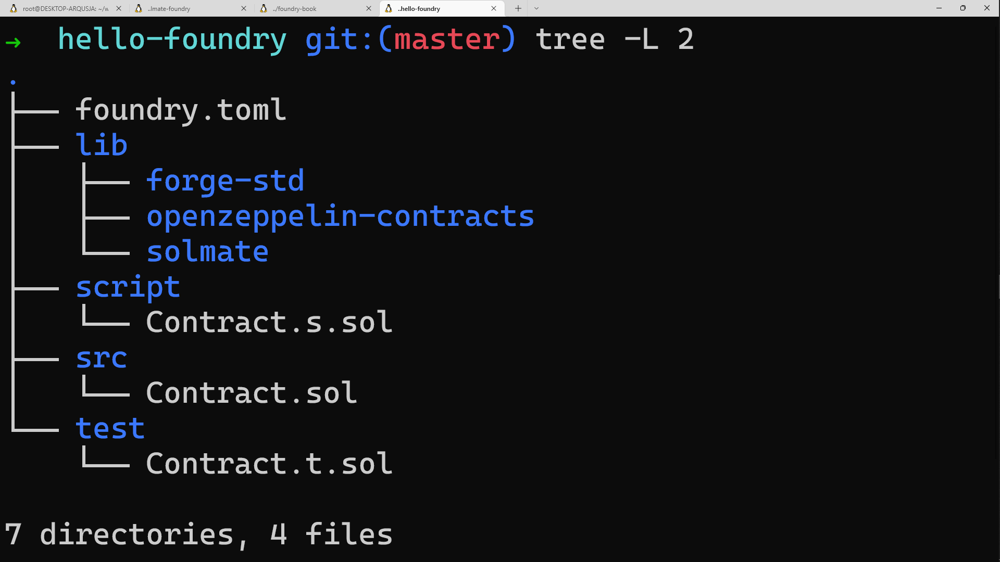
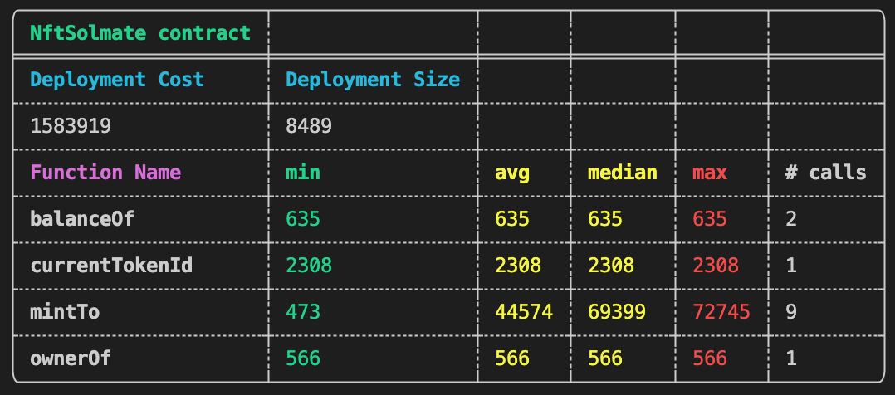

Foundry is a smart contract development toolchain.
Foundry manages your dependencies, compiles your project, runs tests, deploys, and lets you interact with the chain from the command-line.
üìñ Contributing
You can contribute to this book on GitHub.
Sections
To get started with Foundry, install Foundry and set up your first project.
This section will give you an overview of how to create and work with existing projects.
The overview will give you all you need to know about how to use forge to develop, test, and deploy smart contracts.
Learn how to use cast to interact with smart contracts, send transactions, and get chain data from the command-line.
Configuration
Guides on configuring Foundry.
- Configuring with
foundry.toml - Continuous Integration
- Integrating with VSCode
- Shell Autocompletion
- Integrating with Hardhat
Tutorials
Tutorials on building smart contracts with Foundry.
Appendix
References, troubleshooting and more.
- forge Commands
- cast Commands
- anvil commands
- Config Reference
- Forge Standard Library Reference
- DSTest Reference
- Cheatcodes Reference
You can also check out Awesome Foundry, a curated list of awesome Foundry resources, tutorials, tools and libraries!
Installation
On Linux and macOS
If you use Linux or macOS, there are two different ways to install Foundry.
Install the latest release by using foundryup
This is the easiest option for Linux and macOS users.
Open your terminal and type in the following command:
curl -L https://foundry.paradigm.xyz | bash
This will download foundryup. Then install Foundry by running:
foundryup
If everything goes well, you will now have two binaries at your disposal: forge and cast.
üí° Tip
To update
foundryupafter installation, simply runfoundryupagain, and it will update to the latest Foundry release. You can also revert to a specific version of Foundry withfoundryup -v $VERSION.
Building from source
To build from source, you need to get Rust and Cargo. The easiest way to get both is by using rustup.
On Linux and macOS, this is done as follows:
curl https://sh.rustup.rs -sSf | sh
It will download a script and start the installation.
On Windows, build from source
If you use Windows, you need to build from source to get Foundry.
Download and run rustup-init from rustup.rs. It will start the installation in a console.
After this, run the following to build Foundry from source:
cargo install --git https://github.com/foundry-rs/foundry foundry-cli anvil --bins --locked
To update from source, run the same command again.
Using with Docker
Foundry can also be used entirely within a Docker container. If you don't have it, Docker can be installed directly from Docker's website.
Once installed, you can download the latest release by running:
docker pull ghcr.io/foundry-rs/foundry:latest
It is also possible to build the docker image locally. From the Foundry repository, run:
docker build -t foundry .
ℹ️ Note
Some machines (including those with M1 chips) may be unable to build the docker image locally. This is a known issue.
First Steps with Foundry
This section provides an overview of the forge command line tool. We demonstrate how to create a new project, compile, and test it.
To start a new project with Foundry, use forge init:
$ forge init hello_foundry
Let's check out what forge generated for us:
$ cd hello_foundry
$ tree . -d -L 1
.
├── lib
├── src
└── test
3 directories
We can build the project with forge build:
$ forge build
Compiling 7 files with 0.8.13
Compiler run successful
And run the tests with forge test:
$ forge test
No files changed, compilation skipped
Running 1 test for test/Contract.t.sol:ContractTest
[PASS] testExample() (gas: 279)
Test result: ok. 1 passed; 0 failed; finished in 599.09µs
üí° Tip
You can always print help for any subcommand (or their subcommands) by adding
--helpat the end.
Creating a New Project
To start a new project with Foundry, use forge init:
$ forge init hello_foundry
This creates a new directory hello_foundry from the default template. This also initializes a new git repository.
If you want to create a new project using a different template, you would pass the --template flag, like so:
$ forge init --template https://github.com/foundry-rs/forge-template hello_template
For now, let's check what the default template looks like:
$ cd hello_foundry
$ tree . -d -L 1
.
├── lib
├── src
└── test
3 directories
The default template comes with one dependency installed: Forge Standard Library. This is the preferred testing library used for Foundry projects. Additionally, the template also comes with an empty starter contract and a simple test.
Let's build the project:
$ forge build
Compiling 7 files with 0.8.13
Compiler run successful
And run the tests:
$ forge test
No files changed, compilation skipped
Running 1 test for test/Contract.t.sol:ContractTest
[PASS] testExample() (gas: 279)
Test result: ok. 1 passed; 0 failed; finished in 599.09µs
You'll notice that two new directories have popped up: out and cache.
The out directory contains your contract artifact, such as the ABI, while the cache is used by forge to only recompile what is necessary.
Working on an Existing Project
If you download an existing project that uses Foundry, it is really easy to get going.
First, get the project from somewhere. In this example, we will clone the femplate repository from GitHub:
$ git clone https://github.com/abigger87/femplate
$ cd femplate
$ forge install
We run forge install to install the submodule dependencies that are in the project.
To build, use forge build:
$ forge build
Compiling 6 files with 0.8.13
Compiler run successful
And to test, use forge test:
$ forge test
No files changed, compilation skipped
Running 2 tests for src/test/Greeter.t.sol:GreeterTest
[PASS] testExpectArithmetic() (gas: 8802)
[PASS] testSetGm() (gas: 112032)
Test result: ok. 2 passed; 0 failed; finished in 1.42ms
Dependencies
Forge manages dependencies using git submodules by default, which means that it works with any GitHub repository that contains smart contracts.
Adding a dependency
To add a dependency, run forge install:
$ forge install Rari-Capital/solmate
Installing solmate in "/tmp/tmp.cCYDqfwRJM/deps/lib/solmate", (url: https://github.com/Rari-Capital/solmate, tag: None)
Installed solmate
This pulls the solmate library, stages the .gitmodules file in git and makes a commit with the message "Installed solmate".
If we now check the lib folder:
$ tree lib -L 1
lib
├── forge-std
├── solmate
└── weird-erc20
3 directories, 0 files
We can see that Forge installed solmate!
By default, forge install installs the latest master branch version. If you want to install a specific tag or commit,you can do it like so:
$ forge install Rari-Capital/solmate@v6
Remapping dependencies
Forge can remap dependencies to make them easier to import. Forge will automatically try to deduce some remappings for you:
$ forge remappings
ds-test/=lib/solmate/lib/ds-test/src/
forge-std/=lib/forge-std/src/
solmate/=lib/solmate/src/
weird-erc20/=lib/weird-erc20/src/
These remappings mean:
- To import from
forge-stdwe would write:import "forge-std/Contract.sol"; - To import from
ds-testwe would write:import "ds-test/Contract.sol"; - To import from
solmatewe would write:import "solmate/Contract.sol"; - To import from
weird-erc20we would write:import "weird-erc20/Contract.sol";
You can customize these remappings by creating a remappings.txt file in the root of your project.
Let's create a remapping called solmate-utils that points to the utils folder in the solmate repository!
solmate-utils/=lib/solmate/src/utils/
Now we can import any of the contracts in src/utils of the solmate repository like so:
import "solmate-utils/Contract.sol";
Updating dependencies
You can update a specific dependency to the latest commit on the version you have specified using forge update <dep>. For example, if we wanted to pull the latest commit from our previously installed master-version of solmate, we would run:
$ forge update lib/solmate
Alternatively, you can do this for all dependencies at once by just running forge update.
Removing dependencies
You can remove dependencies using forge remove <deps>..., where <deps> is either the full path to the dependency or just the name. For example, to remove solmate both of these commands are equivalent:
$ forge remove solmate
# ... is equivalent to ...
$ forge remove lib/solmate
Hardhat compatibility
Forge also supports Hardhat-style projects where dependencies are npm packages (stored in node_modules) and contracts are stored in contracts as opposed to source.
To enable Hardhat compatibility mode pass the --hh flag.
Project Layout
Forge is flexible on how you structure your project. By default, the structure is:
.
├── foundry.toml
├── lib
│   └── forge-std
│   ├── lib
│   ├── LICENSE-APACHE
│   ├── LICENSE-MIT
│   ├── README.md
│   └── src
├── src
│   └── Contract.sol
└── test
└── Contract.t.sol
6 directories, 6 files
- You can configure Foundry's behavior using
foundry.toml. - Remappings are specified in
remappings.txt. - The default directory for contracts is
src/. - The default directory for tests is
test/, where any contract with a function that starts withtestis considered to be a test. - Dependencies are stored as git submodules in
lib/.
You can configure where Forge looks for both dependencies and contracts using the --lib-paths and --contracts flags respectively. Alternatively you can configure it in foundry.toml.
Combined with remappings, this gives you the flexibility needed to support the project structure of other toolchains such as Hardhat and Truffle.
For automatic Hardhat support you can also pass the --hh flag, which sets the following flags: --lib-paths node_modules --contracts contracts.
Overview of Forge
Forge is a command-line tool that ships with Foundry. Forge tests, builds, and deploys your smart contracts.
Tests
Forge can run your tests with the forge test command. All tests are written in Solidity.
Forge will look for the tests anywhere in your source directory. Any contract with a function that starts with test is considered to be a test. Usually, tests will be placed in src/test by convention and end with .t.sol.
Here's an example of running forge test in a freshly created project, that only has the default test:
$ forge test
No files changed, compilation skipped
Running 1 test for test/Contract.t.sol:ContractTest
[PASS] testExample() (gas: 279)
Test result: ok. 1 passed; 0 failed; finished in 599.09µs
You can also run specific tests by passing a filter:
$ forge test --match-contract ComplicatedContractTest --match-test testDeposit
Compiling 7 files with 0.8.10
Compiler run successful
Running 2 tests for test/ComplicatedContract.t.sol:ComplicatedContractTest
[PASS] testDepositERC20() (gas: 102237)
[PASS] testDepositETH() (gas: 61458)
Test result: ok. 2 passed; 0 failed; finished in 1.15ms
This will run the tests in the ComplicatedContractTest test contract with testDeposit in the name.
Inverse versions of these flags also exist (--no-match-contract and --no-match-test).
You can run tests in filenames that match a glob pattern with --match-path.
$ forge test --match-path test/ContractB.t.sol
No files changed, compilation skipped
Running 1 test for test/ContractB.t.sol:ContractBTest
[PASS] testExample() (gas: 257)
Test result: ok. 1 passed; 0 failed; finished in 492.35µs
The inverse of the --match-path flag is --no-match-path.
Logs and traces
The default behavior for forge test is to only display a summary of passing and failing tests. You can control this behavior by increasing the verbosity (using the -v flag). Each level of verbosity adds more information:
- Level 2 (
-vv): Logs emitted during tests are also displayed. That includes assertion errors from tests, showing information such as expected vs actual. - Level 3 (
-vvv): Stack traces for failing tests are also displayed. - Level 4 (
-vvvv): Stack traces for all tests are displayed, and setup traces for failing tests are displayed. - Level 5 (
-vvvvv): Stack traces and setup traces are always displayed.
Watch mode
Forge can re-run your tests when you make changes to your files using forge test --watch.
By default, only changed test files are re-run. If you want to re-run all tests on a change, you can use forge test --watch --run-all.
Writing Tests
Tests are written in Solidity. If the test function reverts, the test fails, otherwise it passes.
Let's go over the most common way of writing tests, using the Forge Standard Library's Test contract, which is the preferred way of writing tests with Forge.
In this section, we'll go over the basics using the functions from the Forge Std's Test contract, which is itself a superset of DSTest. You will learn how to use more advanced stuff from the Forge Standard Library soon.
DSTest provides basic logging and assertion functionality. To get access to the functions, import forge-std/Test.sol and inherit from Test in your test contract:
import "forge-std/Test.sol";
Let's examine a basic test:
pragma solidity 0.8.10;
import "forge-std/Test.sol";
contract ContractBTest is Test {
uint256 testNumber;
function setUp() public {
testNumber = 42;
}
function testNumberIs42() public {
assertEq(testNumber, 42);
}
function testFailSubtract43() public {
testNumber -= 43;
}
}
Forge uses the following keywords in tests:
setUp: An optional function invoked before each test case is runfunction setUp() public { testNumber = 42; }test: Functions prefixed withtestare run as a test casefunction testNumberIs42() public { assertEq(testNumber, 42); }testFail: The inverse of thetestprefix - if the function does not revert, the test fails
A good practice is to use something likefunction testFailSubtract43() public { testNumber -= 43; }testCannotin combination with theexpectRevertcheatcode (cheatcodes are explained in greater detail in the following section).
Now, instead of usingtestFail, you know exactly what reverted:function testCannotSubtract43() public { vm.expectRevert(stdError.arithmeticError); testNumber -= 43; }
Tests are deployed to 0xb4c79daB8f259C7Aee6E5b2Aa729821864227e84. If you deploy a contract within your test, then 0xb4c...7e84 will be its deployer. If the contract deployed within a test gives special permissions to its deployer, such as Ownable.sol's onlyOwner modifier, then the test contract 0xb4c...7e84 will have those permissions.
Shared setups
It is possible to use shared setups by creating helper abstract contracts and inheriting them in your test contracts:
abstract contract HelperContract {
address constant IMPORTANT_ADDRESS = 0x543d...;
SomeContract someContract;
constructor() {...}
}
contract MyContractTest is Test, HelperContract {
function setUp() public {
someContract = new SomeContract(0, IMPORTANT_ADDRESS);
...
}
}
contract MyOtherContractTest is Test, HelperContract {
function setUp() public {
someContract = new SomeContract(1000, IMPORTANT_ADDRESS);
...
}
}
üí° Tip
Use the
getCodecheatcode to deploy contracts with incompatible Solidity versions.
Cheatcodes
Most of the time, simply testing your smart contracts outputs isn't enough. To manipulate the state of the blockchain, as well as test for specific reverts and events, Foundry is shipped with a set of cheatcodes.
Cheatcodes allow you to change the block number, your identity, and more. They are invoked by calling specific functions on a specially designated address: 0x7109709ECfa91a80626fF3989D68f67F5b1DD12D.
You can access cheatcodes easily via the vm instance available in Forge Standard Library's Test contract. Forge Standard Library is explained in greater detail in the following section.
Let's write a test for a smart contract that is only callable by its owner.
pragma solidity 0.8.10;
import "forge-std/Test.sol";
error Unauthorized();
contract OwnerUpOnly {
address public immutable owner;
uint256 public count;
constructor() {
owner = msg.sender;
}
function increment() external {
if (msg.sender != owner) {
revert Unauthorized();
}
count++;
}
}
contract OwnerUpOnlyTest is Test {
OwnerUpOnly upOnly;
function setUp() public {
upOnly = new OwnerUpOnly();
}
function testIncrementAsOwner() public {
assertEq(upOnly.count(), 0);
upOnly.increment();
assertEq(upOnly.count(), 1);
}
}
If we run forge test now, we will see that the test passes, since OwnerUpOnlyTest is the owner of OwnerUpOnly.
$ forge test
Compiling 7 files with 0.8.10
Compiler run successful
Running 1 test for test/OwnerUpOnly.t.sol:OwnerUpOnlyTest
[PASS] testIncrementAsOwner() (gas: 29162)
Test result: ok. 1 passed; 0 failed; finished in 723.90µs
Let's make sure that someone who is definitely not the owner can't increment the count:
contract OwnerUpOnlyTest is Test {
OwnerUpOnly upOnly;
// ...
function testFailIncrementAsNotOwner() public {
vm.prank(address(0));
upOnly.increment();
}
}
If we run forge test now, we will see that all the test pass.
$ forge test
No files changed, compilation skipped
Running 2 tests for test/OwnerUpOnly.t.sol:OwnerUpOnlyTest
[PASS] testFailIncrementAsNotOwner() (gas: 8413)
[PASS] testIncrementAsOwner() (gas: 29162)
Test result: ok. 2 passed; 0 failed; finished in 1.03ms
The test passed because the prank cheatcode changed our identity to the zero address for the next call (upOnly.increment()). The test case passed since we used the testFail prefix, however, using testFail is considered an anti-pattern since it does not tell us anything about why upOnly.increment() reverted.
If we run the tests again with traces turned on, we can see that we reverted with the correct error message.
$ forge test -vvvv --match-test testFailIncrementAsNotOwner
No files changed, compilation skipped
Running 1 test for test/OwnerUpOnly.t.sol:OwnerUpOnlyTest
[PASS] testFailIncrementAsNotOwner() (gas: 8413)
Traces:
[8413] OwnerUpOnlyTest::testFailIncrementAsNotOwner()
├─ [0] VM::prank(0x0000000000000000000000000000000000000000)
│ └─ ← ()
├─ [247] 0xce71…c246::d09de08a()
│ └─ ← 0x82b42900
└─ ← 0x82b42900
Test result: ok. 1 passed; 0 failed; finished in 677.31µs
To be sure in the future, let's make sure that we reverted because we are not the owner using the expectRevert cheatcode:
contract OwnerUpOnlyTest is Test {
OwnerUpOnly upOnly;
// ...
// Notice that we replaced `testFail` with `test`
function testIncrementAsNotOwner() public {
vm.expectRevert(Unauthorized.selector);
vm.prank(address(0));
upOnly.increment();
}
}
If we run forge test one last time, we see that the test still passes, but this time we are sure that it will always fail if we revert for any other reason.
$ forge test
No files changed, compilation skipped
Running 2 tests for test/OwnerUpOnly.t.sol:OwnerUpOnlyTest
[PASS] testIncrementAsNotOwner() (gas: 8739)
[PASS] testIncrementAsOwner() (gas: 29162)
Test result: ok. 2 passed; 0 failed; finished in 1.15ms
Another cheatcode that is perhaps not so intuitive is the expectEmit function. Before looking at expectEmit, we need to understand what an event is.
Events are inheritable members of contracts. When you emit an event, the arguments are stored on the blockchain. The indexed attribute can be added to a maximum of three parameters of an event to form a data structure known as a "topic." Topics allow users to search for events on the blockchain.
pragma solidity 0.8.10;
import "forge-std/Test.sol";
contract EmitContractTest is Test {
event Transfer(address indexed from, address indexed to, uint256 amount);
function testExpectEmit() public {
ExpectEmit emitter = new ExpectEmit();
// Check that topic 1, topic 2, and data are the same as the following emitted event.
// Checking topic 3 here doesn't matter, because `Transfer` only has 2 indexed topics.
vm.expectEmit(true, true, false, true);
// The event we expect
emit Transfer(address(this), address(1337), 1337);
// The event we get
emitter.t();
}
function testExpectEmitDoNotCheckData() public {
ExpectEmit emitter = new ExpectEmit();
// Check topic 1 and topic 2, but do not check data
vm.expectEmit(true, true, false, false);
// The event we expect
emit Transfer(address(this), address(1337), 1338);
// The event we get
emitter.t();
}
}
contract ExpectEmit {
event Transfer(address indexed from, address indexed to, uint256 amount);
function t() public {
emit Transfer(msg.sender, address(1337), 1337);
}
}
When we call vm.expectEmit(true, true, false, true);, we want to check the 1st and 2nd indexed topic for the next event.
The expected Transfer event in testExpectEmit() means we are expecting that from is address(this), and to is address(1337). This is compared against the event emitted from emitter.t().
In other words, we are checking that the first topic from emitter.t() is equal to address(this). The 3rd argument in expectEmit is set to false because there is no need to check the third topic in the Transfer event, since there are only two. It does not matter even if we set to true.
The 4th argument in expectEmit is set to true, which means that we want to check "non-indexed topics", also known as data.
For example, we want the data from the expected event in testExpectEmit - which is amount - to equal to the data in the actual emitted event. In other words, we are asserting that amount emitted by emitter.t() is equal to 1337. If the fourth argument in expectEmit was set to false, we would not check amount.
In other words, testExpectEmitDoNotCheckData is a valid test case, even though the amounts differ, since we do not check the data.
üìö Reference
See the Cheatcodes Reference for a complete overview of all the available cheatcodes.
Forge Standard Library Overview
Forge Standard Library (Forge Std for short) is a collection of helpful contracts that make writing tests easier, faster, and more user-friendly.
Using Forge Std is the preferred way of writing tests with Foundry.
It provides all the essential functionality you need to get started writing tests:
Vm.sol: Up-to-date cheatcodes interfaceconsole.solandconsole2.sol: Hardhat-style logging functionalityTest.sol: A superset of DSTest containing standard libraries, a cheatcodes instance (vm), and Hardhat console
Simply import Test.sol and inherit from Test in your test contract:
import "forge-std/Test.sol";
contract ContractTest is Test { ...
Now, you can:
// Access Hevm via the `vm` instance
vm.startPrank(alice);
// Assert and log using Dappsys Test
assertEq(dai.balanceOf(alice), 10000e18);
// Log with the Hardhat `console` (`console2`)
console.log(alice.balance);
// Use anything from the Forge Std std-libraries
deal(address(dai), alice, 10000e18);
To import the Vm interface or the console library individually:
import "forge-std/Vm.sol";
import "forge-std/console.sol";
Note: console2.sol contains patches to console.sol that allows Forge to decode traces for calls to the console, but it is not compatible with Hardhat.
import "forge-std/console2.sol";
Standard libraries
Forge Std currently consists of five main libraries.
Std Assertions
Std Assertions expand upon the assertion functions from the DSTest library.
Std Cheats
Std Cheats are wrappers around Forge cheatcodes that make them safer to use and improve the UX.
You can access Std Cheats by simply calling them inside your test contract, as you would any other internal function:
// set up a prank as Alice with 100 ETH balance
hoax(alice, 100 ether);
Std Errors
Std Errors provide wrappers around common internal Solidity errors and reverts.
Std Errors are most useful in combination with the expectRevert cheatcode, as you do not need to remember the internal Solidity panic codes yourself. Note that you have to access them through stdError, as this is a library.
// expect an arithmetic error on the next call (e.g. underflow)
vm.expectRevert(stdError.arithmeticError);
Std Storage
Std Storage makes manipulating contract storage easy. It can find and write to the storage slot(s) associated with a particular variable.
The Test contract already provides a StdStorage instance stdstore through which you can access any std-storage functionality. Note that you must add using stdStorage for StdStorage in your test contract first.
// find the variable `score` in the contract `game`
// and change its value to 10
stdstore
.target(address(game))
.sig(game.score.selector)
.checked_write(10);
Std Math
Std Math is a library that simplifies the process of some mathematical calculations.
The Test contract also provides access to Std Math. You can use the Std Math functions by typing stdMath. before the name of the function, just like in the next example:
// Expected result is 10
stdMath.abs(-10)
üìö Reference
See the Forge Standard Library Reference for a complete overview of Forge Standard Library.
Understanding Traces
Forge can produce traces either for failing tests (-vvv) or all tests (-vvvv).
Traces follow the same general format:
[<Gas Usage>] <Contract>::<Function>(<Parameters>)
├─ [<Gas Usage>] <Contract>::<Function>(<Parameters>)
│ └─ ← <Return Value>
└─ ← <Return Value>
Each trace can have many more subtraces, each denoting a call to a contract and a return value.
If your terminal supports color, the traces will also come with a variety of colors:
- Green: For calls that do not revert
- Red: For reverting calls
- Blue: For calls to cheat codes
- Cyan: For emitted logs
- Yellow: For contract deployments
The gas usage (marked in square brackets) is for the entirety of the function call. You may notice, however, that sometimes the gas usage of one trace does not exactly match the gas usage of all its subtraces:
[24661] OwnerUpOnlyTest::testIncrementAsOwner()
├─ [2262] OwnerUpOnly::count()
│ └─ ← 0
├─ [20398] OwnerUpOnly::increment()
│ └─ ← ()
├─ [262] OwnerUpOnly::count()
│ └─ ← 1
└─ ← ()
The gas unaccounted for is due to some extra operations happening between calls, such as arithmetic and store reads/writes.
Forge will try to decode as many signatures and values as possible, but sometimes this is not possible. In these cases, the traces will appear like so:
[<Gas Usage>] <Address>::<Calldata>
└─ ← <Return Data>
Forking mode
Forge supports testing in a forked environment.
To run tests in a forked environment - such as a forked Ethereum mainnet - pass a RPC URL via the --fork-url flag:
forge test --fork-url <your_rpc_url>
The following values are changed to reflect those of the chain at the moment of forking:
block_numberchain_idgas_limitgas_priceblock_base_fee_per_gasblock_coinbaseblock_timestampblock_difficulty
It is possible to specify a block from which to fork with --fork-block-number:
forge test --fork-url <your_rpc_url> --fork-block-number 1
Forking is especially useful when you need to interact with existing contracts, and you may choose to do integration testing this way, as if you were on an actual network.
Caching
If both --fork-url and --fork-block-number are specified, then data for that block is cached for future test runs.
The data is cached in ~/.foundry/cache/<chain id>/<block number>. To clear the cache, simply remove the directory.
It is also possible to ignore the cache entirely by passing --no-storage-caching, or with foundry.toml by configuring no_storage_caching and rpc_storage_caching.
Improved traces
Forge supports identifying contracts in a forked environment with Etherscan.
To use this feature, pass the Etherscan API key via the --etherscan-api-key flag:
forge test --fork-url <your_rpc_url> --etherscan-api-key <your_etherscan_api_key>
Alternatively, you can set the ETHERSCAN_API_KEY environment variable.
Advanced Testing
Forge comes with a number of advanced testing methods:
In the future, Forge will also support these:
Each chapter dives into what problem the testing methods solve, and how to apply them to your own project.
Fuzz Testing
Forge supports property based testing.
Property-based testing is a way of testing general behaviors as opposed to isolated scenarios.
Let's examine what that means by writing a unit test, finding the general property we are testing for, and converting it to a property-based test instead:
pragma solidity 0.8.10;
import "forge-std/Test.sol";
contract Safe {
receive() external payable {}
function withdraw() external {
payable(msg.sender).transfer(address(this).balance);
}
}
contract SafeTest is Test {
Safe safe;
// Needed so the test contract itself can receive ether
// when withdrawing
receive() external payable {}
function setUp() public {
safe = new Safe();
}
function testWithdraw() public {
payable(address(safe)).transfer(1 ether);
uint256 preBalance = address(this).balance;
safe.withdraw();
uint256 postBalance = address(this).balance;
assertEq(preBalance + 1 ether, postBalance);
}
}
Running the test, we see it passes:
$ forge test
Compiling 6 files with 0.8.10
Compiler run successful
Running 1 test for test/Safe.t.sol:SafeTest
[PASS] testWithdraw() (gas: 19462)
Test result: ok. 1 passed; 0 failed; finished in 781.50µs
This unit test does test that we can withdraw ether from our safe. However, who is to say that it works for all amounts, not just 1 ether?
The general property here is: given a safe balance, when we withdraw, we should get whatever is in the safe.
Forge will run any test that takes at least one parameter as a property-based test, so let's rewrite:
contract SafeTest is Test {
// ...
function testWithdraw(uint256 amount) public {
payable(address(safe)).transfer(amount);
uint256 preBalance = address(this).balance;
safe.withdraw();
uint256 postBalance = address(this).balance;
assertEq(preBalance + amount, postBalance);
}
}
If we run the test now, we can see that Forge runs the property-based test, but it fails for high values of amount:
$ forge test
Compiling 1 files with 0.8.10
Compiler run successful
Running 1 test for test/Safe.t.sol:SafeTest
[FAIL. Counterexample: calldata=0x215a2f200000000000000000000000000000000000000001000000000000000000000000, args=[79228162514264337593543950336]] testWithdraw(uint256) (runs: 45, μ: 19554, ~: 19554)
Test result: FAILED. 0 passed; 1 failed; finished in 23.75ms
The default amount of ether that the test contract is given is 2**96 wei (as in DappTools), so we have to restrict the type of amount to uint96 to make sure we don't try to send more than we have:
function testWithdraw(uint96 amount) public {
And now it passes:
$ forge test
Compiling 1 files with 0.8.10
Compiler run successful
Running 1 test for test/Safe.t.sol:SafeTest
[PASS] testWithdraw(uint96) (runs: 256, μ: 13268, ~: 19654)
Test result: ok. 1 passed; 0 failed; finished in 88.82ms
You may want to exclude certain cases using the assume cheatcode. In those cases, fuzzer will discard the inputs and start a new fuzz run:
function testWithdraw(uint96 amount) public {
vm.assume(amount > 0.1 ether);
// snip
}
There are different ways to run property-based tests, notably parametric testing and fuzzing. Forge only supports fuzzing.
Interpreting results
You might have noticed that fuzz tests are summarized a bit differently compared to unit tests:
- "runs" refers to the amount of scenarios the fuzzer tested. By default, the fuzzer will generate 256 scenarios, however, this can be configured using the
FOUNDRY_FUZZ_RUNSenvironment variable. - "μ" (Greek letter mu) is the mean gas used across all fuzz runs
- "~" (tilde) is the median gas used across all fuzz runs
Differential Testing
Forge can be used for differential testing and differential fuzzing. You can even test against non-EVM executables using the ffi cheatcode.
Background
Differential testing cross references multiple implementations of the same function by comparing each one's output. Imagine we have a function specification F(X), and two implementations of that specification: f1(X) and f2(X). We expect f1(x) == f2(x) for all x that exist in an appropriate input space. If f1(x) != f2(x), we know that at least one function is incorrectly implementing F(X). This process of testing for equality and identifying discrepancies is the core of differential testing.
Differential fuzzing is an extension of differential testing. Differential fuzzing programatically generates many values of x to find discrepencies and edge cases that manually chosen inputs might not reveal.
Note: the
==operator in this case can be a custom definition of equality. For example, if testing floating point implementations, you might use approximate equality with a certain tolerance.
Some real life uses of this type of testing include:
- Comparing upgraded implementations to their predecessors
- Testing code against known reference implementations
- Confirming compatibility with third party tools and dependencies
Below are some examples of how Forge is used for differential testing.
Primer: The ffi cheatcode
ffi allows you to execute an arbitrary shell command and capture the output. Here's a mock example:
import "forge-std/Test.sol";
contract TestContract is Test {
function testMyFFI () public {
string[] memory cmds = new string[](2);
cmds[0] = "cat";
cmds[1] = "address.txt"; // assume contains abi-encoded address.
bytes memory result = vm.ffi(cmds);
address loadedAddress = abi.decode(result, (address));
// Do something with the address
// ...
}
}
An address has previously been written to address.txt, and we read it in using the FFI cheatcode. This data can now be used throughout your test contract.
Example: Differential Testing Merkle Tree Implementations
Merkle Trees are a cryptographic commitment scheme frequently used in blockchain applications. Their popularity has led to a number of different implementations of Merkle Tree generators, provers, and verifiers. Merkle roots and proofs are often generated using a language like JavaScript or Python, while proof verification usually occurs on-chain in Solidity.
Murky is a complete implementation of Merkle roots, proofs, and verification in Solidity. Its test suite includes differential tests against OpenZeppelin's Merkle proof library, as well as root generation tests against a reference JavaScript implementation. These tests are powered by Foundry's fuzzing and ffi capabilities.
Differential fuzzing against a reference TypeScript implementation
Using the ffi cheatcode, Murky tests its own Merkle root implementation against a TypeScript implementation using data provided by Forge's fuzzer:
function testMerkleRootMatchesJSImplementationFuzzed(bytes32[] memory leaves) public {
vm.assume(leaves.length > 1);
bytes memory packed = abi.encodePacked(leaves);
string[] memory runJsInputs = new string[](8);
// Build ffi command string
runJsInputs[0] = 'npm';
runJsInputs[1] = '--prefix';
runJsInputs[2] = 'differential_testing/scripts/';
runJsInputs[3] = '--silent';
runJsInputs[4] = 'run';
runJsInputs[5] = 'generate-root-cli';
runJsInputs[6] = leaves.length.toString();
runJsInputs[7] = packed.toHexString();
// Run command and capture output
bytes memory jsResult = vm.ffi(runJsInputs);
bytes32 jsGeneratedRoot = abi.decode(jsResult, (bytes32));
// Calculate root using Murky
bytes32 murkyGeneratedRoot = m.getRoot(leaves);
assertEq(murkyGeneratedRoot, jsGeneratedRoot);
}
Note: see
Strings2.solin the Murky Repo for the library that enables(bytes memory).toHexString()
Forge runs npm --prefix differential_testing/scripts/ --silent run generate-root-cli {numLeaves} {hexEncodedLeaves}. This calculates the Merkle root for the input data using the reference JavaScript implementation. The script prints the root to stdout, and that printout is captured as bytes in the return value of vm.ffi().
The test then calculates the root using the Solidity implementation.
Finally, the test asserts that the both roots are exactly equal. If they are not equal, the test fails.
Differential fuzzing against OpenZeppelin's Merkle Proof Library
You may want to use differential testing against another Solidity implementation. In that case, ffi is not needed. Instead, the reference implementation is imported directly into the test.
import "openzeppelin-contracts/contracts/utils/cryptography/MerkleProof.sol";
//...
function testCompatabilityOpenZeppelinProver(bytes32[] memory _data, uint256 node) public {
vm.assume(_data.length > 1);
vm.assume(node < _data.length);
bytes32 root = m.getRoot(_data);
bytes32[] memory proof = m.getProof(_data, node);
bytes32 valueToProve = _data[node];
bool murkyVerified = m.verifyProof(root, proof, valueToProve);
bool ozVerified = MerkleProof.verify(proof, root, valueToProve);
assertTrue(murkyVerified == ozVerified);
}
Differential testing against a known edge case
Differential tests are not always fuzzed -- they are also useful for testing known edge cases. In the case of the Murky codebase, the initial implementation of the log2ceil function did not work for certain arrays whose lengths were close to a power of 2 (like 129). As a safety check, a test is always run against an array of this length and compared to the TypeScript implementation. You can see the full test here.
Standardized Testing against reference data
FFI is also useful for injecting reproducible, standardized data into the testing environment. In the Murky library, this is used as a benchmark for gas snapshotting (see forge snapshot).
bytes32[100] data;
uint256[8] leaves = [4, 8, 15, 16, 23, 42, 69, 88];
function setUp() public {
string[] memory inputs = new string[](2);
inputs[0] = "cat";
inputs[1] = "src/test/standard_data/StandardInput.txt";
bytes memory result = vm.ffi(inputs);
data = abi.decode(result, (bytes32[100]));
m = new Merkle();
}
function testMerkleGenerateProofStandard() public view {
bytes32[] memory _data = _getData();
for (uint i = 0; i < leaves.length; ++i) {
m.getProof(_data, leaves[i]);
}
}
src/test/standard_data/StandardInput.txt is a text file that contains an encoded bytes32[100] array. It's generated outside of the test and can be used in any language's Web3 SDK. It looks something like:
0xf910ccaa307836354233316666386231414464306335333243453944383735313..423532
The standardized testing contract reads in the file using ffi. It decodes the data into an array and then, in this example, generates proofs for 8 different leaves. Because the data is constant and standard, we can meaningfully measure gas and performance improvements using this test.
Of course, one could just hardcode the array into the test! But that makes it much harder to do consistent testing across contracts, implementations, etc.
Example: Differential Testing Gradual Dutch Auctions
The reference implementation for Paradigm's Gradual Dutch Auction mechanism contains a number of differential, fuzzed tests. It is an excellent repository to further explore differential testing using ffi.
- Differential tests for Discrete GDAs
- Differential tests for Continuous GDAs
- Reference Python implementation
Reference Repositories
If you have another repository that would serve as a reference, please contribute it!
Deploying
Forge can deploy smart contracts to a given network with the forge create command.
Forge can deploy only one contract at a time.
To deploy a contract, you must provide a RPC URL (env: ETH_RPC_URL) and the private key of the account that will deploy the contract.
To deploy MyContract to a network:
$ forge create --rpc-url <your_rpc_url> --private-key <your_private_key> src/MyContract.sol:MyContract
compiling...
success.
Deployer: 0xa735b3c25f...
Deployed to: 0x4054415432...
Transaction hash: 0x6b4e0ff93a...
Solidity files may contain multiple contracts. :MyContract above specifies which contract to deploy from the src/MyContract.sol file.
Use the --constructor-args flag to pass arguments to the constructor:
// SPDX-License-Identifier: UNLICENSED
pragma solidity ^0.8.0;
import {ERC20} from "solmate/tokens/ERC20.sol";
contract MyToken is ERC20 {
constructor(
string memory name,
string memory symbol,
uint8 decimals,
uint256 initialSupply
) ERC20(name, symbol, decimals) {
_mint(msg.sender, initialSupply);
}
}
Additionally, we can tell Forge to verify our contract on Etherscan, if the network is supported, by passing --verify.
$ forge create --rpc-url <your_rpc_url> \
--constructor-args "ForgeUSD" "FUSD" 18 1000000000000000000000 \
--private-key <your_private_key> src/MyToken.sol:MyToken \
--verify
Verifying a pre-existing contract
It is recommended to use the --verify flag with forge create to automatically verify the contract on Etherscan after a deployment.
Note that ETHERSCAN_API_KEY must be set.
If you are verifying an already deployed contract, read on.
You can verify a contract on Etherscan with the forge verify-contract command.
You must provide:
- the contract address
- the path to the contract
<path>:<contractname> - your Etherscan API key (env:
ETHERSCAN_API_KEY).
Moreover, you may need to provide:
- compiler version used for build, with 8 hex digits from the commit version prefix (the commit will usually not be a nightly build). It is auto-detected if not specified.
- the constructor arguments in the ABI-encoded format, if there are any
- the number of optimizations, if the Solidity optimizer was activated. It is auto-detected if not specified.
- the chain ID, if the contract is not on Ethereum Mainnet
Let's say you want to verify MyToken (see above). You set the number of optimizations to 1 million, compiled it with v0.8.10, and deployed it, as shown above, to the Kovan testnet (chain ID: 42). Note that --num-of-optimizations will default to 0 if not set on verification, while it defaults to 200 if not set on deployment, so make sure you pass --num-of-optimizations 200 if you left the default compilation settings.
Here's how to verify it:
$ forge verify-contract --chain-id 42 --num-of-optimizations 1000000 --constructor-args \
$(cast abi-encode "constructor(string,string,uint256,uint256)" "ForgeUSD" "FUSD" 18 1000000000000000000000) \
--compiler-version v0.8.10+commit.fc410830 <the_contract_address> src/MyToken.sol:MyToken <your_etherscan_api_key>
Submitted contract for verification:
Response: `OK`
GUID: `a6yrbjp5prvakia6bqp5qdacczyfhkyi5j1r6qbds1js41ak1a`
url: https://kovan.etherscan.io//address/0x6a54…3a4c#code
You can check verification status with the forge verify-check command:
$ forge verify-check --chain-id 42 <GUID> <your_etherscan_api_key>
Contract successfully verified.
üí° Tip
Use Cast's
abi-encodeto ABI-encode arguments.In this example, we ran
cast abi-encode "constructor(string,string,uint8,uint256)" "ForgeUSD" "FUSD" 18 1000000000000000000000to ABI-encode the arguments.
Troubleshooting
Invalid character 'x' at position 1
Make sure the private key string does not begin with 0x.
EIP-1559 not activated
EIP-1559 is not supported or not activated on the RPC server. Pass the --legacy flag to use legacy transactions instead of the EIP-1559 ones. If you do development in a local environment, you can use Hardhat instead of Ganache.
Failed to parse tokens
Make sure the passed arguments are of correct type.
Signature error
Make sure the private key is correct.
Compiler version commit for verify
If you want to check the exact commit you are running locally, try: ~/.svm/0.x.y/solc-0.x.y --version where x and
y are major and minor version numbers respectively. The output of this will be something like:
solc, the solidity compiler commandline interface
Version: 0.8.12+commit.f00d7308.Darwin.appleclang
Note: You cannot just paste the entire string "0.8.12+commit.f00d7308.Darwin.appleclang" as the argument for the compiler-version. But you can use the 8 hex digits of the commit to look up exactly what you should copy and paste from compiler version.
Gas Tracking
Forge can help you estimate how much gas your contract will consume.
Currently, Forge ships with two different tools for this job, but they may be merged in the future:
- Gas reports: Gas reports give you an overview of how much Forge thinks the individual functions in your contracts will consume in gas.
- Gas snapshots: Gas snapshots give you an overview of how much each test consumes in gas.
Gas reports and gas snapshots differ in some ways:
- Gas reports use tracing to figure out gas costs for individual contract calls.
This gives more granular insight, at the cost of speed. - Gas snapshots have more built-in tools, such as diffs and exporting the results to a file.
Snapshots are not as granular as gas reports, but they are faster to generate.
Gas Reports
Forge can produce gas reports for your contracts. You can configure which contracts output gas reports via the gas_reports field in foundry.toml.
To produce reports for specific contracts:
gas_reports = ["MyContract", "MyContractFactory"]
To produce reports for all contracts:
gas_reports = ["*"]
To generate gas reports, run forge test --gas-report.
You can also use it in combination with other subcommands, such as forge test --match-test testBurn --gas-report, to generate only a gas report relevant to this test.
Example output:
╭───────────────────────┬─────────────────┬────────┬────────┬────────┬─────────╮
│ MockERC1155 contract ┆ ┆ ┆ ┆ ┆ │
╞═══════════════════════╪═════════════════╪════════╪════════╪════════╪═════════╡
│ Deployment Cost ┆ Deployment Size ┆ ┆ ┆ ┆ │
├╌╌╌╌╌╌╌╌╌╌╌╌╌╌╌╌╌╌╌╌╌╌╌┼╌╌╌╌╌╌╌╌╌╌╌╌╌╌╌╌╌┼╌╌╌╌╌╌╌╌┼╌╌╌╌╌╌╌╌┼╌╌╌╌╌╌╌╌┼╌╌╌╌╌╌╌╌╌┤
│ 1082720 ┆ 5440 ┆ ┆ ┆ ┆ │
├╌╌╌╌╌╌╌╌╌╌╌╌╌╌╌╌╌╌╌╌╌╌╌┼╌╌╌╌╌╌╌╌╌╌╌╌╌╌╌╌╌┼╌╌╌╌╌╌╌╌┼╌╌╌╌╌╌╌╌┼╌╌╌╌╌╌╌╌┼╌╌╌╌╌╌╌╌╌┤
│ Function Name ┆ min ┆ avg ┆ median ┆ max ┆ # calls │
├╌╌╌╌╌╌╌╌╌╌╌╌╌╌╌╌╌╌╌╌╌╌╌┼╌╌╌╌╌╌╌╌╌╌╌╌╌╌╌╌╌┼╌╌╌╌╌╌╌╌┼╌╌╌╌╌╌╌╌┼╌╌╌╌╌╌╌╌┼╌╌╌╌╌╌╌╌╌┤
│ balanceOf ┆ 596 ┆ 596 ┆ 596 ┆ 596 ┆ 44 │
├╌╌╌╌╌╌╌╌╌╌╌╌╌╌╌╌╌╌╌╌╌╌╌┼╌╌╌╌╌╌╌╌╌╌╌╌╌╌╌╌╌┼╌╌╌╌╌╌╌╌┼╌╌╌╌╌╌╌╌┼╌╌╌╌╌╌╌╌┼╌╌╌╌╌╌╌╌╌┤
│ balanceOfBatch ┆ 2363 ┆ 4005 ┆ 4005 ┆ 5647 ┆ 2 │
├╌╌╌╌╌╌╌╌╌╌╌╌╌╌╌╌╌╌╌╌╌╌╌┼╌╌╌╌╌╌╌╌╌╌╌╌╌╌╌╌╌┼╌╌╌╌╌╌╌╌┼╌╌╌╌╌╌╌╌┼╌╌╌╌╌╌╌╌┼╌╌╌╌╌╌╌╌╌┤
│ batchBurn ┆ 2126 ┆ 5560 ┆ 2584 ┆ 11970 ┆ 3 │
├╌╌╌╌╌╌╌╌╌╌╌╌╌╌╌╌╌╌╌╌╌╌╌┼╌╌╌╌╌╌╌╌╌╌╌╌╌╌╌╌╌┼╌╌╌╌╌╌╌╌┼╌╌╌╌╌╌╌╌┼╌╌╌╌╌╌╌╌┼╌╌╌╌╌╌╌╌╌┤
│ batchMint ┆ 2444 ┆ 135299 ┆ 125081 ┆ 438531 ┆ 18 │
├╌╌╌╌╌╌╌╌╌╌╌╌╌╌╌╌╌╌╌╌╌╌╌┼╌╌╌╌╌╌╌╌╌╌╌╌╌╌╌╌╌┼╌╌╌╌╌╌╌╌┼╌╌╌╌╌╌╌╌┼╌╌╌╌╌╌╌╌┼╌╌╌╌╌╌╌╌╌┤
│ burn ┆ 814 ┆ 2117 ┆ 2117 ┆ 3421 ┆ 2 │
├╌╌╌╌╌╌╌╌╌╌╌╌╌╌╌╌╌╌╌╌╌╌╌┼╌╌╌╌╌╌╌╌╌╌╌╌╌╌╌╌╌┼╌╌╌╌╌╌╌╌┼╌╌╌╌╌╌╌╌┼╌╌╌╌╌╌╌╌┼╌╌╌╌╌╌╌╌╌┤
│ isApprovedForAll ┆ 749 ┆ 749 ┆ 749 ┆ 749 ┆ 1 │
├╌╌╌╌╌╌╌╌╌╌╌╌╌╌╌╌╌╌╌╌╌╌╌┼╌╌╌╌╌╌╌╌╌╌╌╌╌╌╌╌╌┼╌╌╌╌╌╌╌╌┼╌╌╌╌╌╌╌╌┼╌╌╌╌╌╌╌╌┼╌╌╌╌╌╌╌╌╌┤
│ mint ┆ 26039 ┆ 31943 ┆ 27685 ┆ 118859 ┆ 22 │
├╌╌╌╌╌╌╌╌╌╌╌╌╌╌╌╌╌╌╌╌╌╌╌┼╌╌╌╌╌╌╌╌╌╌╌╌╌╌╌╌╌┼╌╌╌╌╌╌╌╌┼╌╌╌╌╌╌╌╌┼╌╌╌╌╌╌╌╌┼╌╌╌╌╌╌╌╌╌┤
│ safeBatchTransferFrom ┆ 2561 ┆ 137750 ┆ 126910 ┆ 461304 ┆ 8 │
├╌╌╌╌╌╌╌╌╌╌╌╌╌╌╌╌╌╌╌╌╌╌╌┼╌╌╌╌╌╌╌╌╌╌╌╌╌╌╌╌╌┼╌╌╌╌╌╌╌╌┼╌╌╌╌╌╌╌╌┼╌╌╌╌╌╌╌╌┼╌╌╌╌╌╌╌╌╌┤
│ safeTransferFrom ┆ 1335 ┆ 34505 ┆ 28103 ┆ 139557 ┆ 9 │
├╌╌╌╌╌╌╌╌╌╌╌╌╌╌╌╌╌╌╌╌╌╌╌┼╌╌╌╌╌╌╌╌╌╌╌╌╌╌╌╌╌┼╌╌╌╌╌╌╌╌┼╌╌╌╌╌╌╌╌┼╌╌╌╌╌╌╌╌┼╌╌╌╌╌╌╌╌╌┤
│ setApprovalForAll ┆ 24485 ┆ 24485 ┆ 24485 ┆ 24485 ┆ 12 │
╰───────────────────────┴─────────────────┴────────┴────────┴────────┴─────────╯
Gas Snapshots
Forge can generate gas snapshots for all your test functions. This can be useful to get a general feel for how much gas your contract will consume, or to compare gas usage before and after various optimizations.
To generate the gas snapshot, run forge snapshot.
This will generate a file called .gas-snapshot by default with all your
tests (not including fuzz tests) and their respective gas usage.
$ forge snapshot
$ cat .gas-snapshot
ERC20Test:testApprove() (gas: 31162)
ERC20Test:testBurn() (gas: 59875)
ERC20Test:testFailTransferFromInsufficientAllowance() (gas: 81034)
ERC20Test:testFailTransferFromInsufficientBalance() (gas: 81662)
ERC20Test:testFailTransferInsufficientBalance() (gas: 52882)
ERC20Test:testInfiniteApproveTransferFrom() (gas: 90167)
ERC20Test:testMetadata() (gas: 14606)
ERC20Test:testMint() (gas: 53830)
ERC20Test:testTransfer() (gas: 60473)
ERC20Test:testTransferFrom() (gas: 84152)
Filtering
If you would like to specify a different output file, run forge snapshot --snap <FILE_NAME>.
You can also sort the results by gas usage. Use the --asc option to sort the results in
ascending order and --desc to sort the results in descending order.
Finally, you can also specify a min/max gas threshold for all your tests.
To only include results above a threshold, you can use the --min <VALUE> option.
In the same way, to only include results under a threshold,
you can use the --max <VALUE> option.
Keep in mind that the changes will be made in the snapshot file, and not in the snapshot being displayed on your screen.
Comparing gas usage
If you would like to compare the current snapshot file with your
latest changes, you can use the --diff or --check options.
--diff will compare against the snapshot and display changes from the snapshot.
It can also optionally take a file name (--diff <FILE_NAME>), with the default
being .gas-snapshot.
For example:
$ forge snapshot --diff .gas-snapshot2
Running 10 tests for src/test/ERC20.t.sol:ERC20Test
[PASS] testApprove() (gas: 31162)
[PASS] testBurn() (gas: 59875)
[PASS] testFailTransferFromInsufficientAllowance() (gas: 81034)
[PASS] testFailTransferFromInsufficientBalance() (gas: 81662)
[PASS] testFailTransferInsufficientBalance() (gas: 52882)
[PASS] testInfiniteApproveTransferFrom() (gas: 90167)
[PASS] testMetadata() (gas: 14606)
[PASS] testMint() (gas: 53830)
[PASS] testTransfer() (gas: 60473)
[PASS] testTransferFrom() (gas: 84152)
Test result: ok. 10 passed; 0 failed; finished in 2.86ms
testBurn() (gas: 0 (0.000%))
testFailTransferFromInsufficientAllowance() (gas: 0 (0.000%))
testFailTransferFromInsufficientBalance() (gas: 0 (0.000%))
testFailTransferInsufficientBalance() (gas: 0 (0.000%))
testInfiniteApproveTransferFrom() (gas: 0 (0.000%))
testMetadata() (gas: 0 (0.000%))
testMint() (gas: 0 (0.000%))
testTransfer() (gas: 0 (0.000%))
testTransferFrom() (gas: 0 (0.000%))
testApprove() (gas: -8 (-0.000%))
Overall gas change: -8 (-0.000%)
--check will compare a snapshot with an existing snapshot file and display all the
differences, if any. You can change the file to compare against by providing a different file name: --check <FILE_NAME>.
For example:
$ forge snapshot --check .gas-snapshot2
Running 10 tests for src/test/ERC20.t.sol:ERC20Test
[PASS] testApprove() (gas: 31162)
[PASS] testBurn() (gas: 59875)
[PASS] testFailTransferFromInsufficientAllowance() (gas: 81034)
[PASS] testFailTransferFromInsufficientBalance() (gas: 81662)
[PASS] testFailTransferInsufficientBalance() (gas: 52882)
[PASS] testInfiniteApproveTransferFrom() (gas: 90167)
[PASS] testMetadata() (gas: 14606)
[PASS] testMint() (gas: 53830)
[PASS] testTransfer() (gas: 60473)
[PASS] testTransferFrom() (gas: 84152)
Test result: ok. 10 passed; 0 failed; finished in 2.47ms
Diff in "ERC20Test::testApprove()": consumed "(gas: 31162)" gas, expected "(gas: 31170)" gas
Debugger
Forge ships with an interactive debugger.
The debugger is accessible on forge debug and on forge test.
Using forge test:
$ forge test --debug $FUNC
Where $FUNC is the signature of the function you want to debug. For example:
$ forge test --debug "testSomething"
If you have multiple contracts with the same function name, you need to limit the matching functions down to only one case using --match-path and --match-contract.
If the matching test is a fuzz test, the debugger will open the first failing fuzz scenario, or the last successful one, whichever comes first.
Using forge debug:
$ forge debug --debug $FILE --sig $FUNC
Where $FILE is the path to the contract you want to debug, and $FUNC is the signature of the function you want to debug. For example:
$ forge debug --debug src/SomeContract.sol --sig "myFunc(uint256,string)" 123 "hello"
You can also specify raw calldata using --sig instead of a function signature.
If your source file contains more than one contract, specify the contract you want to debug using the --target-contract flag.
Debugger layout

When the debugger is run, you are presented with a terminal divided into four quadrants:
- Quadrant 1: The opcodes in the debugging session, with the current opcode highlighted. Additionally, the address of the current account, the program counter and the accumulated gas usage is also displayed
- Quadrant 2: The current stack, as well as the size of the stack
- Quadrant 3: The source view
- Quadrant 4: The current memory of the EVM
As you step through your code, you will notice that the words in the stack and memory sometimes change color.
For the memory:
- Red words are about to be written to by the current opcode
- Green words were written to by the previous opcode
- Cyan words are being read by the current opcode
For the stack, cyan words are either being read or popped by the current opcode.
Navigating
General
- q: Quit the debugger
Navigating calls
- 0-9 + k: Step a number of times backwards (alternatively scroll up with your mouse)
- 0-9 + j: Step a number of times forwards (alternatively scroll down with your mouse)
- g: Move to the beginning of the transaction
- G: Move to the end of the transaction
- c: Move to the previous call-type instruction (i.e.
CALL,STATICCALL,DELEGATECALL, andCALLCODE). - C: Move to the next call-type instruction
- a: Move to the previous
JUMPorJUMPIinstruction - s: Move to the next
JUMPDESTinstruction
Navigating memory
- Ctrl + j: Scroll the memory view down
- Ctrl + k: Scroll the memory view up
- m: Show memory as UTF8
Navigating the stack
- J: Scroll the stack view down
- K: Scroll the stack view up
- t: Show labels on the stack to see what items the current op will consume
Overview of Cast
Cast is Foundry's command-line tool for performing Ethereum RPC calls. You can make smart contract calls, send transactions, or retrieve any type of chain data - all from your command-line!
How to use Cast
To use Cast, run the cast command followed by a subcommand:
$ cast <subcommand>
Examples
Let's use cast to retrieve the total supply of the DAI token:
$ cast call 0x6b175474e89094c44da98b954eedeac495271d0f "totalSupply()(uint256)" --rpc-url https://eth-mainnet.alchemyapi.io/v2/Lc7oIGYeL_QvInzI0Wiu_pOZZDEKBrdf
8603853182003814300330472690
cast also provides many convenient subcommands, such as for decoding calldata:
$ cast 4byte-decode 0x1F1F897F676d00000000000000000000000000000000000000000000000000000000000000000000000000000000000000000000000000000000000000000000000003e7
1) "fulfillRandomness(bytes32,uint256)"
0x676d000000000000000000000000000000000000000000000000000000000000
999
You can also use cast to send arbitrary messages. Here's an example of sending a message between two Anvil accounts.
$ cast send --private-key <Your Private Key> 0x3c44cdddb6a900fa2b585dd299e03d12fa4293bc $(cast --from-utf8 "hello world") --rpc-url http://127.0.0.1:8545/
üìö Reference
See the
castReference for a complete overview of all the available subcommands.
Overview of Anvil
Anvil is a local testnet node shipped with Foundry. You can use it for testing your contracts from frontends or for interacting over RPC.
Anvil is part of the Foundry suite and is installed alongside forge and cast. If you haven't installed Foundry yet, see Foundry installation.
Note: If you have an older version of Foundry installed, you'll need to re-install
foundryupin order for Anvil to be downloaded.
How to use Anvil
To use Anvil, simply type anvil. You should see a list of accounts and private keys available for use, as well as the address and port that the node is listening on.
Anvil is highly configurable. You can run anvil -h to see all the configuration options.
Some basic options are:
# Number of dev accounts to generate and configure. [default: 10]
anvil -a, --accounts <ACCOUNTS>
# The EVM hardfork to use. [default: latest]
anvil --hardfork <HARDFORK>
# Port number to listen on. [default: 8545]
anvil -p, --port <PORT>
üìö Reference
See the
anvilReference for in depth information on Anvil and its capabilities.
Configuring with foundry.toml
Forge can be configured using a configuration file called foundry.toml, which is placed in the root of your project.
Configuration can be namespaced by profiles. The default profile is named default, from which all other profiles inherit. You are free to customize the default profile, and add as many new profiles as you need.
Additionally, you can create a global foundry.toml in your home directory.
Let's take a look at a configuration file that contains two profiles: the default profile, which always enables the optimizer, as well as a CI profile, that always displays traces:
[default]
optimizer = true
optimizer_runs = 20000
[ci]
verbosity = 4
When running forge, you can specify the profile to use using the FOUNDRY_PROFILE environment variable.
üìö Reference
See the
foundry.tomlReference for a complete overview of what you can configure.
Continuous Integration
GitHub Actions
To test your project using GitHub Actions, here is a sample workflow:
on: [push]
name: test
jobs:
check:
name: Foundry project
runs-on: ubuntu-latest
steps:
- uses: actions/checkout@v3
with:
submodules: recursive
- name: Install Foundry
uses: foundry-rs/foundry-toolchain@v1
with:
version: nightly
- name: Run tests
run: forge test -vvv
Integrating with VSCode
You can get Solidity support for Visual Studio Code by installing the VSCode Solidity extension.
To make the extension play nice with Foundry, you will need to place your remappings in remappings.txt. If they are already in foundry.toml, copy them over and use remappings.txt instead. If you just use the autogenerated remappings that Foundry provides, run forge remappings > remappings.txt.
If you use a non-standard project layout, you may have to add the following to your .vscode/settings.json:
{
"solidity.packageDefaultDependenciesContractsDirectory": "src",
"solidity.packageDefaultDependenciesDirectory": "lib"
}
Where src is the source code directory and lib is your dependency directory.
It is also recommended to specify a Solidity compiler version:
"solidity.compileUsingRemoteVersion": "v0.8.10"
To get Foundry in line with the chosen version, add the following to your default profile in foundry.toml.
solc_version = "0.8.10"
Shell Autocompletion
You can generate autocompletion shell scripts for bash, elvish, fish, powershell, and zsh.
zsh
First, ensure that the following is present somewhere in your ~/.zshrc file (if not, add it):
autoload -U compinit
compinit -i
Then run:
forge completions zsh > /usr/local/share/zsh/site-functions/_forge
cast completions zsh > /usr/local/share/zsh/site-functions/_cast
fish
mkdir -p $HOME/.config/fish/completions
forge completions fish > $HOME/.config/fish/completions/forge.fish
cast completions fish > $HOME/.config/fish/completions/cast.fish
source $HOME/.config/fish/config.fish
bash
mkdir -p $HOME/.local/share/bash-completion/completions
forge completions bash > $HOME/.local/share/bash-completion/completions/forge
cast completions bash > $HOME/.local/share/bash-completion/completions/cast
exec bash
Static Analyzers
Slither
To test your project using slither, here is a sample slither.config.json:
{
"filter_paths": "lib",
"solc_remaps": [
"ds-test/=lib/ds-test/src/",
"forge-std/=lib/forge-std/src/"
]
}
Note, you need to update solc used by Slither to the same version used by Forge with solc-select:
pip3 install slither-analyzer
pip3 install solc-select
solc-select install 0.8.13
solc-select use 0.8.13
slither src/Contract.sol
See the slither wiki for more information.
Mythril
To test your project using mythril, here is a sample mythril.config.json:
{
"remappings": [
"ds-test/=lib/ds-test/src/",
"forge-std/=lib/forge-std/src/"
],
"optimizer": {
"enabled": true,
"runs": 200
}
}
See the mythril docs for more information.
Integrating with Hardhat
It's possible to have your Foundry project work alongside Hardhat. This assume that you have a working Foundry project and want to add Hardhat. It also assumes familiarity with Hardhat.
Why does this not work out of the box?
Hardhat by default expects libraries to be installed in node_modules, the default folder for all NodeJS dependencies. Foundry expects them to be in lib. Of course we can configure Foundry but not easily to the directory structure of node_modules.
For this reason, the recommended setup is to use hardhat-preprocessor. Hardhat-preprocessor is, as the name suggests, a Hardhat plugin which allows us to preprocess our contracts before they are run through the Solidity compiler.
We use this to modify the import directives in our Solidity files to resolve absolute paths to the libraries based on the Foundry remappings.txt file before Hardhat attempts to compile them. This of course just happens in memory so your actual Solidity files are never changed. Now, Hardhat is happy to comply and compiles using the libraries you installed with Foundry.
Just show me the example repo!
If you want to adapt this to a Foundry project you already have or learn how it works, read below:
Instructions
Inside your Foundry project working directory:
npm init- Setup your project details as usual.npm install --save-dev hardhat- Install Hardhat.npx hardhat- Setup your Hardhat project as you see fit in the same directory.forge remappings > remappings.txt- You will need to re-run this everytime you modify libraries in Foundry.
Now you need to make the following changes to your Hardhat project. The following assumes a TypeScript setup:
npm install --save-dev hardhat-preprocessor- Details on hardhat-preprocessor- Add
import "hardhat-preprocessor";to yourhardhat.config.tsfile. - Ensure the following function is present (you can add it to your
hardhat.config.tsfile or somewhere else and import it):
function getRemappings() {
return fs
.readFileSync("remappings.txt", "utf8")
.split("\n")
.filter(Boolean) // remove empty lines
.map((line) => line.trim().split("="));
}
Thanks to @DrakeEvansV1 for this snippet
- Add the following to your exported
HardhatUserConfigobject:
...
preprocess: {
eachLine: (hre) => ({
transform: (line: string) => {
if (line.match(/^\s*import /i)) {
getRemappings().forEach(([find, replace]) => {
if (line.match(find)) {
line = line.replace(find, replace);
}
});
}
return line;
},
}),
},
paths: {
sources: "./src",
cache: "./cache_hardhat",
},
...
Now, Hardhat should work well with Foundry. You can run Foundry tests or Hardhat tests / scripts and have access to your contracts.
Creating an NFT with Solmate
This tutorial will walk you through creating an OpenSea compatible NFT with Foundry and Solmate. A full implementation of this tutorial can be found here.
This tutorial is for illustrative purposes only and provided on an as-is basis. The tutorial is not audited nor fully tested. No code in this tutorial should be used in a production environment.
Create project and install dependencies
Start by setting up a Foundry project following the steps outlined in the Getting started section. We will also install Solmate for their ERC721 implementation, as well as some OpenZeppelin utility libraries. Install the dependencies by running the following commands from the root of your project:
forge install Rari-Capital/solmate Openzeppelin/openzeppelin-contracts
These dependencies will be added as git submodules to your project.
If you have followed the instructions correctly your project should be structured like this:

Implement a basic NFT
We are then going to rename the boilerplate contract in src/Contract.sol to src/NFT.sol and replace the code:
// SPDX-License-Identifier: UNLICENSED
pragma solidity 0.8.10;
import "solmate/tokens/ERC721.sol";
import "openzeppelin-contracts/contracts/utils/Strings.sol";
contract NFT is ERC721 {
uint256 public currentTokenId;
constructor(
string memory _name,
string memory _symbol
) ERC721(_name, _symbol) {}
function mintTo(address recipient) public payable returns (uint256) {
uint256 newItemId = ++currentTokenId;
_safeMint(recipient, newItemId);
return newItemId;
}
function tokenURI(uint256 id) public view virtual override returns (string memory) {
return Strings.toString(id);
}
}
Let's take a look at this very basic implementation of an NFT. We start by importing to contracts from our git submodules. We import solmate's gas optimised implementation of the ERC721 standard which our NFT contract will inherit from. Our constructor takes the _name and _symbol arguments for our NFT and passes them on to the constructor of the parent ERC721 implementation. Lastly we implement the mintTo function which allows anyone to mint an NFT. This function increments the currentTokenId and makes use of the _safeMint function of our parent contract.
Compile & deploy with forge
To compile the NFT contract run forge build. By default the compiler output will be in the out directory. To deploy our compiled contract with Forge we have to set environment variables for the RPC endpoint and the private key we want to use to deploy.
Set your environment variables by running:
export RPC_URL=<Your RPC endpoint>
export PRIVATE_KEY=<Your wallets private key>
Once set, you can deploy your NFT with Forge by running the below command while adding the relevant constructor arguments to the NFT contract:
forge create NFT --rpc-url=$RPC_URL --private-key=$PRIVATE_KEY --constructor-args <name> <symbol>
If successfully deployed, you will see the deploying wallet's address, the contract's address as well as the transaction hash printed to your terminal.
Minting NFTs from your contract
Calling functions on your NFT contract is made simple with Cast, Foundry's command-line tool for interacting with smart contracts, sending transactions, and getting chain data. Let's have a look at how we can use it to mint NFTs from our NFT contract.
Given that you already set your RPC and private key env variables during deployment, mint an NFT from your contract by running:
cast send --rpc-url=$RPC_URL <contractAddress> "mintTo(address)" <arg> --private-key=$PRIVATE_KEY
Well done! You just minted your first NFT from your contract. You can sanity check the owner of the NFT with currentTokenId equal to 1 by running the below cast call command. The address you provided above should be returned as the owner.
cast call --rpc-url=$RPC_URL --private-key=$PRIVATE_KEY <contractAddress> "ownerOf(uint256)" 1
Extending our NFT contract functionality and testing
Let's extend our NFT by adding metadata to represent the content of our NFTs, as well as set a minting price, a maximum supply and the possibility to withdraw the collected proceeds from minting. To follow along you can replace your current NFT contract with the code snippet below:
// SPDX-License-Identifier: UNLICENSED
pragma solidity >=0.8.10;
import "solmate/tokens/ERC721.sol";
import "openzeppelin-contracts/contracts/utils/Strings.sol";
import "openzeppelin-contracts/contracts/access/Ownable.sol";
error MintPriceNotPaid();
error MaxSupply();
error NonExistentTokenURI();
error WithdrawTransfer();
contract NFT is ERC721, Ownable {
using Strings for uint256;
string public baseURI;
uint256 public currentTokenId;
uint256 public constant TOTAL_SUPPLY = 10_000;
uint256 public constant MINT_PRICE = 0.08 ether;
constructor(
string memory _name,
string memory _symbol,
string memory _baseURI
) ERC721(_name, _symbol) {
baseURI = _baseURI;
}
function mintTo(address recipient) public payable returns (uint256) {
if (msg.value != MINT_PRICE) {
revert MintPriceNotPaid();
}
uint256 newTokenId = ++currentTokenId;
if (newTokenId > TOTAL_SUPPLY) {
revert MaxSupply();
}
_safeMint(recipient, newTokenId);
return newTokenId;
}
function tokenURI(uint256 tokenId)
public
view
virtual
override
returns (string memory)
{
if (ownerOf(tokenId) == address(0)) {
revert NonExistentTokenURI();
}
return
bytes(baseURI).length > 0
? string(abi.encodePacked(baseURI, tokenId.toString()))
: "";
}
function withdrawPayments(address payable payee) external onlyOwner {
uint256 balance = address(this).balance;
(bool transferTx, ) = payee.call{value: balance}("");
if (!transferTx) {
revert WithdrawTransfer();
}
}
}
Among other things, we have added metadata that can be queried from any front-end application like OpenSea, by calling the tokenURI method on our NFT contract.
Note: If you want to provide a real URL to the constructor at deployment, and host the metadata of this NFT contract please follow the steps outlined here.
Let's test some of this added functionality to make sure it works as intended. Foundry offers an extremely fast EVM native testing framework through Forge.
Within your test folder rename the current Contract.t.sol test file to NFT.t.sol. This file will contain all tests regarding the NFT's mintTo method. Next, replace the existing boilerplate code with the below:
// SPDX-License-Identifier: UNLICENSED
pragma solidity 0.8.10;
import "forge-std/Test.sol";
import "../src/NFT.sol";
contract NFTTest is Test {
using stdStorage for StdStorage;
NFT private nft;
function setUp() public {
// Deploy NFT contract
nft = new NFT("NFT_tutorial", "TUT", "baseUri");
}
function testFailNoMintPricePaid() public {
nft.mintTo(address(1));
}
function testMintPricePaid() public {
nft.mintTo{value: 0.08 ether}(address(1));
}
function testFailMaxSupplyReached() public {
uint256 slot = stdstore
.target(address(nft))
.sig("currentTokenId()")
.find();
bytes32 loc = bytes32(slot);
bytes32 mockedCurrentTokenId = bytes32(abi.encode(10000));
vm.store(address(nft), loc, mockedCurrentTokenId);
nft.mintTo{value: 0.08 ether}(address(1));
}
function testFailMintToZeroAddress() public {
nft.mintTo{value: 0.08 ether}(address(0));
}
function testNewMintOwnerRegistered() public {
nft.mintTo{value: 0.08 ether}(address(1));
uint256 slotOfNewOwner = stdstore
.target(address(nft))
.sig(nft.ownerOf.selector)
.with_key(1)
.find();
uint160 ownerOfTokenIdOne = uint160(
uint256(
(vm.load(address(nft), bytes32(abi.encode(slotOfNewOwner))))
)
);
assertEq(address(ownerOfTokenIdOne), address(1));
}
function testBalanceIncremented() public {
nft.mintTo{value: 0.08 ether}(address(1));
uint256 slotBalance = stdstore
.target(address(nft))
.sig(nft.balanceOf.selector)
.with_key(address(1))
.find();
uint256 balanceFirstMint = uint256(
vm.load(address(nft), bytes32(slotBalance))
);
assertEq(balanceFirstMint, 1);
nft.mintTo{value: 0.08 ether}(address(1));
uint256 balanceSecondMint = uint256(
vm.load(address(nft), bytes32(slotBalance))
);
assertEq(balanceSecondMint, 2);
}
function testSafeContractReceiver() public {
Receiver receiver = new Receiver();
nft.mintTo{value: 0.08 ether}(address(receiver));
uint256 slotBalance = stdstore
.target(address(nft))
.sig(nft.balanceOf.selector)
.with_key(address(receiver))
.find();
uint256 balance = uint256(vm.load(address(nft), bytes32(slotBalance)));
assertEq(balance, 1);
}
function testFailUnSafeContractReceiver() public {
vm.etch(address(1), bytes("mock code"));
nft.mintTo{value: 0.08 ether}(address(1));
}
function testWithdrawalWorksAsOwner() public {
// Mint an NFT, sending eth to the contract
Receiver receiver = new Receiver();
address payable payee = payable(address(0x1337));
uint256 priorPayeeBalance = payee.balance;
nft.mintTo{value: nft.MINT_PRICE()}(address(receiver));
// Check that the balance of the contract is correct
assertEq(address(nft).balance, nft.MINT_PRICE());
uint256 nftBalance = address(nft).balance;
// Withdraw the balance and assert it was transferred
nft.withdrawPayments(payee);
assertEq(payee.balance, priorPayeeBalance + nftBalance);
}
function testWithdrawalFailsAsNotOwner() public {
// Mint an NFT, sending eth to the contract
Receiver receiver = new Receiver();
nft.mintTo{value: nft.MINT_PRICE()}(address(receiver));
// Check that the balance of the contract is correct
assertEq(address(nft).balance, nft.MINT_PRICE());
// Confirm that a non-owner cannot withdraw
vm.expectRevert("Ownable: caller is not the owner");
vm.startPrank(address(0xd3ad));
nft.withdrawPayments(payable(address(0xd3ad)));
vm.stopPrank();
}
}
contract Receiver is ERC721TokenReceiver {
function onERC721Received(
address operator,
address from,
uint256 id,
bytes calldata data
) external override returns (bytes4) {
return this.onERC721Received.selector;
}
}
The test suite is set up as a contract with a setUp method which runs before every individual test.
As you can see, Forge offers a number of cheatcodes to manipulate state to accommodate your testing scenario.
For example, our testFailMaxSupplyReached test checks that an attempt to mint fails when the max supply of NFT is reached. Thus, the currentTokenId of the NFT contract needs to be set to the max supply by using the store cheatcode which allows you to write data to your contracts storage slots. The storage slots you wish to write to can easily be found using the
forge-std helper library. You can run the test with the following command:
forge test
If you want to put your Forge skills to practice, write tests for the remaining methods of our NFT contract. Feel free to PR them to nft-tutorial, where you will find the full implementation of this tutorial.
Gas reports for your function calls
Foundry provides comprehensive gas reports about your contracts. For every function called within your tests, it returns the minimum, average, median and max gas cost. To print the gas report simply run:
forge test --gas-report
This comes in handy when looking at various gas optimizations within your contracts.
Let's have a look at the gas savings we made by substituting OpenZeppelin with Solmate for our ERC721 implementation. You can find the NFT implementation using both libraries here. Below are the resulting gas reports when running forge test --gas-report on that repository.
As you can see, our implementation using Solmate saves around 500 gas on a successful mint (the max gas cost of the mintTo function calls).


That's it, I hope this will give you a good practical basis of how to get started with foundry. We think there is no better way to deeply understand solidity than writing your tests in solidity. You will also experience less context switching between javascript and solidity. Happy coding!
Note: Follow this tutorial to learn how to deploy the NFT contract used here with solidity scripting.
Dockerizing a Foundry project
This tutorial shows you how to build, test, and deploy a smart contract using Foundry's Docker image. It adapts code from the solmate nft tutorial. If you haven't completed that tutorial yet, and are new to solidity, you may want to start with it first. Alternatively, if you have some familiarity with Docker and Solidity, you can use your own existing project and adjust accordingly. The full source code for both the NFT and the Docker stuff is available here.
This tutorial is for illustrative purposes only and provided on an as-is basis. The tutorial is not audited nor fully tested. No code in this tutorial should be used in a production environment.
Installation and Setup
The only installation required to run this tutorial is Docker, and optionally, an IDE of your choice. Follow the Docker installation instructions.
To keep future commands succinct, let's re-tag the image:
docker tag ghcr.io/foundry-rs/foundry:latest foundry:latest
Having Foundry installed locally is not strictly required, but it may be helpful for debugging. You can install it using foundryup.
Finally, to use any of the cast or forge create portions of this tutorial, you will need access to an Ethereum node. If you don't have your own node running (likely), you can use a 3rd party node service. We won't recommend a specific provider in this tutorial. A good place to start learning about Nodes-as-a-Service is Ethereum's article on the subject.
For the rest of this tutorial, it is assumed that the RPC endpoint of your ethereum node is set like this: export RPC_URL=<YOUR_RPC_URL>
A tour around the Foundry docker image
The docker image can be used in two primary ways:
- As an interface directly to forge and cast
- As a base image for building your own containerized test, build, and deployment tooling
We will cover both, but let's start by taking a look at interfacing with foundry using docker. This is also a good test that your local installation worked!
We can run any of the cast commands against our docker image. Let's fetch the latest block information:
$ docker run foundry "cast block --rpc-url $RPC_URL latest"
baseFeePerGas "0xb634241e3"
difficulty "0x2e482bdf51572b"
extraData "0x486976656f6e20686b"
gasLimit "0x1c9c380"
gasUsed "0x652993"
hash "0x181748772da2f968bcc91940c8523bb6218a7d57669ded06648c9a9fb6839db5"
logsBloom "0x406010046100001198c220108002b606400029444814008210820c04012804131847150080312500300051044208430002008029880029011520380060262400001c538d00440a885a02219d49624aa110000003094500022c003600a00258009610c410323580032000849a0408a81a0a060100022505202280c61880c80020e080244400440404520d210429a0000400010089410c8408162903609c920014028a94019088681018c909980701019201808040004100000080540610a9144d050020220c10a24c01c000002005400400022420140e18100400e10254926144c43a200cc008142080854088100128844003010020c344402386a8c011819408"
miner "0x1ad91ee08f21be3de0ba2ba6918e714da6b45836"
mixHash "0xb920857687476c1bcb21557c5f6196762a46038924c5f82dc66300347a1cfc01"
nonce "0x1ce6929033fbba90"
number "0xdd3309"
parentHash "0x39c6e1aa997d18a655c6317131589fd327ae814ef84e784f5eb1ab54b9941212"
receiptsRoot "0x4724f3b270dcc970f141e493d8dc46aeba6fffe57688210051580ac960fe0037"
sealFields []
sha3Uncles "0x1dcc4de8dec75d7aab85b567b6ccd41ad312451b948a7413f0a142fd40d49347"
size "0x1d6bb"
stateRoot "0x0d4b714990132cf0f21801e2931b78454b26aad706fc6dc16b64e04f0c14737a"
timestamp "0x6246259b"
totalDifficulty "0x9923da68627095fd2e7"
transactions [...]
uncles []
If we're in a directory with some Solidity source code, we can mount that directory into docker and use forge however we wish. For example:
$ docker run -v $PWD:/app foundry "forge test --root /app --watch"
No files changed, compilation skipped
Running 8 tests for src/test/SolmateNft.sol:SolmateNftTests
[PASS] testBalanceIncremented() (gas: 218897)
[PASS] testFailMaxSupplyReached() (gas: 136426)
[PASS] testFailMintToZeroAddress() (gas: 34564)
[PASS] testFailNoMintPricePaid() (gas: 5503)
[PASS] testFailUnSafeContractReceiver() (gas: 89813)
[PASS] testMintPricePaid() (gas: 81279)
[PASS] testNewMintOwnerRegistered() (gas: 192272)
[PASS] testSafeContractReceiver() (gas: 274092)
Test result: ok. 8 passed; 0 failed; finished in 2.50ms
Running 8 tests for src/test/OpenZeppelinNft.t.sol:OpenZeppelinNftTests
[PASS] testBalanceIncremented() (gas: 219326)
[PASS] testFailMaxSupplyReached() (gas: 136426)
[PASS] testFailMintToZeroAddress() (gas: 34620)
[PASS] testFailNoMintPricePaid() (gas: 5503)
[PASS] testFailUnSafeContractReceiver() (gas: 90282)
[PASS] testMintPricePaid() (gas: 81512)
[PASS] testNewMintOwnerRegistered() (gas: 192487)
[PASS] testSafeContractReceiver() (gas: 274588)
Test result: ok. 8 passed; 0 failed; finished in 2.71ms
You can see our code was compiled and tested entirely within the container. Also, since we passed the --watch option, the container will recompile the code whenever a change is detected.
Note: The Foundry docker image is built on alpine and designed to be as slim as possible. For this reason, it does not currently include development resources like
git. If you are planning to manage your entire development lifecycle within the container, you should build a custom development image on top of Foundry's image.
Creating a "build and test" image
Let's use the Foundry docker image as a base for using our own Docker image. We'll use the image to:
- Build our solidity code
- Run our solidity tests
A simple Dockerfile can accomplish these two goals:
# Use the latest foundry image
FROM ghcr.io/foundry-rs/foundry
# Copy our source code into the container
WORKDIR /app
# Build and test the source code
COPY . .
RUN forge build
RUN forge test
You can build this docker image and watch forge build/run the tests within the container:
$ docker build --no-cache --progress=plain .
Now, what happens if one of our tests fail? Modify src/test/NFT.t.sol as you please to make one of the tests fail. Try to build image again.
$ docker build --no-cache --progress=plain .
<...>
#9 0.522 Failed tests:
#9 0.522 [FAIL. Reason: Ownable: caller is not the owner] testWithdrawalFailsAsNotOwner() (gas: 193917)
#9 0.522
#9 0.522 Encountered a total of 1 failing tests, 9 tests succeeded
------
error: failed to solve: executor failed running [/bin/sh -c forge test]: exit code: 1
Our image failed to build because our tests failed! This is actually a nice property, because it means if we have a Docker image that successfully built (and therefore is available for use), we know the code inside the image passed the tests.*
*Of course, chain of custody of your docker images is very important. Docker layer hashes can be very useful for verification. In a production environment, consider signing your docker images.
Creating a deployer image
Now, we'll move on to a bit more of an advanced Dockerfile. Let's add an entrypoint that allows us to deploy our code by using the built (and tested!) image. We can target the Rinkeby testnet first.
# Use the latest foundry image
FROM ghcr.io/foundry-rs/foundry
# Copy our source code into the container
WORKDIR /app
# Build and test the source code
COPY . .
RUN forge build
RUN forge test
# Set the entrypoint to the forge deployment command
ENTRYPOINT ["forge", "create"]
Let's build the image, this time giving it a name:
$ docker build --no-cache --progress=plain -t nft-deployer .
Here's how we can use our docker image to deploy:
$ docker run nft-deployer --rpc-url $RPC_URL --constructor-args "ForgeNFT" "FNFT" "https://ethereum.org" --private-key $PRIVATE_KEY ./src/NFT.sol:NFT
No files changed, compilation skipped
Deployer: 0x496e09fcb240c33b8fda3b4b74d81697c03b6b3d
Deployed to: 0x23d465eaa80ad2e5cdb1a2345e4b54edd12560d3
Transaction hash: 0xf88c68c4a03a86b0e7ecb05cae8dea36f2896cd342a6af978cab11101c6224a9
We've just built, tested, and deployed our contract entirely within a docker container! This tutorial was intended to for testnet, but you can run the exact same Docker image targeting mainnet and be confident that the same code is being deployed by the same tooling.
Why is this useful?
Docker is about portability, re-producibility, and environment invariance. This means you can be less concerned about unexpected changes when you switch between environments, networks, developers, etc. Here are a few basic examples of why I like to use Docker images for smart contract deployment:
- Reduces overhead of ensuring system level dependencies match between deployment environments (e.g. does your production runner always have the same version of
forgeas your dev runner?) - Increases confidence that code has been tested prior to deployment and has not been altered (e.g. if, in the above image, your code re-compiles on deployment, that's a major red flag).
- Eases pain points around segregation of duties: people with your mainnet credentials do not need to ensure they have the latest compiler, codebase, etc. It's easy to ensure that the docker deploy image someone ran in testnet is identical to the one targeting mainnet.
- At the risk of sounding web2, Docker is an accepted standard on virtually all public cloud providers. It makes it easy to schedule jobs, tasks, etc that need to interact with the blockchain.
Troubleshooting
As noted above, the Foundry image does not include git by default. This can cause certain commands to fail without a clear cause. For example:
$ docker run foundry "forge init --no-git /test"
Initializing /test...
Installing ds-test in "/test/lib/ds-test", (url: https://github.com/dapphub/ds-test, tag: None)
Error:
0: No such file or directory (os error 2)
Location:
cli/src/cmd/forge/install.rs:107
In this case, the failure is still caused by a missing git installation. The recommended fix is to build off the existing Foundry image and install any additional development dependencies you need.
Testing EIP-712 Signatures
Intro
EIP-712 introduced the ability to sign transactions off-chain which other users can later execute on-chain. A common example is EIP-2612 gasless token approvals.
Traditionally, setting a user or contract allowance to transfer ERC-20 tokens from an owner's balance required the owner to submit an approval on-chain. As this proved to be poor UX, DAI introduced ERC-20 permit (later standardized as EIP-2612) allowing the owner to sign the approval off-chain which the spender (or anyone else!) can submit on-chain prior to the transferFrom.
This guide will cover testing this pattern in Solidity using Foundry.
Diving In
First we'll cover a basic token transfer:
- Owner signs approval off-chain
- Spender calls
permitandtransferFromon-chain
We'll use Solmate's ERC-20, as EIP-712 and EIP-2612 batteries come included. Take a glance over the full contract if you haven't already - here is permit implemented:
/*//////////////////////////////////////////////////////////////
EIP-2612 LOGIC
//////////////////////////////////////////////////////////////*/
function permit(
address owner,
address spender,
uint256 value,
uint256 deadline,
uint8 v,
bytes32 r,
bytes32 s
) public virtual {
require(deadline >= block.timestamp, "PERMIT_DEADLINE_EXPIRED");
// Unchecked because the only math done is incrementing
// the owner's nonce which cannot realistically overflow.
unchecked {
address recoveredAddress = ecrecover(
keccak256(
abi.encodePacked(
"\x19\x01",
DOMAIN_SEPARATOR(),
keccak256(
abi.encode(
keccak256(
"Permit(address owner,address spender,uint256 value,uint256 nonce,uint256 deadline)"
),
owner,
spender,
value,
nonces[owner]++,
deadline
)
)
)
),
v,
r,
s
);
require(recoveredAddress != address(0) && recoveredAddress == owner, "INVALID_SIGNER");
allowance[recoveredAddress][spender] = value;
}
emit Approval(owner, spender, value);
}
We'll also be using a custom SigUtils contract to help create, hash, and sign the approvals off-chain.
// SPDX-License-Identifier: UNLICENSED
pragma solidity 0.8.13;
contract SigUtils {
bytes32 internal DOMAIN_SEPARATOR;
constructor(bytes32 _DOMAIN_SEPARATOR) {
DOMAIN_SEPARATOR = _DOMAIN_SEPARATOR;
}
// keccak256("Permit(address owner,address spender,uint256 value,uint256 nonce,uint256 deadline)");
bytes32 public constant PERMIT_TYPEHASH =
0x6e71edae12b1b97f4d1f60370fef10105fa2faae0126114a169c64845d6126c9;
struct Permit {
address owner;
address spender;
uint256 value;
uint256 nonce;
uint256 deadline;
}
// computes the hash of a permit
function getStructHash(Permit memory _permit)
internal
pure
returns (bytes32)
{
return
keccak256(
abi.encode(
PERMIT_TYPEHASH,
_permit.owner,
_permit.spender,
_permit.value,
_permit.nonce,
_permit.deadline
)
);
}
// computes the hash of the fully encoded EIP-712 message for the domain, which can be used to recover the signer
function getTypedDataHash(Permit memory _permit)
public
view
returns (bytes32)
{
return
keccak256(
abi.encodePacked(
"\x19\x01",
DOMAIN_SEPARATOR,
getStructHash(_permit)
)
);
}
}
Setup
- Deploy a mock ERC-20 token and
SigUtilshelper with the token's EIP-712 domain separator - Create private keys to mock the owner and spender
- Derive their addresses using the
vm.addrcheatcode - Mint the owner a test token
contract ERC20Test is Test {
MockERC20 internal token;
SigUtils internal sigUtils;
uint256 internal ownerPrivateKey;
uint256 internal spenderPrivateKey;
address internal owner;
address internal spender;
function setUp() public {
token = new MockERC20();
sigUtils = new SigUtils(token.DOMAIN_SEPARATOR());
ownerPrivateKey = 0xA11CE;
spenderPrivateKey = 0xB0B;
owner = vm.addr(ownerPrivateKey);
spender = vm.addr(spenderPrivateKey);
token.mint(owner, 1e18);
}
Testing: permit
- Create an approval for the spender
- Compute its digest using
sigUtils.getTypedDataHash - Sign the digest using the
vm.signcheatcode with the owner's private key - Store the
uint8 v, bytes32 r, bytes32 sof the signature - Call
permitwith the signed permit and signature to execute the approval on-chain
function test_Permit() public {
SigUtils.Permit memory permit = SigUtils.Permit({
owner: owner,
spender: spender,
value: 1e18,
nonce: 0,
deadline: 1 days
});
bytes32 digest = sigUtils.getTypedDataHash(permit);
(uint8 v, bytes32 r, bytes32 s) = vm.sign(ownerPrivateKey, digest);
token.permit(
permit.owner,
permit.spender,
permit.value,
permit.deadline,
v,
r,
s
);
assertEq(token.allowance(owner, spender), 1e18);
assertEq(token.nonces(owner), 1);
}
- Ensure failure for calls with an expired deadline, invalid signer, invalid nonce, and signature replay
function testRevert_ExpiredPermit() public {
SigUtils.Permit memory permit = SigUtils.Permit({
owner: owner,
spender: spender,
value: 1e18,
nonce: token.nonces(owner),
deadline: 1 days
});
bytes32 digest = sigUtils.getTypedDataHash(permit);
(uint8 v, bytes32 r, bytes32 s) = vm.sign(ownerPrivateKey, digest);
vm.warp(1 days + 1 seconds); // fast forward one second past the deadline
vm.expectRevert("PERMIT_DEADLINE_EXPIRED");
token.permit(
permit.owner,
permit.spender,
permit.value,
permit.deadline,
v,
r,
s
);
}
function testRevert_InvalidSigner() public {
SigUtils.Permit memory permit = SigUtils.Permit({
owner: owner,
spender: spender,
value: 1e18,
nonce: token.nonces(owner),
deadline: 1 days
});
bytes32 digest = sigUtils.getTypedDataHash(permit);
(uint8 v, bytes32 r, bytes32 s) = vm.sign(spenderPrivateKey, digest); // spender signs owner's approval
vm.expectRevert("INVALID_SIGNER");
token.permit(
permit.owner,
permit.spender,
permit.value,
permit.deadline,
v,
r,
s
);
}
function testRevert_InvalidNonce() public {
SigUtils.Permit memory permit = SigUtils.Permit({
owner: owner,
spender: spender,
value: 1e18,
nonce: 1, // owner nonce stored on-chain is 0
deadline: 1 days
});
bytes32 digest = sigUtils.getTypedDataHash(permit);
(uint8 v, bytes32 r, bytes32 s) = vm.sign(ownerPrivateKey, digest);
vm.expectRevert("INVALID_SIGNER");
token.permit(
permit.owner,
permit.spender,
permit.value,
permit.deadline,
v,
r,
s
);
}
function testRevert_SignatureReplay() public {
SigUtils.Permit memory permit = SigUtils.Permit({
owner: owner,
spender: spender,
value: 1e18,
nonce: 0,
deadline: 1 days
});
bytes32 digest = sigUtils.getTypedDataHash(permit);
(uint8 v, bytes32 r, bytes32 s) = vm.sign(ownerPrivateKey, digest);
token.permit(
permit.owner,
permit.spender,
permit.value,
permit.deadline,
v,
r,
s
);
vm.expectRevert("INVALID_SIGNER");
token.permit(
permit.owner,
permit.spender,
permit.value,
permit.deadline,
v,
r,
s
);
}
Testing: transferFrom
- Create, sign, and execute an approval for the spender
- Call
tokenTransferas the spender using thevm.prankcheatcode to execute the transfer
function test_TransferFromLimitedPermit() public {
SigUtils.Permit memory permit = SigUtils.Permit({
owner: owner,
spender: spender,
value: 1e18,
nonce: 0,
deadline: 1 days
});
bytes32 digest = sigUtils.getTypedDataHash(permit);
(uint8 v, bytes32 r, bytes32 s) = vm.sign(ownerPrivateKey, digest);
token.permit(
permit.owner,
permit.spender,
permit.value,
permit.deadline,
v,
r,
s
);
vm.prank(spender);
token.transferFrom(owner, spender, 1e18);
assertEq(token.balanceOf(owner), 0);
assertEq(token.balanceOf(spender), 1e18);
assertEq(token.allowance(owner, spender), 0);
}
function test_TransferFromMaxPermit() public {
SigUtils.Permit memory permit = SigUtils.Permit({
owner: owner,
spender: spender,
value: type(uint256).max,
nonce: 0,
deadline: 1 days
});
bytes32 digest = sigUtils.getTypedDataHash(permit);
(uint8 v, bytes32 r, bytes32 s) = vm.sign(ownerPrivateKey, digest);
token.permit(
permit.owner,
permit.spender,
permit.value,
permit.deadline,
v,
r,
s
);
vm.prank(spender);
token.transferFrom(owner, spender, 1e18);
assertEq(token.balanceOf(owner), 0);
assertEq(token.balanceOf(spender), 1e18);
assertEq(token.allowance(owner, spender), type(uint256).max);
}
- Ensure failure for calls with an invalid allowance and invalid balance
function testFail_InvalidAllowance() public {
SigUtils.Permit memory permit = SigUtils.Permit({
owner: owner,
spender: spender,
value: 5e17, // approve only 0.5 tokens
nonce: 0,
deadline: 1 days
});
bytes32 digest = sigUtils.getTypedDataHash(permit);
(uint8 v, bytes32 r, bytes32 s) = vm.sign(ownerPrivateKey, digest);
token.permit(
permit.owner,
permit.spender,
permit.value,
permit.deadline,
v,
r,
s
);
vm.prank(spender);
token.transferFrom(owner, spender, 1e18); // attempt to transfer 1 token
}
function testFail_InvalidBalance() public {
SigUtils.Permit memory permit = SigUtils.Permit({
owner: owner,
spender: spender,
value: 2e18, // approve 2 tokens
nonce: 0,
deadline: 1 days
});
bytes32 digest = sigUtils.getTypedDataHash(permit);
(uint8 v, bytes32 r, bytes32 s) = vm.sign(ownerPrivateKey, digest);
token.permit(
permit.owner,
permit.spender,
permit.value,
permit.deadline,
v,
r,
s
);
vm.prank(spender);
token.transferFrom(owner, spender, 2e18); // attempt to transfer 2 tokens (owner only owns 1)
}
Bundled Example
Here is a section of a mock contract that just deposits ERC-20 tokens. Note how deposit requires a preliminary approve or permit tx in order to transfer tokens, while depositWithPermit sets the allowance and transfers the tokens in a single tx.
/// ///
/// DEPOSIT ///
/// ///
/// @notice Deposits ERC-20 tokens (requires pre-approval)
/// @param _tokenContract The ERC-20 token address
/// @param _amount The number of tokens
function deposit(address _tokenContract, uint256 _amount) external {
ERC20(_tokenContract).transferFrom(msg.sender, address(this), _amount);
userDeposits[msg.sender][_tokenContract] += _amount;
emit TokenDeposit(msg.sender, _tokenContract, _amount);
}
/// ///
/// DEPOSIT w/ PERMIT ///
/// ///
/// @notice Deposits ERC-20 tokens with a signed approval
/// @param _tokenContract The ERC-20 token address
/// @param _amount The number of tokens to transfer
/// @param _owner The user signing the approval
/// @param _spender The user to transfer the tokens (ie this contract)
/// @param _value The number of tokens to appprove the spender
/// @param _deadline The timestamp the permit expires
/// @param _v The 129th byte and chain id of the signature
/// @param _r The first 64 bytes of the signature
/// @param _s Bytes 64-128 of the signature
function depositWithPermit(
address _tokenContract,
uint256 _amount,
address _owner,
address _spender,
uint256 _value,
uint256 _deadline,
uint8 _v,
bytes32 _r,
bytes32 _s
) external {
ERC20(_tokenContract).permit(
_owner,
_spender,
_value,
_deadline,
_v,
_r,
_s
);
ERC20(_tokenContract).transferFrom(_owner, address(this), _amount);
userDeposits[_owner][_tokenContract] += _amount;
emit TokenDeposit(_owner, _tokenContract, _amount);
}
Setup
- Deploy the
Depositcontract, a mock ERC-20 token, andSigUtilshelper with the token's EIP-712 domain separator - Create a private key to mock the owner (the spender is now the
Depositaddress) - Derive the owner address using the
vm.addrcheatcode - Mint the owner a test token
contract DepositTest is Test {
Deposit internal deposit;
MockERC20 internal token;
SigUtils internal sigUtils;
uint256 internal ownerPrivateKey;
address internal owner;
function setUp() public {
deposit = new Deposit();
token = new MockERC20();
sigUtils = new SigUtils(token.DOMAIN_SEPARATOR());
ownerPrivateKey = 0xA11CE;
owner = vm.addr(ownerPrivateKey);
token.mint(owner, 1e18);
}
Testing: depositWithPermit
- Create an approval for the
Depositcontract - Compute its digest using
sigUtils.getTypedDataHash - Sign the digest using the
vm.signcheatcode with the owner's private key - Store the
uint8 v, bytes32 r, bytes32 sof the signature- Note: can convert to bytes via
bytes signature = abi.encodePacked(r, s, v)
- Note: can convert to bytes via
- Call
depositWithPermitwith the signed approval and signature to transfer the tokens into the contract
function test_DepositWithLimitedPermit() public {
SigUtils.Permit memory permit = SigUtils.Permit({
owner: owner,
spender: address(deposit),
value: 1e18,
nonce: token.nonces(owner),
deadline: 1 days
});
bytes32 digest = sigUtils.getTypedDataHash(permit);
(uint8 v, bytes32 r, bytes32 s) = vm.sign(ownerPrivateKey, digest);
deposit.depositWithPermit(
address(token),
1e18,
permit.owner,
permit.spender,
permit.value,
permit.deadline,
v,
r,
s
);
assertEq(token.balanceOf(owner), 0);
assertEq(token.balanceOf(address(deposit)), 1e18);
assertEq(token.allowance(owner, address(deposit)), 0);
assertEq(token.nonces(owner), 1);
assertEq(deposit.userDeposits(owner, address(token)), 1e18);
}
function test_DepositWithMaxPermit() public {
SigUtils.Permit memory permit = SigUtils.Permit({
owner: owner,
spender: address(deposit),
value: type(uint256).max,
nonce: token.nonces(owner),
deadline: 1 days
});
bytes32 digest = sigUtils.getTypedDataHash(permit);
(uint8 v, bytes32 r, bytes32 s) = vm.sign(ownerPrivateKey, digest);
deposit.depositWithPermit(
address(token),
1e18,
permit.owner,
permit.spender,
permit.value,
permit.deadline,
v,
r,
s
);
assertEq(token.balanceOf(owner), 0);
assertEq(token.balanceOf(address(deposit)), 1e18);
assertEq(token.allowance(owner, address(deposit)), type(uint256).max);
assertEq(token.nonces(owner), 1);
assertEq(deposit.userDeposits(owner, address(token)), 1e18);
}
- Ensure failure for invalid
permitandtransferFromcalls as previously shown
TLDR
Use Foundry cheatcodes addr, sign, and prank to test EIP-712 signatures in Foundry.
All source code can be found here.
Solidity Scripting
Introduction
Solidity scripting is a way to declaratively deploy contracts using Solidity, instead of using the more limiting and less user friendly forge create.
Solidity scripts are like the scripts you write when working with tools like Hardhat; what makes Solidity scripting different is that they are written in Solidity instead of JavaScript, and they are run on the fast Foundry EVM backend, which provides dry-run capabilities.
Set Up
Let’s try to deploy the NFT contract made in the solmate tutorial with solidity scripting. First of all, we would need to create a new Foundry project via:
forge init solidity-scripting
Since the NFT contract from the solmate tutorial inherits both solmate and OpenZepplin contracts, we’ll have to install them as dependencies by running:
# Enter the project
cd solidity-scripting
# Install Solmate and OpenZepplin contracts as dependencies
forge install Rari-Capital/solmate Openzeppelin/openzeppelin-contracts
Next, we have to delete the Contract.sol file in the src folder and create another file called NFT.sol. You can do this by running:
rm src/Contract.sol && touch src/NFT.sol && ls src

Once that’s done, you should open up your preferred code editor and copy the code below into the NFT.sol file.
// SPDX-License-Identifier: UNLICENSED
pragma solidity >=0.8.10;
import "solmate/tokens/ERC721.sol";
import "openzeppelin-contracts/contracts/utils/Strings.sol";
import "openzeppelin-contracts/contracts/access/Ownable.sol";
error MintPriceNotPaid();
error MaxSupply();
error NonExistentTokenURI();
error WithdrawTransfer();
contract NFT is ERC721, Ownable {
using Strings for uint256;
string public baseURI;
uint256 public currentTokenId;
uint256 public constant TOTAL_SUPPLY = 10_000;
uint256 public constant MINT_PRICE = 0.08 ether;
constructor(
string memory _name,
string memory _symbol,
string memory _baseURI
) ERC721(_name, _symbol) {
baseURI = _baseURI;
}
function mintTo(address recipient) public payable returns (uint256) {
if (msg.value != MINT_PRICE) {
revert MintPriceNotPaid();
}
uint256 newTokenId = ++currentTokenId;
if (newTokenId > TOTAL_SUPPLY) {
revert MaxSupply();
}
_safeMint(recipient, newTokenId);
return newTokenId;
}
function tokenURI(uint256 tokenId)
public
view
virtual
override
returns (string memory)
{
if (ownerOf(tokenId) == address(0)) {
revert NonExistentTokenURI();
}
return
bytes(baseURI).length > 0
? string(abi.encodePacked(baseURI, tokenId.toString()))
: "";
}
function withdrawPayments(address payable payee) external onlyOwner {
uint256 balance = address(this).balance;
(bool transferTx, ) = payee.call{value: balance}("");
if (!transferTx) {
revert WithdrawTransfer();
}
}
}
Now, let’s try compiling our contract to make sure everything is in order.
forge build
If your output looks like this, the contracts successfully compiled.

Deploying our contract
We’re going to deploy the NFT contract to the Rinkeby testnet, but to do this we’ll need to configure Foundry a bit, by setting things like a Rinkeby RPC URL, the private key of an account that’s funded with Rinkeby Eth, and an Etherscan key for the verification of the NFT contract.
üí° Note: You can get some Rinkeby testnet ETH here .
Once you have all that create a .env file and add the variables.
The .env file should follow this format:
RINKEBY_RPC_URL=
PRIVATE_KEY=
ETHERSCAN_KEY=
Next, we have to create a folder and name it script and create a file in it called NFT.s.sol. This is where we will create the deployment script itself.
The contents of NFT.s.sol should look like this:
// SPDX-License-Identifier: UNLICENSED
pragma solidity ^0.8.13;
import "forge-std/Script.sol";
import "../src/NFT.sol";
contract MyScript is Script {
function run() external {
vm.startBroadcast();
NFT nft = new NFT("NFT_tutorial", "TUT", "baseUri");
vm.stopBroadcast();
}
}
Now let’s read through the code and figure out what it actually means and does.
// SPDX-License-Identifier: UNLICENSED
pragma solidity ^0.8.13;
Remember even if it’s a script it still works like a smart contract, but is never deployed, so just like any other smart contract written in Solidity the pragma version has to be specified.
import "forge-std/Script.sol";
import "../src/NFT.sol";
Just like we may import Forge Std to get testing utilities when writing tests, Forge Std also provides some scripting utilities that we import here.
The next line just imports the NFT contract.
contract MyScript is Script {
We create a contract called MyScript and it inherits Script from Forge Std.
function run() external {
By default, scripts are executed by calling the function named run, our entrypoint.
vm.startBroadcast();
This is a special cheatcode that records calls and contract creations made by our main script contract. Later, we will broadcast these transactions to deploy our NFT contract.
NFT nft = new NFT("NFT_tutorial", "TUT", "baseUri");
Here we just create our NFT contract. Because we called vm.startBroadcast() before this line, the contract creation will be recorded by Forge, and as mentioned previously, we can broadcast the transaction to deploy the contract on-chain.
Now that you’re up to speed about what the script smart contract does, let’s run it.
You should have added the variables we mentioned earlier to the .env for this next part to work.
At the root of the project run:
# To load the variables in the .env file
source .env
# To deploy and verify our contract
forge script script/NFT.s.sol:MyScript --rpc-url $RINKEBY_RPC_URL --private-key $PRIVATE_KEY --broadcast --verify --etherscan-api-key $ETHERSCAN_KEY -vvvv
Forge is going to run our script and broadcast the transactions for us - this can take a little while, since Forge will also wait for the transaction receipts. You should see something like this after a minute or so:

This confirms that you have successfully deployed the NFT contract to the Rinkeby testnet and have also verified it on Etherscan, all with one command.
Deploying locally
You can deploy to Anvil, the local testnet, by configuring the port as the fork-url.
First, start Anvil:
anvil
Then run the following script with one of the private keys given to you by Anvil:
forge script script/NFT.s.sol:MyScript --fork-url http://localhost:8545 \
--private-key $PRIVATE_KEY0 --broadcast
üí° Note: A full implementation of this tutorial can be found here and for further reading about solidity scripting, you can check out the
forge scriptreference.
FAQ
This is a collection of common questions and answers. If you do not find your question listed here, hop in the Telegram support channel and let us help you!
Help! I can't see my logs
Forge does not display logs by default. If you want to see logs from Hardhat's console.log or from DSTest-style log_* events,
you need to run forge test with verbosity 2 (-vv).
If you want to see other events your contracts emit, you need to run with traces enabled.
To do that, set the verbosity to 3 (-vvv) to see traces for failing tests, or 4 (-vvvv) to see traces for all tests.
My tests are failing and I don't know why
To gain better insight into why your tests are failing, try using traces. To enable traces, you need to increase the verbosity
on forge test to at least 3 (-vvv) but you can go as high as 5 (-vvvvv) for even more traces.
You can learn more about traces in our Understanding Traces chapter.
How do I use console.log?
To use Hardhat's console.log you must add it to your project by copying the file over from here.
Alternatively, you can use Forge Std which comes bundled with console.log. To use console.log from Forge Std,
you have to import it:
import "forge-std/console.sol";
How do I run specific tests?
If you want to run only a few tests, you can use --match-test to filter test functions,
--match-contract to filter test contracts, and --match-path to filter test files on forge test.
How do I use a specific Solidity compiler?
Forge will try to auto-detect what Solidity compiler works for your project.
To use a specific Solidity compiler, you can set solc in your config file,
or pass --use solc:<version> to a Forge command that supports it (e.g. forge build
or forge test).
Paths to a solc binary are also accepted. To use a specific local solc binary, you can set solc = "<path to solc>" in your config file, or pass --use "<path to solc>".
The solc version/path can also be set via the env variable FOUNDRY_SOLC=<version/path>, but the cli arg --use has priority.
For example, if you have a project that supports all 0.7.x Solidity versions, but you want to compile with solc 0.7.0, you could use forge build --use solc:0.7.0.
How do I fork from a live network?
To fork from a live network, pass --fork-url <URL> to forge test.
You can also fork from a specific block using --fork-block-number <BLOCK>, which adds determinism to your test, and allows Forge to cache
the chain data for that block.
For example, to fork from Ethereum mainnet at block 10,000,000 you could use: forge test --fork-url $MAINNET_RPC_URL --fork-block-number 10000000.
How do I add my own assertions?
You can add your own assertions by creating your own base test contract and having that inherit from the test framework of your choice.
For example, if you use DSTest, you could create a base test contract like this:
contract TestBase is DSTest {
function myCustomAssertion(uint a, uint b) {
if (a != b) {
emit log_string("a and b did not match");
fail();
}
}
}
You would then inherit from TestBase in your test contracts.
contract MyContractTest is TestBase {
function testSomething() {
// ...
}
}
Similarly, if you use Forge Std, you can create a base test contract that inherits from Test.
For a good example of a base test contract that has helper methods and custom assertions, see Solmate's DSTestPlus.
How do I use Forge offline?
Forge will sometimes check for newer Solidity versions that fit your project. To use Forge offline, use the --offline flag.
References
- forge Commands
- cast Commands
- anvil Reference
- Config Reference
- Forge Standard Library Reference
- ds-test Reference
- Cheatcodes Reference
forge Commands
General Commands
forge
NAME
forge - Build, test, fuzz, debug and deploy Solidity contracts.
SYNOPSIS
forge [options] command [args]
forge [options] --version
forge [options] --help
DESCRIPTION
This program is a set of tools to build, test, fuzz, debug and deploy Solidity smart contracts.
COMMANDS
General Commands
forge help
    Display help information about Forge.
forge completions
    Generate shell autocompletions for Forge.
Project Commands
forge init
    Create a new Forge project.
forge install
    Install one or multiple dependencies.
forge update
    Update one or multiple dependencies.
forge remove
    Remove one or multiple dependencies.
forge config
    Display the current config.
forge remappings
    Get the automatically inferred remappings for this project.
forge tree
    Display a tree visualization of the project's dependency graph.
Build Commands
forge build
    Build the project's smart contracts.
forge clean
    Remove the build artifacts and cache directories.
forge inspect
    Get specialized information about a smart contract.
Test Commands
forge test
    Run the project's tests.
forge snapshot
    Create a snapshot of each test's gas usage.
Deploy Commands
forge create
    Deploy a smart contract.
forge verify-contract
    Verify smart contracts on Etherscan.
forge verify-check
    Check verification status on Etherscan.
forge flatten
    Flatten a source file and all of its imports into one file.
Utility Commands
forge debug
    Debug a single smart contract as a script.
forge bind
    Generate Rust bindings for smart contracts.
forge cache
    Manage the Foundry cache.
forge cache clean
    Cleans cached data from ~/.foundry.
forge cache ls
    Shows cached data from ~/.foundry.
forge script
    Run a smart contract as a script, building transactions that can be sent onchain.
forge upload-selectors
    Uploads abi of given contract to https://sig.eth.samczsun.com function selector database.
OPTIONS
Special Options
-V
--version
    Print version info and exit.
Common Options
-h
--help
    Prints help information.
FILES
~/.foundry/
    Default location for Foundry's "home" directory where it stores various files.
~/.foundry/bin/
    Binaries installed using foundryup will be located here.
~/.foundry/cache/
    Forge's cache directory, where it stores cached block data and more.
~/.foundry/foundry.toml
    The global Foundry config.
~/.svm
    The location of the Forge-managed solc binaries.
EXAMPLES
-
Create a new Forge project:
forge init hello_foundry -
Build a project:
forge build -
Run a project's tests:
forge test
BUGS
See https://github.com/foundry-rs/foundry/issues for issues.
forge help
NAME
forge-help - Get help for a Forge command
SYNOPSIS
forge help [subcommand]
DESCRIPTION
Prints a help message for the given command.
EXAMPLES
-
Get help for a command:
forge help build -
Help is also available with the
--helpflag:forge build --help
SEE ALSO
forge completions
NAME
forge-completions - Generate shell completions script
SYNOPSIS
forge completions shell
DESCRIPTION
Generates a shell completions script for the given shell.
Supported shells are:
- bash
- elvish
- fish
- powershell
- zsh
OPTIONS
Common Options
-h
--help
    Prints help information.
EXAMPLES
- Generate shell completions script for zsh:
forge completions zsh > $HOME/.oh-my-zsh/completions/_forge
SEE ALSO
Project Commands
forge init
NAME
forge-init - Create a new Forge project.
SYNOPSIS
forge init [options] [root]
DESCRIPTION
Create a new Forge project in the directory root (by default the current working directory).
The default template creates the following project layout:
.
├── foundry.toml
├── lib
│   └── forge-std
│   ├── lib
│   ├── LICENSE-APACHE
│   ├── LICENSE-MIT
│   ├── README.md
│   └── src
├── src
│   └── Contract.sol
└── test
└── Contract.t.sol
6 directories, 6 files
However, it is possible to create a project from another using --template.
By default, forge init will also initialize a new git repository, install some submodules and create an initial commit message.
If you do not want this behavior, pass --no-git.
OPTIONS
Init Options
--force
    Create the project even if the specified root directory is not empty.
-t template
--template template
    The template to start from.
--vscode
    Create a .vscode/settings.json file with Solidity settings, and generate a remappings.txt file.
--offline
    Do not install dependencies from the network.
VCS Options
--no-commit
    Do not create an initial commit.
--no-git
    Do not create a git repository.
Display Options
-q
--quiet
    Do not print any messages.
Common Options
-h
--help
    Prints help information.
EXAMPLES
-
Create a new project:
forge init hello_foundry -
Create a new project, but do not create a git repository:
forge init --no-git hello_foundry -
Forcibly create a new project in a non-empty directory:
forge init --force .
SEE ALSO
forge install
NAME
forge-install - Install one or more dependencies.
SYNOPSIS
forge install [options] [deps...]
DESCRIPTION
Install one or more dependencies.
Dependencies are installed as git submodules. If you do not want this behavior, pass --no-git.
If no arguments are provided, then existing dependencies are installed.
Dependencies can be a raw URL (https://foo.com/dep), an SSH URL (git@github.com:owner/repo), or the path to a GitHub repository (owner/repo).
Additionally, a ref can be added to the dependency path to install a specific version of a dependency.
A ref can be:
- A branch:
owner/repo@master - A tag:
owner/repo@v1.2.3 - A commit:
owner/repo@8e8128
The ref defaults to master.
You can also choose the name of the folder the dependency will be in. By default, the folder name is the name of
the repository. If you want to change the name of the folder, prepend <folder>= to the dependency.
OPTIONS
Project Options
--root path
    The project's root path. By default, this is the root directory of the current git repository, or the current working directory.
VCS Options
--no-commit
    Do not create a commit.
--no-git
    Install without adding the dependency as a submodule.
Display Options
-q
--quiet
    Do not print any messages.
Common Options
-h
--help
    Prints help information.
EXAMPLES
-
Install a dependency:
forge install Rari-Capital/solmate -
Install a specific version of a dependency:
forge install Rari-Capital/solmate@v6 -
Install multiple dependencies:
forge install Rari-Capital/solmate@v6 OpenZeppelin/openzeppelin-contracts -
Install a dependency without creating a submodule:
forge install --no-git Rari-Capital/solmate -
Install a dependency in a specific folder:
forge install soulmate=Rari-Capital/solmate
SEE ALSO
forge, forge update, forge remove
forge update
NAME
forge-update - Update one or more dependencies.
SYNOPSIS
forge update [options] [dep]
DESCRIPTION
Update one or more dependencies.
The argument dep is a path to the dependency you want to update.
Forge will update to the latest version on the ref you specified for the dependency when you ran forge install.
If no argument is provided, then all dependencies are updated.
OPTIONS
Common Options
-h
--help
    Prints help information.
EXAMPLES
-
Update a dependency:
forge update lib/solmate -
Update all dependencies:
forge update
SEE ALSO
forge, forge install, forge remove
forge remove
NAME
forge-remove - Remove one or multiple dependencies.
SYNOPSIS
forge remove [options] [deps...]
DESCRIPTION
Remove one or multiple dependencies.
Dependencies can be a raw URL (https://foo.com/dep), the path to a GitHub repository (owner/repo) or the path to the dependency in the project tree.
OPTIONS
Common Options
-h
--help
    Prints help information.
EXAMPLES
-
Remove a dependency by path:
forge remove lib/solmate -
Remove a dependency by GitHub repository name:
forge remove dapphub/solmate
SEE ALSO
forge, forge install, forge update
forge config
NAME
forge-config - Display the current config.
SYNOPSIS
forge config [options]
DESCRIPTION
Display the current config.
This command can be used to create a new basic foundry.toml or to see
what values are currently set, taking environment variables and the global
configuration file into account.
The command supports almost all flags of the other commands in Forge to allow overriding values in the displayed configuration.
OPTIONS
Config Options
--basic
    Prints a basic configuration file.
Common Options
-h
--help
    Prints help information.
EXAMPLES
-
Create a new basic config:
forge config > foundry.toml -
Enable FFI in
foundry.toml:forge config --ffi > foundry.toml
SEE ALSO
forge remappings
NAME
forge-remappings - Get the automatically inferred remappings for the project.
SYNOPSIS
forge remappings [options]
DESCRIPTION
Get the automatically inferred remappings for the project.
OPTIONS
Project Options
--root path
    The project's root path. By default, this is the root directory of the current git repository, or the current working directory.
--lib-path path
    The path to the library folder.
Common Options
-h
--help
    Prints help information.
EXAMPLES
- Create a
remappings.txtfile from the inferred remappings:forge remappings > remappings.txt
SEE ALSO
forge tree
NAME
forge-tree - Display a tree visualization of the project's dependency graph.
SYNOPSIS
forge tree [options]
DESCRIPTION
Display a visualization of the project's dependency graph.
$ forge tree
src/OpenZeppelinNft.sol 0.8.10
├── lib/openzeppelin-contracts/contracts/token/ERC721/ERC721.sol ^0.8.0
│ ├── lib/openzeppelin-contracts/contracts/token/ERC721/IERC721.sol ^0.8.0
│ │ └── lib/openzeppelin-contracts/contracts/utils/introspection/IERC165.sol ^0.8.0
│ ├── lib/openzeppelin-contracts/contracts/token/ERC721/IERC721Receiver.sol ^0.8.0
│ ├── lib/openzeppelin-contracts/contracts/token/ERC721/extensions/IERC721Metadata.sol ^0.8.0
│ │ └── lib/openzeppelin-contracts/contracts/token/ERC721/IERC721.sol ^0.8.0 (*)
│ ├── lib/openzeppelin-contracts/contracts/utils/Address.sol ^0.8.1
│ ├── lib/openzeppelin-contracts/contracts/utils/Context.sol ^0.8.0
│ ├── lib/openzeppelin-contracts/contracts/utils/Strings.sol ^0.8.0
│ └── lib/openzeppelin-contracts/contracts/utils/introspection/ERC165.sol ^0.8.0
│ └── lib/openzeppelin-contracts/contracts/utils/introspection/IERC165.sol ^0.8.0
├── lib/openzeppelin-contracts/contracts/utils/Strings.sol ^0.8.0
├── lib/openzeppelin-contracts/contracts/security/PullPayment.sol ^0.8.0
│ └── lib/openzeppelin-contracts/contracts/utils/escrow/Escrow.sol ^0.8.0
│ ├── lib/openzeppelin-contracts/contracts/access/Ownable.sol ^0.8.0
│ │ └── lib/openzeppelin-contracts/contracts/utils/Context.sol ^0.8.0
│ └── lib/openzeppelin-contracts/contracts/utils/Address.sol ^0.8.1
└── lib/openzeppelin-contracts/contracts/access/Ownable.sol ^0.8.0 (*)
src/SolmateNft.sol 0.8.10
├── lib/solmate/src/tokens/ERC721.sol >=0.8.0
├── lib/openzeppelin-contracts/contracts/utils/Strings.sol ^0.8.0
├── lib/openzeppelin-contracts/contracts/security/PullPayment.sol ^0.8.0 (*)
└── lib/openzeppelin-contracts/contracts/access/Ownable.sol ^0.8.0 (*)
src/test/OpenZeppelinNft.t.sol 0.8.10
├── lib/ds-test/src/test.sol >=0.4.23
├── lib/forge-std/src/stdlib.sol >=0.6.0 <0.9.0
│ └── lib/forge-std/src/Vm.sol >=0.6.0
├── src/OpenZeppelinNft.sol 0.8.10 (*)
├── src/test/interfaces/HEVM.sol
└── lib/openzeppelin-contracts/contracts/token/ERC721/IERC721Receiver.sol ^0.8.0
src/test/SolmateNft.sol 0.8.10
├── lib/ds-test/src/test.sol >=0.4.23
├── lib/forge-std/src/stdlib.sol >=0.6.0 <0.9.0 (*)
├── src/SolmateNft.sol 0.8.10 (*)
└── src/test/interfaces/HEVM.sol
src/test/interfaces/HEVM.sol
OPTIONS
Flatten Options
--charset charset
    Character set to use in output: utf8, ascii. Default: utf8
--no-dedupe
    Do not de-duplicate (repeats all shared dependencies)
Project Options
--root path
    The project's root path. By default, this is the root directory of the current git repository, or the current working directory.
-c path
--contracts path
    The contracts source directory.
    Environment: DAPP_SRC
--lib-paths path
    The path to the library folder.
-r remappings
--remappings remappings
    The project's remappings.
    The parameter is a comma-separated list of remappings in the format <source>=<dest>.
--cache-path path
    The path to the compiler cache.
--config-path file
    Path to the config file.
--hh
--hardhat
    This is a convenience flag, and is the same as passing --contracts contracts --lib-paths node-modules.
Common Options
-h
--help
    Prints help information.
SEE ALSO
Build Commands
forge build
NAME
forge-build - Build the project's smart contracts.
SYNOPSIS
forge build [options]
DESCRIPTION
Build the project's smart contracts.
The command will try to detect the latest version that can compile your project by looking at the version requirements of all your contracts and dependencies.
You can override this behaviour by passing --no-auto-detect. Alternatively, you can pass --use <SOLC_VERSION>.
If the command detects that the Solidity compiler version it is using to build is not installed,
it will download it and install it in ~/.svm. You can disable this behavior by passing --offline.
The build is incremental, and the build cache is saved in cache/ in the project root by default. If you
want to clear the cache, pass --force, and if you want to change the cache directory, pass --cache-path <PATH>.
Build Modes
There are three build modes:
- Just compilation (default): Builds the project and saves the contract artifacts in
out/(or the path specified by--out <PATH>). - Size mode (
--sizes): Builds the project, displays the size of non-test contracts and exits with code 1 if any of them are above the size limit. - Name mode (
--names): Builds the project, displays the names of the contracts and exits.
The Optimizer
You can enable the optimizer by passing --optimize, and you can adjust the number of optimizer runs by passing --optimizer-runs <RUNS>.
You can also opt-in to the Solidity IR compilation pipeline by passing --via-ir. Read more about the IR pipeline in the Solidity docs.
By default, the optimizer is enabled and runs for 200 cycles.
Artifacts
You can add extra output from the Solidity compiler to your artifacts by passing --extra-output <SELECTOR>.
The selector is a path in the Solidity compiler output, which you can read more about in the Solidity docs.
You can also write some of the compiler output to separate files by passing --extra-output-files <SELECTOR>.
Valid selectors for --extra-output-files are:
metadata: Written as ametadata.jsonfile in the artifacts directoryir: Written as a.irfile in the artifacts directoryirOptimized: Written as a.iroptfile in the artifacts directoryewasm: Written as a.ewasmfile in the artifacts directoryevm.assembly: Written as a.asmfile in the artifacts directory
Watch Mode
The command can be run in watch mode by passing --watch [PATH...], which will rebuild every time a
watched file or directory is changed. The source directory is watched by default.
Sparse Mode (experimental)
Sparse mode only compiles files that match certain criteria.
By default, this filter applies to files that have not been changed since the last build, but for commands that take file filters (e.g. forge test), sparse mode will only recompile files that match the filter.
Sparse mode is opt-in until the feature is stabilized. To opt-in to sparse mode and try it out, set sparse_mode
in your configuration file.
Additional Optimizer Settings
The optimizer can be fine-tuned with additional settings. Simply set the optimizer_details table in your configuration file. For example:
[default.optimizer_details]
constantOptimizer = true
yul = true
[default.optimizer_details.yulDetails]
stackAllocation = true
optimizerSteps = 'dhfoDgvulfnTUtnIf'
See the compiler input description documentation
for more information on available settings (specifically settings.optimizer.details).
Revert Strings
You can control how revert strings are generated by the compiler. By default, only user supplied revert strings are included in the bytecode, but there are other options:
strip: Removes all revert strings (if possible, i.e. if literals are used) keeping side-effects.debug: Injects strings for compiler-generated internal reverts, implemented for ABI encoders V1 and V2 for now.verboseDebug: Appends further information to user-supplied revert strings (not yet implemented).
Additional Model Checker settings
Solidity's built-in model checker is an opt-in module that can be enabled via the ModelChecker object.
See Compiler Input Description settings.modelChecker and the model checker's options.
The module is available in solc release binaries for OSX and Linux. The latter requires the z3 library version [4.8.8, 4.8.14] to be installed in the system (SO version 4.8).
Similarly to the optimizer settings above, the model_checker settings must be prefixed with the profile they correspond to: [default.model_checker] belongs to the [default] profile.
## foundry.toml
[default.model_checker]
contracts = { '/path/to/project/src/Contract.sol' = [ 'Contract' ] }
engine = 'chc'
timeout = 10000
targets = [ 'assert' ]
The fields above are recommended when using the model checker.
Setting which contract should be verified is extremely important, otherwise all available contracts will be verified which can consume a lot of time.
The recommended engine is chc, but bmc and all (runs both) are also accepted.
It is also important to set a proper timeout (given in milliseconds), since the default time given to the underlying solvers may not be enough.
If no verification targets are given, only assertions will be checked.
The model checker will run when forge build is invoked, and will show findings as warnings if any.
OPTIONS
Build Options
--names
    Print compiled contract names.
--sizes
    Print compiled non-test contract sizes, exiting with code 1 if any of them are above the size limit.
Cache Options
--force
    Clear the cache and artifacts folder and recompile.
Linker Options
--libraries libraries
    Set pre-linked libraries.
    The parameter must be in the format <remapped path to lib>:<library name>:<address>, e.g. src/Contract.sol:Library:0x....
    Can also be set in your configuration file as libraries = ["<path>:<lib name>:<address>"].
Compiler Options
--optimize
    Active the Solidity optimizer.
--optimizer-runs runs
    The number of optimizer runs.
--via-ir
    Use the Yul intermediate representation compilation pipeline.
--revert-strings
    How to treat revert and require reason strings.
--use solc_version
    Specify the solc version, or a path to a local solc, to build with.
    Valid values are in the format x.y.z, solc:x.y.z or path/to/solc.
--offline
    Do not access the network. Missing solc versions will not be installed.
--no-auto-detect
    Do not auto-detect solc.
--ignored-error-codes error_codes
    Ignore solc warnings by error code. The parameter is a comma-separated list of error codes.
--extra-output selector
    Extra output to include in the contract's artifact.
    Example keys: abi, storageLayout, evm.assembly, ewasm, ir, ir-optimized, metadata.
    For a full description, see the Solidity docs.
---extra-output-files selector
    Extra output to write to separate files.
    Example keys: abi, storageLayout, evm.assembly, ewasm, ir, ir-optimized, metadata.
    For a full description, see the Solidity docs.
--evm-version version
    The target EVM version.
Project Options
--root path
    The project's root path. By default, this is the root directory of the current git repository, or the current working directory.
-c path
--contracts path
    The contracts source directory.
    Environment: DAPP_SRC
--lib-paths path
    The path to the library folder.
-r remappings
--remappings remappings
    The project's remappings.
    The parameter is a comma-separated list of remappings in the format <source>=<dest>.
--cache-path path
    The path to the compiler cache.
--config-path file
    Path to the config file.
--hh
--hardhat
    This is a convenience flag, and is the same as passing --contracts contracts --lib-paths node-modules.
-o path
--out path
    The project's artifacts directory.
--silent
    Suppress all output
Watch Options
-w [path...]
--watch [path...]
    Watch specific file(s) or folder(s)
    By default, the project's source directory is watched.
-d delay
--delay delay
    File update debounce delay
    During the delay, incoming change events are accumulated and only once the delay has passed, is an action taken.
    Note that this does not mean a command will be started: if --no-restart is given and a command is already
    running, the outcome of the action will be to do nothing.
    Defaults to 50ms. Parses as decimal seconds by default, but using an itneger with the ms suffix may be more convenient.
    When using --poll mode, you'll want a larger duration, or risk overloading disk I/O.
--no-restart
    Do not restart the command while it's running.
--run-all
    Explicitly re-run the command on all files when a change is made.
Common Options
-h
--help
    Prints help information.
EXAMPLES
-
Build the project:
forge build -
Build the project with solc 0.6.0:
forge build --use solc:0.6.0 -
Build the project with additional artifact output:
forge build --extra-output evm.assembly -
Build the project in watch mode:
forge build --watch
SEE ALSO
forge, forge clean, forge inspect
forge clean
NAME
forge-clean - Remove the build artifacts and cache directories.
SYNOPSIS
forge clean [options]
DESCRIPTION
Remove the build artifacts and cache directories.
OPTIONS
Clean Options
--root path
    The project's root path. Defaults to the current working directory.
Common Options
-h
--help
    Prints help information.
EXAMPLES
- Clean artifacts and cache in a project:
forge clean
SEE ALSO
forge inspect
NAME
forge-inspect - Get specialized information about a smart contract
SYNOPSIS
forge inspect [options] contract_name field
DESCRIPTION
Get specialized information about a smart contract.
The field to inspect (field) can be any of:
abib/bytes/bytecodedeployedBytecode/deployed_bytecode/deployed-bytecode/deployedbytecode/deployedassembly/asmasmOptimized/assemblyOptimized/assemblyoptimized/assembly_optimized/asmopt/assembly-optimized/asmo/asm-optimized/asmoptimized/asm_optimizedmethods/methodidentifiers/methodIdentifiers/method_identifiers/method-identifiers/migasEstimates/gas/gas_estimates/gas-estimates/gasestimatesstorageLayout/storage_layout/storage-layout/storagelayout/storagedevdoc/dev-doc/devDocirir-optimized/irOptimized/iroptimized/iro/iroptmetadata/metauserdoc/userDoc/user-docewasm/e-wasm
OPTIONS
--pretty
    Pretty print the selected field, if supported.
Cache Options
--force
    Clear the cache and artifacts folder and recompile.
Linker Options
--libraries libraries
    Set pre-linked libraries.
    The parameter must be in the format <remapped path to lib>:<library name>:<address>, e.g. src/Contract.sol:Library:0x....
    Can also be set in your configuration file as libraries = ["<path>:<lib name>:<address>"].
Compiler Options
--optimize
    Active the Solidity optimizer.
--optimizer-runs runs
    The number of optimizer runs.
--via-ir
    Use the Yul intermediate representation compilation pipeline.
--revert-strings
    How to treat revert and require reason strings.
--use solc_version
    Specify the solc version, or a path to a local solc, to build with.
    Valid values are in the format x.y.z, solc:x.y.z or path/to/solc.
--offline
    Do not access the network. Missing solc versions will not be installed.
--no-auto-detect
    Do not auto-detect solc.
--ignored-error-codes error_codes
    Ignore solc warnings by error code. The parameter is a comma-separated list of error codes.
--extra-output selector
    Extra output to include in the contract's artifact.
    Example keys: abi, storageLayout, evm.assembly, ewasm, ir, ir-optimized, metadata.
    For a full description, see the Solidity docs.
---extra-output-files selector
    Extra output to write to separate files.
    Example keys: abi, storageLayout, evm.assembly, ewasm, ir, ir-optimized, metadata.
    For a full description, see the Solidity docs.
--evm-version version
    The target EVM version.
Project Options
--root path
    The project's root path. By default, this is the root directory of the current git repository, or the current working directory.
-c path
--contracts path
    The contracts source directory.
    Environment: DAPP_SRC
--lib-paths path
    The path to the library folder.
-r remappings
--remappings remappings
    The project's remappings.
    The parameter is a comma-separated list of remappings in the format <source>=<dest>.
--cache-path path
    The path to the compiler cache.
--config-path file
    Path to the config file.
--hh
--hardhat
    This is a convenience flag, and is the same as passing --contracts contracts --lib-paths node-modules.
-o path
--out path
    The project's artifacts directory.
--silent
    Suppress all output
Common Options
-h
--help
    Prints help information.
EXAMPLES
-
Inspect the bytecode of a contract:
forge inspect MyContract bytecode -
Inspect the storage layout of a contract:
forge inspect MyContract storage
SEE ALSO
Test Commands
forge test
NAME
forge-test - Run the project's tests.
SYNOPSIS
forge test [options]
DESCRIPTION
Run the project's tests.
Forking
It is possible to run the tests in a forked environment by passing --fork-url <URL>.
When the tests are running in a forked environment, you can access all the state of the forked chain as you would if you had deployed the contracts. Cheatcodes are still available.
You can also specify a block number to fork from by passing --fork-block-number <BLOCK>. When forking from a
specific block, the chain data is cached to ~/.foundry/cache. If you do not want to cache the chain data,
pass --no-storage-caching.
Traces that cannot be decoded by local contracts when running in a forked environment (e.g. calls to
contracts that live on mainnet, like tokens) can optionally be decoded using Etherscan. To use Etherscan
for trace decoding, set ETHERSCAN_API_KEY or pass --etherscan-api-key <KEY>.
Debugging
It is possible to run a test in an interactive debugger. To start the debugger, pass --debug <TEST>.
If multiple tests match the specified pattern, you must use other test filters in order to reduce the matching number of tests to exactly 1.
If the test is a unit test, it is immediately opened in the debugger.
If the test is a fuzz test, the fuzz test is run and the debugger is opened on the first failing scenario. If there are no failing scenarios for the fuzz test, the debugger is opened on the last scenario.
More information on the debugger can be found in the debugger chapter.
Gas reports
You can generate a gas report by passing --gas-report.
More information on gas reports can be found in the gas reports chapter.
List
It is possible to list the tests without running them.
You can pass --json to make it easier for outside extensions to parse structured content.
OPTIONS
Test Options
-m regex
--match regex
    Only run test functions matching the specified regex pattern.
    Deprecated: See --match-test.
--match-test regex
    Only run test functions matching the specified regex pattern.
--no-match-test regex
    Only run test functions that do not match the specified regex pattern.
--match-contract regex
    Only run tests in contracts matching the specified regex pattern.
--no-match-contract regex
    Only run tests in contracts that do not match the specified regex pattern.
--match-path glob
    Only run tests in source files matching the specified glob pattern.
--no-match-path glob
    Only run tests in source files that do not match the specified glob pattern.
--debug regex
    Run a test in the debugger.
    The argument passed to this flag is the name of the test function you want to run, and it works the same as --match-test.
    If more than one test matches your specified criteria, you must add additional filters until only one test is found (see --match-contract and --match-path).
    The matching test will be opened in the debugger regardless of the outcome of the test.
    If the matching test is a fuzz test, then it will open the debugger on the first failure case. If the fuzz test does not fail, it will open the debugger on the last fuzz case.
    For more fine-grained control of which fuzz case is run, see forge debug.
--gas-report
    Print a gas report.
--allow-failure
    Exit with code 0 even if a test fails.
--etherscan-api-key key
    Etherscan API key. If set, traces are decoded using Etherscan if --fork-url is also set.
    Environment: ETHERSCAN_API_KEY
EVM Options
-f url
--fork-url url
    Fetch state over a remote endpoint instead of starting from an empty state.
    If you want to fetch state from a specific block number, see
--fork-block-number.
--fork-block-number block
    Fetch state from a specific block number over a remote endpoint. See --fork-url.
--no-storage-caching
    Explicitly disables the use of RPC caching.
    All storage slots are read entirely from the endpoint. See --fork-url.
-v
--verbosity
    Verbosity of the EVM.
    Pass multiple times to increase the verbosity (e.g. -v, -vv, -vvv).
    Verbosity levels:
    - 2: Print logs for all tests
    - 3: Print execution traces for failing tests
    - 4: Print execution traces for all tests, and setup traces for failing tests
    - 5: Print execution and setup traces for all tests
--sender address
    The address which will be executing tests
--initial-balance balance
    The initial balance of deployed contracts
--ffi
    Enables the FFI cheatcode
Executor Options
--base-fee <FEE>
--block-base-fee-per-gas <FEE>
    The base fee in a block (in wei)
--block-coinbase address
    The coinbase of the block
--block-difficulty difficulty
    The block difficulty
--block-gas-limit gas_limit
    The block gas limit
--block-number block
    The block number
--block-timestamp timestamp
    The timestamp of the block (in seconds)
--chain-id chain_id
    The chain ID
--gas-limit gas_limit
    The block gas limit
--gas-price gas_price
    The gas price (in wei)
--tx-origin address
    The transaction origin
Cache Options
--force
    Clear the cache and artifacts folder and recompile.
Linker Options
--libraries libraries
    Set pre-linked libraries.
    The parameter must be in the format <remapped path to lib>:<library name>:<address>, e.g. src/Contract.sol:Library:0x....
    Can also be set in your configuration file as libraries = ["<path>:<lib name>:<address>"].
Compiler Options
--optimize
    Active the Solidity optimizer.
--optimizer-runs runs
    The number of optimizer runs.
--via-ir
    Use the Yul intermediate representation compilation pipeline.
--revert-strings
    How to treat revert and require reason strings.
--use solc_version
    Specify the solc version, or a path to a local solc, to build with.
    Valid values are in the format x.y.z, solc:x.y.z or path/to/solc.
--offline
    Do not access the network. Missing solc versions will not be installed.
--no-auto-detect
    Do not auto-detect solc.
--ignored-error-codes error_codes
    Ignore solc warnings by error code. The parameter is a comma-separated list of error codes.
--extra-output selector
    Extra output to include in the contract's artifact.
    Example keys: abi, storageLayout, evm.assembly, ewasm, ir, ir-optimized, metadata.
    For a full description, see the Solidity docs.
---extra-output-files selector
    Extra output to write to separate files.
    Example keys: abi, storageLayout, evm.assembly, ewasm, ir, ir-optimized, metadata.
    For a full description, see the Solidity docs.
--evm-version version
    The target EVM version.
Project Options
--root path
    The project's root path. By default, this is the root directory of the current git repository, or the current working directory.
-c path
--contracts path
    The contracts source directory.
    Environment: DAPP_SRC
--lib-paths path
    The path to the library folder.
-r remappings
--remappings remappings
    The project's remappings.
    The parameter is a comma-separated list of remappings in the format <source>=<dest>.
--cache-path path
    The path to the compiler cache.
--config-path file
    Path to the config file.
--hh
--hardhat
    This is a convenience flag, and is the same as passing --contracts contracts --lib-paths node-modules.
-o path
--out path
    The project's artifacts directory.
--silent
    Suppress all output
Display Options
-j
--json
    Output in JSON format.
--list
    List tests instead of running them.
Common Options
-h
--help
    Prints help information.
EXAMPLES
-
Run the tests:
forge test -
Open a test in the debugger:
forge test --debug testSomething -
Generate a gas report:
forge test --gas-report -
Only run tests in
test/Contract.t.solin theBigTestcontract that start withtestFail:forge test --match-path test/Contract.t.sol --match-contract BigTest \ --match-test "testFail*" -
List tests in desired format
forge test --list forge test --list --json forge test --list --json --match-test "testFail*" | tail -n 1 | json_pp
SEE ALSO
forge, forge build, forge snapshot
forge snapshot
NAME
forge-snapshot - Create a snapshot of each test's gas usage.
SYNOPSIS
forge snapshot [options]
DESCRIPTION
Create a snapshot of each test's gas usage.
The results are written to a file named .gas-snapshot. You can change the name of the file
by passing --snap <PATH>.
By default, fuzz tests are not included in the snapshot. To include them, pass --include-fuzz-tests.
Snapshots can be compared with --diff and --check. The first flag will output a diff, and the second
will output a diff and exit with code 1 if the snapshots do not match.
OPTIONS
Snapshot Options
--asc
Sort results by gas used (ascending).
--desc
    Sort results by gas used (descending).
--min min_gas
    Only include tests that used more gas that the given amount.
--max max_gas
    Only include tests that used less gas that the given amount.
--diff path
    Output a diff against a pre-existing snapshot.
    By default the comparison is done with .gas-snapshot.
--check path
    Compare against a pre-existing snapshot, exiting with code 1 if they do not match.
    Outputs a diff if the snapshots do not match.
    By default the comparison is done with .gas-snapshot.
--snap path
    Output file for the snapshot. Default: .gas-snapshot.
--include-fuzz-tests
    Include the mean and median gas use of fuzz tests in the snapshot.
    Environment: FORGE_INCLUDE_FUZZ_TESTS
Test Options
-m regex
--match regex
    Only run test functions matching the specified regex pattern.
    Deprecated: See --match-test.
--match-test regex
    Only run test functions matching the specified regex pattern.
--no-match-test regex
    Only run test functions that do not match the specified regex pattern.
--match-contract regex
    Only run tests in contracts matching the specified regex pattern.
--no-match-contract regex
    Only run tests in contracts that do not match the specified regex pattern.
--match-path glob
    Only run tests in source files matching the specified glob pattern.
--no-match-path glob
    Only run tests in source files that do not match the specified glob pattern.
--debug regex
    Run a test in the debugger.
    The argument passed to this flag is the name of the test function you want to run, and it works the same as --match-test.
    If more than one test matches your specified criteria, you must add additional filters until only one test is found (see --match-contract and --match-path).
    The matching test will be opened in the debugger regardless of the outcome of the test.
    If the matching test is a fuzz test, then it will open the debugger on the first failure case. If the fuzz test does not fail, it will open the debugger on the last fuzz case.
    For more fine-grained control of which fuzz case is run, see forge debug.
--gas-report
    Print a gas report.
--allow-failure
    Exit with code 0 even if a test fails.
--etherscan-api-key key
    Etherscan API key. If set, traces are decoded using Etherscan if --fork-url is also set.
    Environment: ETHERSCAN_API_KEY
EVM Options
-f url
--fork-url url
    Fetch state over a remote endpoint instead of starting from an empty state.
    If you want to fetch state from a specific block number, see
--fork-block-number.
--fork-block-number block
    Fetch state from a specific block number over a remote endpoint. See --fork-url.
--no-storage-caching
    Explicitly disables the use of RPC caching.
    All storage slots are read entirely from the endpoint. See --fork-url.
-v
--verbosity
    Verbosity of the EVM.
    Pass multiple times to increase the verbosity (e.g. -v, -vv, -vvv).
    Verbosity levels:
    - 2: Print logs for all tests
    - 3: Print execution traces for failing tests
    - 4: Print execution traces for all tests, and setup traces for failing tests
    - 5: Print execution and setup traces for all tests
--sender address
    The address which will be executing tests
--initial-balance balance
    The initial balance of deployed contracts
--ffi
    Enables the FFI cheatcode
Executor Options
--base-fee <FEE>
--block-base-fee-per-gas <FEE>
    The base fee in a block (in wei)
--block-coinbase address
    The coinbase of the block
--block-difficulty difficulty
    The block difficulty
--block-gas-limit gas_limit
    The block gas limit
--block-number block
    The block number
--block-timestamp timestamp
    The timestamp of the block (in seconds)
--chain-id chain_id
    The chain ID
--gas-limit gas_limit
    The block gas limit
--gas-price gas_price
    The gas price (in wei)
--tx-origin address
    The transaction origin
Cache Options
--force
    Clear the cache and artifacts folder and recompile.
Linker Options
--libraries libraries
    Set pre-linked libraries.
    The parameter must be in the format <remapped path to lib>:<library name>:<address>, e.g. src/Contract.sol:Library:0x....
    Can also be set in your configuration file as libraries = ["<path>:<lib name>:<address>"].
Compiler Options
--optimize
    Active the Solidity optimizer.
--optimizer-runs runs
    The number of optimizer runs.
--via-ir
    Use the Yul intermediate representation compilation pipeline.
--revert-strings
    How to treat revert and require reason strings.
--use solc_version
    Specify the solc version, or a path to a local solc, to build with.
    Valid values are in the format x.y.z, solc:x.y.z or path/to/solc.
--offline
    Do not access the network. Missing solc versions will not be installed.
--no-auto-detect
    Do not auto-detect solc.
--ignored-error-codes error_codes
    Ignore solc warnings by error code. The parameter is a comma-separated list of error codes.
--extra-output selector
    Extra output to include in the contract's artifact.
    Example keys: abi, storageLayout, evm.assembly, ewasm, ir, ir-optimized, metadata.
    For a full description, see the Solidity docs.
---extra-output-files selector
    Extra output to write to separate files.
    Example keys: abi, storageLayout, evm.assembly, ewasm, ir, ir-optimized, metadata.
    For a full description, see the Solidity docs.
--evm-version version
    The target EVM version.
Project Options
--root path
    The project's root path. By default, this is the root directory of the current git repository, or the current working directory.
-c path
--contracts path
    The contracts source directory.
    Environment: DAPP_SRC
--lib-paths path
    The path to the library folder.
-r remappings
--remappings remappings
    The project's remappings.
    The parameter is a comma-separated list of remappings in the format <source>=<dest>.
--cache-path path
    The path to the compiler cache.
--config-path file
    Path to the config file.
--hh
--hardhat
    This is a convenience flag, and is the same as passing --contracts contracts --lib-paths node-modules.
-o path
--out path
    The project's artifacts directory.
--silent
    Suppress all output
Display Options
-j
--json
    Output in JSON format.
Common Options
-h
--help
    Prints help information.
EXAMPLES
-
Create a snapshot:
forge snapshot -
Create a snapshot with fuzz tests:
forge snapshot --include-fuzz-tests -
Generate a diff:
forge snapshot --diff -
Check that the snapshots match:
forge snapshot --check
SEE ALSO
Deploy Commands
forge create
NAME
forge-create - Deploy a smart contract.
SYNOPSIS
forge create [options] contract
DESCRIPTION
Deploy a smart contract.
The path to the contract is in the format <path>:<contract>, e.g. src/Contract.sol:Contract.
You can specify constructor arguments with --constructor-args. Alternatively, you can specify a file
containing the constructor arguments separated by a space with --constructor-args-path.
Dynamic linking is not supported: you should predeploy your libraries and manually specify their addresses (see --libraries).
ℹ️ Note
The
--constructor-argsflag must be positioned last in the command, since it takes multiple values.
OPTIONS
Build Options
--constructor-args args...
    The constructor arguments.
--constructor-args-path file
    The path to a file containing the constructor arguments.
--verify
    Verify contract after creation. Runs forge verify-contract with the appropriate parameters.
Transaction Options
--gas-limit gas_limit
    Gas limit for the transaction.
--gas-price price
    Gas price for the transaction, or max fee per gas for EIP1559 transactions.
--priority-fee price
    Gas price for the transaction, or max fee per gas for EIP1559 transactions.
--value value
    Ether to send in the transaction.
    Either specified as an integer (wei), or as a string with a unit, for example:
    - 1ether
    - 10gwei
    - 0.01ether
--nonce nonce
    Nonce for the transaction.
--legacy
    Send a legacy transaction instead of an EIP1559 transaction.
    This is automatically enabled for common networks without EIP1559.
Wallet Options - Raw
-i
--interactive
    Open an interactive prompt to enter your private key.
--private-key raw_private_key
    Use the provided private key.
--mnemonic-path path
    Use the mnemonic file at the specified path.
--mnemonic-index index
    Use the private key from the given mnemonic index. Used with --mnemonic-path.
    Defaults to 0.
Wallet Options - Keystore
--keystore path
    Use the keystore in the given folder or file.
    Environment: ETH_KEYSTORE
--password password
    The keystore password. Used with --keystore.
Wallet Options - Hardware Wallet
-t
--trezor
    Use a Trezor hardware wallet.
-l
--ledger
    Use a Ledger hardware wallet.
--hd-path path
    The derivation path to use with hardware wallets.
Wallet Options - Remote
-f address
--from address
    Sign the transaction with the specified account on the RPC.
    Environment: ETH_FROM
RPC Options
--rpc-url url
    The RPC endpoint.
    Environment: ETH_RPC_URL
--flashbots
    Use the Flashbots RPC URL (https://rpc.flashbots.net).
Etherscan Options
-c chain_name
--chain chain_name
    The Etherscan chain.
--etherscan-api-key key
    Etherscan API key.
    Environment: ETHERSCAN_API_KEY
Cache Options
--force
    Clear the cache and artifacts folder and recompile.
Linker Options
--libraries libraries
    Set pre-linked libraries.
    The parameter must be in the format <remapped path to lib>:<library name>:<address>, e.g. src/Contract.sol:Library:0x....
    Can also be set in your configuration file as libraries = ["<path>:<lib name>:<address>"].
Compiler Options
--optimize
    Active the Solidity optimizer.
--optimizer-runs runs
    The number of optimizer runs.
--via-ir
    Use the Yul intermediate representation compilation pipeline.
--revert-strings
    How to treat revert and require reason strings.
--use solc_version
    Specify the solc version, or a path to a local solc, to build with.
    Valid values are in the format x.y.z, solc:x.y.z or path/to/solc.
--offline
    Do not access the network. Missing solc versions will not be installed.
--no-auto-detect
    Do not auto-detect solc.
--ignored-error-codes error_codes
    Ignore solc warnings by error code. The parameter is a comma-separated list of error codes.
--extra-output selector
    Extra output to include in the contract's artifact.
    Example keys: abi, storageLayout, evm.assembly, ewasm, ir, ir-optimized, metadata.
    For a full description, see the Solidity docs.
---extra-output-files selector
    Extra output to write to separate files.
    Example keys: abi, storageLayout, evm.assembly, ewasm, ir, ir-optimized, metadata.
    For a full description, see the Solidity docs.
--evm-version version
    The target EVM version.
Project Options
--root path
    The project's root path. By default, this is the root directory of the current git repository, or the current working directory.
-c path
--contracts path
    The contracts source directory.
    Environment: DAPP_SRC
--lib-paths path
    The path to the library folder.
-r remappings
--remappings remappings
    The project's remappings.
    The parameter is a comma-separated list of remappings in the format <source>=<dest>.
--cache-path path
    The path to the compiler cache.
--config-path file
    Path to the config file.
--hh
--hardhat
    This is a convenience flag, and is the same as passing --contracts contracts --lib-paths node-modules.
-o path
--out path
    The project's artifacts directory.
--silent
    Suppress all output
Display Options
-j
--json
    Output in JSON format.
Common Options
-h
--help
    Prints help information.
EXAMPLES
-
Deploy a contract with no constructor arguments:
forge create src/Contract.sol:ContractWithNoConstructor -
Deploy a contract with two constructor arguments:
forge create src/Contract.sol:MyToken --constructor-args "My Token" "MT"
SEE ALSO
forge, forge build, forge verify-contract
forge verify-contract
NAME
forge-verify-contract - Verify smart contracts on Etherscan.
SYNOPSIS
forge verify-contract [options] --compiler-version compiler_version address contract [etherscan_key]
DESCRIPTION
Verifies a smart contract on Etherscan.
You must provide:
- The compiler version used to build your smart contracts (
--compiler-version, read below) - The contract address
- The path to the contract (read below)
- Your Etherscan API key, either by passing it as an argument or setting
ETHERSCAN_API_KEY
To find the exact compiler version, run ~/.svm/x.y.z/solc-x.y.z --version and search for the 8 hex digits in the version string here.
The path to the contract is in the format <path>:<contract>, e.g. src/Contract.sol:Contract.
By default, smart contracts are verified in a multi-file fashion. If you want to flatten the contract before verifying, pass --flatten.
This command will try to compile the source code of the flattened contract if --flatten is passed before verifying. If you do not want that, pass --force.
OPTIONS
Verify Contract Options
--compiler-version version
    The compiler version used to build the smart contract.
    To find the exact compiler version, run ~/.svm/x.y.z/solc-x.y.z --version where x and
y are major and minor version numbers respectively, then search for the 8 hex digits in the version string here.
--num-of-optimizations num
    The number of optimization runs used to build the smart contract.
--constructor-args args...
    The ABI-encoded constructor arguments.
--chain-id chain_id
    The chain ID the contract is deployed to (either a number or a chain name).
    Default: mainnet
--flatten
    Flatten the source code before verifying.
-f
--force
    Do not compile the flattened smart contract before verifying.
--delay delay
    Optional timeout to apply in between attempts in seconds.
--retries retries
    Number of attempts for retrying. Defaults to 1.
--watch
    Wait for verification result after submission.
    Automatically runs forge verify-check until the verification either fails or succeeds.
Project Options
--root path
    The project's root path. By default, this is the root directory of the current git repository, or the current working directory.
-c path
--contracts path
    The contracts source directory.
    Environment: DAPP_SRC
--lib-paths path
    The path to the library folder.
-r remappings
--remappings remappings
    The project's remappings.
    The parameter is a comma-separated list of remappings in the format <source>=<dest>.
--cache-path path
    The path to the compiler cache.
--config-path file
    Path to the config file.
--hh
--hardhat
    This is a convenience flag, and is the same as passing --contracts contracts --lib-paths node-modules.
Common Options
-h
--help
    Prints help information.
EXAMPLES
- Verify a contract built with solc v0.8.11+commit.d7f03943:
forge verify-contract --compiler-version "v0.8.11+commit.d7f03943" \ 0x.. src/Token.sol:MyToken
SEE ALSO
forge, forge create, forge flatten, forge verify-check
forge verify-check
NAME
forge-verify-check - Check verification status on Etherscan.
SYNOPSIS
forge verify-check [options] guid [etherscan_key]
DESCRIPTION
Check verification status on Etherscan.
You must provide an Etherscan API key, either by passing it as an argument or setting ETHERSCAN_API_KEY
OPTIONS
Verify Contract Options
--chain-id chain_id
    The chain ID the contract is deployed to (either a number or a chain name).
    Default: mainnet
Common Options
-h
--help
    Prints help information.
SEE ALSO
forge, forge create, forge verify-contract
forge flatten
NAME
forge-flatten - Flatten a source file and all of its imports into one file.
SYNOPSIS
forge flatten [options] file
DESCRIPTION
Flatten a source file and all of its imports into one file.
If --output <FILE> is not set, then the flattened contract will be output to stdout.
OPTIONS
Flatten Options
-o file
--output file
    The path to output the flattened contract. If not specified, the flattened contract will be output to stdout.
Project Options
--root path
    The project's root path. By default, this is the root directory of the current git repository, or the current working directory.
-c path
--contracts path
    The contracts source directory.
    Environment: DAPP_SRC
--lib-paths path
    The path to the library folder.
-r remappings
--remappings remappings
    The project's remappings.
    The parameter is a comma-separated list of remappings in the format <source>=<dest>.
--cache-path path
    The path to the compiler cache.
--config-path file
    Path to the config file.
--hh
--hardhat
    This is a convenience flag, and is the same as passing --contracts contracts --lib-paths node-modules.
Common Options
-h
--help
    Prints help information.
EXAMPLES
-
Flatten
src/Contract.sol:forge flatten src/Contract.sol -
Flatten
src/Contract.soland write the result tosrc/Contract.flattened.sol:forge flatten --output src/Contract.flattened.sol src/Contract.sol
SEE ALSO
Utility Commands
- forge debug
- forge bind
- forge cache
- forge cache clean
- forge cache ls
- forge script
- forge upload-selectors
forge debug
NAME
forge-debug - Debug a single smart contract as a script.
SYNOPSIS
forge debug [options] path [args...]
DESCRIPTION
Debugs a single smart contract located in the source file (path) as a script.
If multiple contracts are in the specified source file, you must pass --target-contract to specify
what contract you want to run.
Calls
After the script is deployed to the internal EVM a call is made to a function with the signature setUp(), if present.
By default, the script is assumed to be contained in a function with the signature run(). If you wish to
run a different function, pass --sig <SIGNATURE>.
The signature can be a fragment (<function name>(<types>)), or raw calldata.
If you pass a fragment, and the function has parameters, you can add the call parameters to the end of the command (args).
Forking
It is possible to run the script in a forked environment by passing --fork-url <URL>.
When the script is running in a forked environment, you can access all the state of the forked chain as you would if you had deployed the script. Cheatcodes are still available.
You can also specify a block number to fork from by passing --fork-block-number <BLOCK>. When forking from a
specific block, the chain data is cached to ~/.foundry/cache. If you do not want to cache the chain data,
pass --no-storage-caching.
Debugging
It is possible to run the script in an interactive debugger. To start the debugger, pass --debug.
More information on the debugger can be found in the debugger chapter.
OPTIONS
Debug Options
--target-contract contract_name
    The name of the contract you want to run
-s signature
--sig signature
    The signature of the function you want to call in the contract, or raw calldata. Default: run()
--debug
    Open the script in the debugger.
EVM Options
-f url
--fork-url url
    Fetch state over a remote endpoint instead of starting from an empty state.
    If you want to fetch state from a specific block number, see
--fork-block-number.
--fork-block-number block
    Fetch state from a specific block number over a remote endpoint. See --fork-url.
--no-storage-caching
    Explicitly disables the use of RPC caching.
    All storage slots are read entirely from the endpoint. See --fork-url.
-v
--verbosity
    Verbosity of the EVM.
    Pass multiple times to increase the verbosity (e.g. -v, -vv, -vvv).
    Verbosity levels:
    - 2: Print logs for all tests
    - 3: Print execution traces for failing tests
    - 4: Print execution traces for all tests, and setup traces for failing tests
    - 5: Print execution and setup traces for all tests
--sender address
    The address which will be executing tests
--initial-balance balance
    The initial balance of deployed contracts
--ffi
    Enables the FFI cheatcode
Executor Options
--base-fee <FEE>
--block-base-fee-per-gas <FEE>
    The base fee in a block (in wei)
--block-coinbase address
    The coinbase of the block
--block-difficulty difficulty
    The block difficulty
--block-gas-limit gas_limit
    The block gas limit
--block-number block
    The block number
--block-timestamp timestamp
    The timestamp of the block (in seconds)
--chain-id chain_id
    The chain ID
--gas-limit gas_limit
    The block gas limit
--gas-price gas_price
    The gas price (in wei)
--tx-origin address
    The transaction origin
Cache Options
--force
    Clear the cache and artifacts folder and recompile.
Linker Options
--libraries libraries
    Set pre-linked libraries.
    The parameter must be in the format <remapped path to lib>:<library name>:<address>, e.g. src/Contract.sol:Library:0x....
    Can also be set in your configuration file as libraries = ["<path>:<lib name>:<address>"].
Compiler Options
--optimize
    Active the Solidity optimizer.
--optimizer-runs runs
    The number of optimizer runs.
--via-ir
    Use the Yul intermediate representation compilation pipeline.
--revert-strings
    How to treat revert and require reason strings.
--use solc_version
    Specify the solc version, or a path to a local solc, to build with.
    Valid values are in the format x.y.z, solc:x.y.z or path/to/solc.
--offline
    Do not access the network. Missing solc versions will not be installed.
--no-auto-detect
    Do not auto-detect solc.
--ignored-error-codes error_codes
    Ignore solc warnings by error code. The parameter is a comma-separated list of error codes.
--extra-output selector
    Extra output to include in the contract's artifact.
    Example keys: abi, storageLayout, evm.assembly, ewasm, ir, ir-optimized, metadata.
    For a full description, see the Solidity docs.
---extra-output-files selector
    Extra output to write to separate files.
    Example keys: abi, storageLayout, evm.assembly, ewasm, ir, ir-optimized, metadata.
    For a full description, see the Solidity docs.
--evm-version version
    The target EVM version.
Project Options
--root path
    The project's root path. By default, this is the root directory of the current git repository, or the current working directory.
-c path
--contracts path
    The contracts source directory.
    Environment: DAPP_SRC
--lib-paths path
    The path to the library folder.
-r remappings
--remappings remappings
    The project's remappings.
    The parameter is a comma-separated list of remappings in the format <source>=<dest>.
--cache-path path
    The path to the compiler cache.
--config-path file
    Path to the config file.
--hh
--hardhat
    This is a convenience flag, and is the same as passing --contracts contracts --lib-paths node-modules.
-o path
--out path
    The project's artifacts directory.
--silent
    Suppress all output
Common Options
-h
--help
    Prints help information.
EXAMPLES
-
Execute the
run()function in a contract:forge debug src/Contract.sol -
Open a script in the debugger:
forge debug src/Contract.sol --debug -
Execute the
foo()function in a contract:forge debug src/Contract.sol --sig "foo()" -
Execute a contract with a function that takes parameters:
forge debug src/Contract.sol --sig "foo(string,uint256)" "hello" 100 -
Execute a contract with raw calldata:
forge debug src/Contract.sol --sig "0x..."
SEE ALSO
forge bind
NAME
forge-bind - Generate Rust bindings for smart contracts.
SYNOPSIS
forge bind [options]
DESCRIPTION
Generates Rust bindings for smart contracts using ethers-rs.
The bindings are generated from the project's artifacts, which by default is ./out/.
If you want to generate bindings for artifacts in a different directory, pass --bindings-path <PATH>.
There are three output options:
- Generate bindings in a crate (default)
- Generate bindings in a module by passing
--module - Generate bindings in a single file by passing
--single-file
By default, the command will check that existing bindings are correct and exit accordingly.
You can overwrite the existing bindings by passing --overwrite.
OPTIONS
Project Options
-b path
--bindings-path path
    The project's root path. By default, this is the root directory of the current git repository, or the current working directory.
--crate-name name
    The name of the Rust crate to generate, if you are generating a crate (default).
    This should be a valid crates.io crate name.
    Default: foundry-contracts
--crate-version semver
    The version of the Rust crate to generate, if you are generating a crate (default).
    This should be a standard semver version string.
    Default: 0.0.1
--module
    Generate the bindings as a module instead of a crate.
--single-file
    Generate bindings as a single file.
--overwrite
    Overwrite existing generated bindings. By default, the command will check that the bindings are correct, and then exit.
    If --overwrite is passed, it will instead delete and overwrite the bindings.
--root path
    The project's root path. By default, this is the root directory of the current git repository, or the current working directory.
--skip-cargo-toml
    Skip Cargo.toml consistency checks.
    This allows you to manage the ethers version without giving up on consistency checks.
    An example would be if you use additional features of ethers like ws, ipc, or rustls and get an ethers-providers version mismatch.
Common Options
-h
--help
    Prints help information.
SEE ALSO
forge cache
NAME
forge-cache - Manage the Foundry cache.
SYNOPSIS
forge cache [options] command [args]
forge cache [options] --version
forge cache [options] --help
DESCRIPTION
This program is a set of tools to manage the Foundry cache.
COMMANDS
forge cache clean
    Cleans cached data from ~/.foundry.
forge cache ls
    Shows cached data from ~/.foundry.
OPTIONS
Special Options
-V
--version
    Print version info and exit.
Common Options
-h
--help
    Prints help information.
forge cache clean
NAME
forge-cache-clean - Cleans cached data from ~/.foundry.
SYNOPSIS
forge cache clean [options] [--] [chains..]
DESCRIPTION
Removes files in the ~/.foundry/cache folder which is used to cache Etherscan verification status and block data.
OPTIONS
-b
--blocks
    One or more block numbers separated by comma with no spaces
--etherscan
    A boolean flag that specifies to only remove the block explorer portion of the cache
Common Options
-h
--help
    Prints help information.
EXAMPLES
-
Remove the entire cache (also,
forge cache cleanis an alias for this)forge cache clean all -
Remove the entire block explorer cache
forge cache clean all --etherscan -
Remove cache data for a specific chain, by name
forge cache clean rinkeby -
Remove cache data for a specific block number on a specific chain. Does not work if
chainisallforge cache clean rinkeby -b 150000 -
Remove block explorer cache data for a specific chain. Does not work if
--blocksare specified.forge cache clean rinkeby --etherscan -
Specify multiple chains
forge cache clean rinkeby mainnet -
Specify multiple blocks
forge cache clean rinkeby --blocks 530000,9000000,9200000
SEE ALSO
forge cache ls
NAME
forge-cache-ls - Shows cached data from ~/.foundry.
SYNOPSIS
forge cache ls [chains..]
DESCRIPTION
Lists what is in the ~/.foundry/cache folder currently.
OPTIONS
Common Options
-h
--help
    Prints help information.
EXAMPLES
-
Show the entire cache (also,
forge cache lsis an alias for this)forge cache ls all -
Show cache data for a specific chain, by name
forge cache ls rinkeby -
Specify multiple chains
forge cache ls rinkeby mainnet
SEE ALSO
forge script
NAME
forge-script - Run a smart contract as a script, building transactions that can be sent onchain.
SYNOPSIS
forge script [options] path [args...]
DESCRIPTION
Run a smart contract as a script, building transactions that can be sent onchain.
Scripts can be used to apply state transitions on live contracts, or deploy and initialize a complex set of smart contracts using Solidity.
OPTIONS
--broadcast
    Broadcasts the transactions.
--debug
    Open the script in the debugger. Takes precedence over broadcast.
--legacy
    Use legacy transactions instead of EIP1559 ones. This is auto-enabled for common networks without EIP1559.
--resume
    Resumes submitting transactions that failed or timed-out previously.
--sig signature
    The signature of the function you want to call in the contract, or raw calldata.
    Default: run()
--slow
    Makes sure a transaction is sent, only after its previous one has been confirmed and succeeded.
--target-contract contract_name
    The name of the contract you want to run.
--etherscan-api-key key
    Etherscan API key.
    Environment: ETHERSCAN_API_KEY
--json
    Output results in JSON format.
    Note: The output is under development and prone to change.
--verify
    If it finds a matching broadcast log, it tries to verify every contract found in the receipts.
Cache Options
--force
    Clear the cache and artifacts folder and recompile.
Linker Options
--libraries libraries
    Set pre-linked libraries.
    The parameter must be in the format <remapped path to lib>:<library name>:<address>, e.g. src/Contract.sol:Library:0x....
    Can also be set in your configuration file as libraries = ["<path>:<lib name>:<address>"].
Compiler Options
--optimize
    Active the Solidity optimizer.
--optimizer-runs runs
    The number of optimizer runs.
--via-ir
    Use the Yul intermediate representation compilation pipeline.
--revert-strings
    How to treat revert and require reason strings.
--use solc_version
    Specify the solc version, or a path to a local solc, to build with.
    Valid values are in the format x.y.z, solc:x.y.z or path/to/solc.
--offline
    Do not access the network. Missing solc versions will not be installed.
--no-auto-detect
    Do not auto-detect solc.
--ignored-error-codes error_codes
    Ignore solc warnings by error code. The parameter is a comma-separated list of error codes.
--extra-output selector
    Extra output to include in the contract's artifact.
    Example keys: abi, storageLayout, evm.assembly, ewasm, ir, ir-optimized, metadata.
    For a full description, see the Solidity docs.
---extra-output-files selector
    Extra output to write to separate files.
    Example keys: abi, storageLayout, evm.assembly, ewasm, ir, ir-optimized, metadata.
    For a full description, see the Solidity docs.
--evm-version version
    The target EVM version.
Project Options
--root path
    The project's root path. By default, this is the root directory of the current git repository, or the current working directory.
-c path
--contracts path
    The contracts source directory.
    Environment: DAPP_SRC
--lib-paths path
    The path to the library folder.
-r remappings
--remappings remappings
    The project's remappings.
    The parameter is a comma-separated list of remappings in the format <source>=<dest>.
--cache-path path
    The path to the compiler cache.
--config-path file
    Path to the config file.
--hh
--hardhat
    This is a convenience flag, and is the same as passing --contracts contracts --lib-paths node-modules.
-o path
--out path
    The project's artifacts directory.
--silent
    Suppress all output
Build Options
--names
    Print compiled contract names.
--sizes
    Print compiled non-test contract sizes, exiting with code 1 if any of them are above the size limit.
Watch Options
-w [path...]
--watch [path...]
    Watch specific file(s) or folder(s)
    By default, the project's source directory is watched.
-d delay
--delay delay
    File update debounce delay
    During the delay, incoming change events are accumulated and only once the delay has passed, is an action taken.
    Note that this does not mean a command will be started: if --no-restart is given and a command is already
    running, the outcome of the action will be to do nothing.
    Defaults to 50ms. Parses as decimal seconds by default, but using an itneger with the ms suffix may be more convenient.
    When using --poll mode, you'll want a larger duration, or risk overloading disk I/O.
--no-restart
    Do not restart the command while it's running.
--run-all
    Explicitly re-run the command on all files when a change is made.
Wallet Options - Raw
-i
--interactives num
    Open an interactive prompt to enter your private key. Takes a value for the number of keys to enter.
    Default: 0
--mnemonic-indexes indexes
    Use the private key from the given mnemonic index. Used with --mnemonic-path.
    Default: 0
--mnemonic-paths paths
    Use the mnemonic file at the specified path(s).
--private-key raw_private_key
    Use the provided private key.
--private-keys raw_private_keys
    Use the provided private keys.
Wallet Options - Keystore
--keystores paths
    Use the keystores in the given folders or files.
    Environment: ETH_KEYSTORE
--password passwords
    The keystore passwords. Used with --keystore.
Wallet Options - Hardware Wallet
-t
--trezor
    Use a Trezor hardware wallet.
-l
--ledger
    Use a Ledger hardware wallet.
--hd-paths paths
    The derivation paths to use with hardware wallets.
Wallet Options - Remote
-a addresses
--froms addresses
    Sign the transaction with the specified accounts on the RPC.
    Environment: ETH_FROM
EVM Options
-f url
--fork-url url
    Fetch state over a remote endpoint instead of starting from an empty state.
    If you want to fetch state from a specific block number, see
--fork-block-number.
--fork-block-number block
    Fetch state from a specific block number over a remote endpoint. See --fork-url.
--no-storage-caching
    Explicitly disables the use of RPC caching.
    All storage slots are read entirely from the endpoint. See --fork-url.
-v
--verbosity
    Verbosity of the EVM.
    Pass multiple times to increase the verbosity (e.g. -v, -vv, -vvv).
    Verbosity levels:
    - 2: Print logs for all tests
    - 3: Print execution traces for failing tests
    - 4: Print execution traces for all tests, and setup traces for failing tests
    - 5: Print execution and setup traces for all tests
--sender address
    The address which will be executing tests
--initial-balance balance
    The initial balance of deployed contracts
--ffi
    Enables the FFI cheatcode
Executor Options
--base-fee <FEE>
--block-base-fee-per-gas <FEE>
    The base fee in a block (in wei)
--block-coinbase address
    The coinbase of the block
--block-difficulty difficulty
    The block difficulty
--block-gas-limit gas_limit
    The block gas limit
--block-number block
    The block number
--block-timestamp timestamp
    The timestamp of the block (in seconds)
--chain-id chain_id
    The chain ID
--gas-limit gas_limit
    The block gas limit
--gas-price gas_price
    The gas price (in wei)
--tx-origin address
    The transaction origin
Common Options
-h
--help
    Prints help information.
EXAMPLES
- Run
BroadcastTestas a script, broadcasting generated transactions on-chainforge script ./test/Broadcast.t.sol --tc BroadcastTest --sig "deploy()" \ -vvv --fork-url $GOERLI_RPC_URL
forge upload-selectors
NAME
forge-upload-selectors - Uploads abi of given contract to https://sig.eth.samczsun.com function selector database.
SYNOPSIS
forge upload-selectors [options] contract
DESCRIPTION
Uploads abi of given contract to https://sig.eth.samczsun.com function selector database.
OPTIONS
Project Options
--root path
    The project's root path. By default, this is the root directory of the current git repository, or the current working directory.
-c path
--contracts path
    The contracts source directory.
    Environment: DAPP_SRC
--lib-paths path
    The path to the library folder.
-r remappings
--remappings remappings
    The project's remappings.
    The parameter is a comma-separated list of remappings in the format <source>=<dest>.
--cache-path path
    The path to the compiler cache.
--config-path file
    Path to the config file.
--hh
--hardhat
    This is a convenience flag, and is the same as passing --contracts contracts --lib-paths node-modules.
Common Options
-h
--help
    Prints help information.
EXAMPLES
- Upload ABI to selector database
forge upload-selectors LinearVestingVault
cast Commands
- General Commands
- Chain Commands
- Transaction Commands
- Block Commands
- Account Commands
- ENS Commands
- Etherscan Commands
- ABI Commands
- Conversion Commands
- Utility Commands
- Wallet Commands
General Commands
cast
NAME
cast - Perform Ethereum RPC calls from the comfort of your command line.
SYNOPSIS
cast [options] command [args]
cast [options] --version
cast [options] --help
DESCRIPTION
This program is a set of tools to interact with Ethereum and perform conversions.
COMMANDS
General Commands
cast help
    Display help information about Cast.
cast completions
    Generate shell autocompletions for Cast.
Chain Commands
cast chain-id
    Get the Ethereum chain ID.
cast chain
    Get the symbolic name of the current chain.
cast client
    Get the current client version.
Transaction Commands
cast publish
    Publish a raw transaction to the network.
cast receipt
    Get the transaction receipt for a transaction.
cast send
    Sign and publish a transaction.
cast call
    Perform a call on an account without publishing a transaction.
cast tx
    Get information about a transaction.
cast run
    Runs a published transaction in a local environment and prints the trace.
cast estimate
    Estimate the gas cost of a transaction.
cast access-list
    Create an access list for a transaction.
Block Commands
cast find-block
    Get the block number closest to the provided timestamp.
cast gas-price
    Get the current gas price.
cast block-number
    Get the latest block number.
cast basefee
    Get the basefee of a block.
cast block
    Get information about a block.
cast age
    Get the timestamp of a block.
Account Commands
cast balance
    Get the balance of an account in wei.
cast storage
    Get the raw value of a contract's storage slot.
cast proof
    Generate a storage proof for a given storage slot.
cast nonce
    Get the nonce for an account.
cast code
    Get the bytecode of a contract.
ENS Commands
cast lookup-address
    Perform an ENS reverse lookup.
cast resolve-name
    Perform an ENS lookup.
cast namehash
    Calculate the ENS namehash of a name.
Etherscan Commands
cast etherscan-source
    Get the source code of a contract from Etherscan.
ABI Commands
cast abi-encode
    ABI encode the given function arguments, excluding the selector.
cast 4byte
    Get the function signatures for the given selector from https://sig.eth.samczsun.com.
cast 4byte-decode
    Decode ABI-encoded calldata using https://sig.eth.samczsun.com.
cast 4byte-event
    Get the event signature for a given topic 0 from https://sig.eth.samczsun.com.
cast calldata
    ABI-encode a function with arguments.
cast pretty-calldata
    Pretty print calldata.
cast --abi-decode
    Decode ABI-encoded input or output data.
cast --calldata-decode
    Decode ABI-encoded input data.
cast upload-signature
    Upload the given signatures to https://sig.eth.samczsun.com.
Conversion Commands
cast --from-bin
    Convert binary data into hex data.
cast --from-fix
    Convert a fixed point number into an integer.
cast --from-utf8
    Convert UTF8 to hex.
cast --to-ascii
    Convert hex data to an ASCII string.
cast --to-bytes32
    Right-pads hex data to 32 bytes.
cast --to-dec
    Convert a hex value into a decimal number.
cast --to-fix
    Convert an integer into a fixed point number.
cast --to-hex
    Convert an integer to hex.
cast --to-hexdata
    Normalize the input to lowercase, 0x-prefixed hex.
cast --to-int256
    Convert a number to a hex-encoded int256.
cast --to-uint256
    Convert a number to a hex-encoded uint256.
cast --to-unit
    Convert an ETH amount into another unit (ether, gwei, wei).
cast --to-wei
    Convert an ETH amount to wei.
Utility Commands
cast sig
    Get the selector for a function.
cast keccak
    Hash arbitrary data using keccak-256.
cast compute-address
    Compute the contract address from a given nonce and deployer address.
cast interface
    Generate a Solidity interface from a given ABI.
cast index
    Compute the storage slot for an entry in a mapping.
cast --concat-hex
    Concatenate hex strings.
cast --max-int
    Get the maximum i256 value.
cast --min-int
    Get the minimum i256 value.
cast --max-uint
    Get the maximum u256 value.
cast --to-checksum-address
    Convert an address to a checksummed format (EIP-55).
Wallet Commands
cast wallet
    Wallet management utilities.
cast wallet new
    Create a new random keypair.
cast wallet address
    Convert a private key to an address.
cast wallet sign
    Sign a message.
cast wallet vanity
    Generate a vanity address.
cast wallet verify
    Verify the signature of a message.
OPTIONS
Special Options
-V
--version
    Print version info and exit.
Common Options
-h
--help
    Prints help information.
EXAMPLES
-
Call a function on a contract:
cast call 0xC02aaA39b223FE8D0A0e5C4F27eAD9083C756Cc2 \ "balanceOf(address)(uint256)" 0x... -
Decode raw calldata:
cast --calldata-decode "transfer(address,uint256)" \ 0xa9059cbb000000000000000000000000e78388b4ce79068e89bf8aa7f218ef6b9ab0e9d0000000000000000000000000000000000000000000000000008a8e4b1a3d8000 -
Encode calldata:
cast calldata "someFunc(address,uint256)" 0x... 1
BUGS
See https://github.com/foundry-rs/foundry/issues for issues.
cast help
NAME
cast-help - Get help for a Cast command
SYNOPSIS
cast help [subcommand]
DESCRIPTION
Prints a help message for the given command.
EXAMPLES
-
Get help for a command:
cast help call -
Help is also available with the
--helpflag:cast call --help
SEE ALSO
cast completions
NAME
cast-completions - Generate shell completions script
SYNOPSIS
cast completions shell
DESCRIPTION
Generates a shell completions script for the given shell.
Supported shells are:
- bash
- elvish
- fish
- powershell
- zsh
OPTIONS
Common Options
-h
--help
    Prints help information.
EXAMPLES
- Generate shell completions script for zsh:
cast completions zsh > $HOME/.oh-my-zsh/completions/_cast
SEE ALSO
Chain Commands
cast chain-id
NAME
cast-chain-id - Get the Ethereum chain ID.
SYNOPSIS
cast chain-id [options]
DESCRIPTION
Get the Ethereum chain ID from the RPC endpoint we are connected to.
OPTIONS
RPC Options
--rpc-url url
    The RPC endpoint.
    Environment: ETH_RPC_URL
Common Options
-h
--help
    Prints help information.
EXAMPLES
-
Get the chain ID when talking to
$RPC:cast chain-id --rpc-url $RPC -
Get the chain ID when
$ETH_RPC_URLis set:cast chain-id
SEE ALSO
cast chain
NAME
cast-chain - Get the symbolic name of the current chain.
SYNOPSIS
cast chain [options]
DESCRIPTION
Get the symbolic chain name from the RPC endpoint we are connected to.
OPTIONS
RPC Options
--rpc-url url
    The RPC endpoint.
    Environment: ETH_RPC_URL
Common Options
-h
--help
    Prints help information.
EXAMPLES
-
Get the chain name when talking to
$RPC:cast chain --rpc-url $RPC -
Get the chain name when
$ETH_RPC_URLis set:cast chain
SEE ALSO
cast client
NAME
cast-client - Get the current client version.
SYNOPSIS
cast client [options]
DESCRIPTION
Get the current client version.
OPTIONS
RPC Options
--rpc-url url
    The RPC endpoint.
    Environment: ETH_RPC_URL
Common Options
-h
--help
    Prints help information.
EXAMPLES
- Get the current client version:
cast client
SEE ALSO
Transaction Commands
cast publish
NAME
cast-publish - Publish a raw transaction to the network.
SYNOPSIS
cast publish [options] tx
DESCRIPTION
Publish a raw pre-signed transaction to the network.
OPTIONS
Publish Options
--cast-async
    Do not wait for a transaction receipt.
    Environment: CAST_ASYNC
RPC Options
--rpc-url url
    The RPC endpoint.
    Environment: ETH_RPC_URL
--flashbots
    Use the Flashbots RPC URL (https://rpc.flashbots.net).
Common Options
-h
--help
    Prints help information.
EXAMPLES
-
Publish a pre-signed transaction:
cast publish --rpc-url $RPC $TX -
Publish a pre-signed transaction with flashbots.
cast publish --flashbots $TX
SEE ALSO
cast, cast call, cast send, cast receipt
cast receipt
NAME
cast-receipt - Get the transaction receipt for a transaction.
SYNOPSIS
cast receipt [options] tx_hash [field]
DESCRIPTION
Get the transaction receipt for a transaction.
If field is specified, then only the given field of the receipt is displayed.
OPTIONS
Receipt Options
--cast-async
    Do not wait for the transaction receipt if it does not exist yet.
    Environment: CAST_ASYNC
-c confirmations
--confirmations confirmations
    Wait a number of confirmations before exiting. Default: 1.
RPC Options
--rpc-url url
    The RPC endpoint.
    Environment: ETH_RPC_URL
Display Options
-j
--json
    Output in JSON format.
Common Options
-h
--help
    Prints help information.
EXAMPLES
-
Get a transaction receipt:
cast receipt $TX_HASH -
Get the block number the transaction was included in:
cast receipt $TX_HASH blockNumber
SEE ALSO
cast, cast call, cast send, cast publish
cast send
NAME
cast-send - Sign and publish a transaction.
SYNOPSIS
cast send [options] to [sig] [args...]
DESCRIPTION
Sign and publish a transaction.
The destination (to) can be an ENS name or an address.
The signature (sig) can be:
- A fragment:
someFunction(uint256,bytes32) - A selector and encoded calldata:
0xcdba2fd40000000000000000000000000000000000000000000000000000000000007a69 - Only the function name: in this case Cast will try to fetch the function signature from Etherscan
OPTIONS
Transaction Options
--gas gas
    Gas limit for the transaction.
--gas-price price
    Gas price for the transaction, or max fee per gas for EIP1559 transactions.
--priority-gas-price price
    Max priority fee per gas for EIP1559 transactions.
--value value
    Ether to send in the transaction.
    Either specified as an integer (wei), or as a string with a unit, for example:
    - 1ether
    - 10gwei
    - 0.01ether
--nonce nonce
    Nonce for the transaction.
--resend
    Reuse the latest nonce of the sending account.
--legacy
    Send a legacy transaction instead of an EIP1559 transaction.
    This is automatically enabled for common networks without EIP1559.
Receipt Options
--cast-async
    Do not wait for the transaction receipt if it does not exist yet.
    Environment: CAST_ASYNC
-c confirmations
--confirmations confirmations
    Wait a number of confirmations before exiting. Default: 1.
Wallet Options - Raw
-i
--interactive
    Open an interactive prompt to enter your private key.
--private-key raw_private_key
    Use the provided private key.
--mnemonic-path path
    Use the mnemonic file at the specified path.
--mnemonic-index index
    Use the private key from the given mnemonic index. Used with --mnemonic-path.
    Defaults to 0.
Wallet Options - Keystore
--keystore path
    Use the keystore in the given folder or file.
    Environment: ETH_KEYSTORE
--password password
    The keystore password. Used with --keystore.
Wallet Options - Hardware Wallet
-t
--trezor
    Use a Trezor hardware wallet.
-l
--ledger
    Use a Ledger hardware wallet.
--hd-path path
    The derivation path to use with hardware wallets.
Wallet Options - Remote
-f address
--from address
    Sign the transaction with the specified account on the RPC.
    Environment: ETH_FROM
RPC Options
--rpc-url url
    The RPC endpoint.
    Environment: ETH_RPC_URL
--flashbots
    Use the Flashbots RPC URL (https://rpc.flashbots.net).
Etherscan Options
-c chain_name
--chain chain_name
    The Etherscan chain.
--etherscan-api-key key
    Etherscan API key.
    Environment: ETHERSCAN_API_KEY
Display Options
-j
--json
    Output in JSON format.
Common Options
-h
--help
    Prints help information.
EXAMPLES
-
Send some ether to Vitalik using your Ledger:
cast send --ledger vitalik.eth --value 0.1ether -
Call
deposit(address token, uint256 amount)on a contract:cast send --ledger 0x... "deposit(address,uint256)" 0x... 1 -
Call a function that expects a
struct:contract Test { struct MyStruct { address addr; uint256 amount; } function myfunction(MyStruct memory t) public pure {} }Structs are encoded as tuples (see struct encoding)
cast send "myfunction((address,uint256))" 0x... "(0x...,1)"
SEE ALSO
cast, cast call, cast publish, cast receipt, struct encoding
cast call
NAME
cast-call - Perform a call on an account without publishing a transaction.
SYNOPSIS
cast call [options] to sig [args...]
DESCRIPTION
Perform a call on an account without publishing a transaction.
The destination (to) can be an ENS name or an address.
The signature (sig) can be:
- A fragment:
someFunction(uint256,bytes32) - A selector and encoded calldata:
0xcdba2fd40000000000000000000000000000000000000000000000000000000000007a69 - Only the function name: in this case Cast will try to fetch the function signature from Etherscan
OPTIONS
Query Options
-B block
--block block
    The block height you want to query at.
    Can be a block number, or any of the tags: earliest, latest or pending.
Wallet Options - Raw
-i
--interactive
    Open an interactive prompt to enter your private key.
--private-key raw_private_key
    Use the provided private key.
--mnemonic-path path
    Use the mnemonic file at the specified path.
--mnemonic-index index
    Use the private key from the given mnemonic index. Used with --mnemonic-path.
    Defaults to 0.
Wallet Options - Keystore
--keystore path
    Use the keystore in the given folder or file.
    Environment: ETH_KEYSTORE
--password password
    The keystore password. Used with --keystore.
Wallet Options - Hardware Wallet
-t
--trezor
    Use a Trezor hardware wallet.
-l
--ledger
    Use a Ledger hardware wallet.
--hd-path path
    The derivation path to use with hardware wallets.
Wallet Options - Remote
-f address
--from address
    Sign the transaction with the specified account on the RPC.
    Environment: ETH_FROM
RPC Options
--rpc-url url
    The RPC endpoint.
    Environment: ETH_RPC_URL
--flashbots
    Use the Flashbots RPC URL (https://rpc.flashbots.net).
Etherscan Options
-c chain_name
--chain chain_name
    The Etherscan chain.
--etherscan-api-key key
    Etherscan API key.
    Environment: ETHERSCAN_API_KEY
Common Options
-h
--help
    Prints help information.
EXAMPLES
- Call
balanceOf(address)on the WETH contract:cast call 0xC02aaA39b223FE8D0A0e5C4F27eAD9083C756Cc2 \ "balanceOf(address)(uint256)" 0x...
SEE ALSO
cast, cast send, cast publish, cast receipt
cast tx
NAME
cast-tx - Get information about a transaction.
SYNOPSIS
cast tx [options] tx_hash [field]
DESCRIPTION
Get information about a transaction.
If field is specified, then only the given field of the transaction is displayed.
OPTIONS
RPC Options
--rpc-url url
    The RPC endpoint.
    Environment: ETH_RPC_URL
Display Options
-j
--json
    Output in JSON format.
Common Options
-h
--help
    Prints help information.
EXAMPLES
-
Get information about a transaction:
cast tx $TX_HASH -
Get the sender of a transaction:
cast tx $TX_HASH from
SEE ALSO
cast run
NAME
cast-run - Runs a published transaction in a local environment and prints the trace.
SYNOPSIS
cast run [options] --rpc-url url tx_hash
DESCRIPTION
Runs a published transaction in a local environment and prints the trace.
By default, all transactions in the block prior to the transaction you want to replay are also replayed.
If you want a quicker result, you can use --quick, however, results may differ from the live execution.
You can also open the transaction in a debugger by passing --debug.
OPTIONS
Run Options
--label label
    Labels an address in the trace.
    The format is <address>:<label>. Can be passed multiple times.
-q
--quick
    Executes the transaction only with the state from the previous block.
    May result in different results than the live execution!
-v
--verbose
    Addresses are fully displayed instead of being truncated.
-d
--debug
    Open the script in the debugger.
RPC Options
--rpc-url url
    The RPC endpoint.
    Environment: ETH_RPC_URL
Common Options
-h
--help
    Prints help information.
EXAMPLES
-
Replay a transaction (a simple transfer):
cast run 0xd15e0237413d7b824b784e1bbc3926e52f4726e5e5af30418803b8b327b4f8ca -
Replay a transaction, applied on top of the state of the previous block:
cast run --quick \ 0xd15e0237413d7b824b784e1bbc3926e52f4726e5e5af30418803b8b327b4f8ca -
Replay a transaction with address labels:
cast run \ --label 0xc564ee9f21ed8a2d8e7e76c085740d5e4c5fafbe:sender \ --label 0x40950267d12e979ad42974be5ac9a7e452f9505e:recipient \ --label 0xc02aaa39b223fe8d0a0e5c4f27ead9083c756cc2:weth \ 0xd15e0237413d7b824b784e1bbc3926e52f4726e5e5af30418803b8b327b4f8ca -
Replay a transaction in the debugger:
cast run --debug \ 0xd15e0237413d7b824b784e1bbc3926e52f4726e5e5af30418803b8b327b4f8ca
SEE ALSO
cast estimate
NAME
cast-estimate - Estimate the gas cost of a transaction.
SYNOPSIS
cast estimate [options] to sig [args...]
DESCRIPTION
Estimate the gas cost of a transaction.
The destination (to) can be an ENS name or an address.
The signature (sig) can be:
- A fragment:
someFunction(uint256,bytes32) - A selector and encoded calldata:
0xcdba2fd40000000000000000000000000000000000000000000000000000000000007a69 - Only the function name: in this case Cast will try to fetch the function signature from Etherscan
OPTIONS
Transaction Options
--value value
    Ether to send in the transaction.
    Either specified as an integer (wei), or as a string with a unit, for example:
    - 1ether
    - 10gwei
    - 0.01ether
RPC Options
--rpc-url url
    The RPC endpoint.
    Environment: ETH_RPC_URL
--flashbots
    Use the Flashbots RPC URL (https://rpc.flashbots.net).
Etherscan Options
-c chain_name
--chain chain_name
    The Etherscan chain.
--etherscan-api-key key
    Etherscan API key.
    Environment: ETHERSCAN_API_KEY
Common Options
-h
--help
    Prints help information.
EXAMPLES
- Estimate the gas cost of calling
deposit()on the WETH contract:cast estimate 0xC02aaA39b223FE8D0A0e5C4F27eAD9083C756Cc2 \ --value 0.1ether "deposit()"
SEE ALSO
cast, cast send, cast publish, cast receipt
cast access-list
NAME
cast-access-list - Create an access list for a transaction.
SYNOPSIS
cast access-list [options] to sig [args...]
DESCRIPTION
Create an access list for a transaction.
The destination (to) can be an ENS name or an address.
The signature (sig) can be:
- A fragment:
someFunction(uint256,bytes32) - A selector and encoded calldata:
0xcdba2fd40000000000000000000000000000000000000000000000000000000000007a69 - Only the function name: in this case Cast will try to fetch the function signature from Etherscan
OPTIONS
Query Options
-B block
--block block
    The block height you want to query at.
    Can be a block number, or any of the tags: earliest, latest or pending.
Wallet Options - Raw
-i
--interactive
    Open an interactive prompt to enter your private key.
--private-key raw_private_key
    Use the provided private key.
--mnemonic-path path
    Use the mnemonic file at the specified path.
--mnemonic-index index
    Use the private key from the given mnemonic index. Used with --mnemonic-path.
    Defaults to 0.
Wallet Options - Keystore
--keystore path
    Use the keystore in the given folder or file.
    Environment: ETH_KEYSTORE
--password password
    The keystore password. Used with --keystore.
Wallet Options - Hardware Wallet
-t
--trezor
    Use a Trezor hardware wallet.
-l
--ledger
    Use a Ledger hardware wallet.
--hd-path path
    The derivation path to use with hardware wallets.
Wallet Options - Remote
-f address
--from address
    Sign the transaction with the specified account on the RPC.
    Environment: ETH_FROM
RPC Options
--rpc-url url
    The RPC endpoint.
    Environment: ETH_RPC_URL
--flashbots
    Use the Flashbots RPC URL (https://rpc.flashbots.net).
Etherscan Options
-c chain_name
--chain chain_name
    The Etherscan chain.
--etherscan-api-key key
    Etherscan API key.
    Environment: ETHERSCAN_API_KEY
Common Options
-h
--help
    Prints help information.
SEE ALSO
cast, cast send, cast publish, cast call
Block Commands
cast find-block
NAME
cast-find-block - Get the block number closest to the provided timestamp.
SYNOPSIS
cast find-block [options] timestamp
DESCRIPTION
Get the block number closest to the provided timestamp.
OPTIONS
RPC Options
--rpc-url url
    The RPC endpoint.
    Environment: ETH_RPC_URL
Common Options
-h
--help
    Prints help information.
EXAMPLES
- Get the block number closest to New Years 2021
cast find-block 1609459200
SEE ALSO
cast gas-price
NAME
cast-gas-price - Get the current gas price.
SYNOPSIS
cast gas-price [options]
DESCRIPTION
Get the current gas price.
OPTIONS
RPC Options
--rpc-url url
    The RPC endpoint.
    Environment: ETH_RPC_URL
Common Options
-h
--help
    Prints help information.
EXAMPLES
- Get the current gas price:
cast gas-price
SEE ALSO
cast block-number
NAME
cast-block-number - Get the latest block number.
SYNOPSIS
cast block-number [options]
DESCRIPTION
Get the latest block number.
OPTIONS
RPC Options
--rpc-url url
    The RPC endpoint.
    Environment: ETH_RPC_URL
Common Options
-h
--help
    Prints help information.
EXAMPLES
- Get the latest block number:
cast block-number
SEE ALSO
cast basefee
NAME
cast-basefee - Get the basefee of a block.
SYNOPSIS
cast basefee [options] block
DESCRIPTION
Get the basefee of a block.
OPTIONS
Query Options
-B block
--block block
    The block height you want to query at.
    Can be a block number, or any of the tags: earliest, latest or pending.
RPC Options
--rpc-url url
    The RPC endpoint.
    Environment: ETH_RPC_URL
Common Options
-h
--help
    Prints help information.
EXAMPLES
-
Get the basefee of the latest block:
cast basefee latest -
Get the basefee of the genesis block:
cast basefee 1
SEE ALSO
cast block
NAME
cast-block - Get information about a block.
SYNOPSIS
cast block [options] --block block
DESCRIPTION
Get information about a block.
If field is specified, then only the given field of the block is displayed.
OPTIONS
Query Options
-B block
--block block
    The block height you want to query at.
    Can be a block number, or any of the tags: earliest, latest or pending.
-f field
--field field
    If specified, only get the given field of the block.
Display Options
-j
--json
    Output in JSON format.
RPC Options
--rpc-url url
    The RPC endpoint.
    Environment: ETH_RPC_URL
Common Options
-h
--help
    Prints help information.
EXAMPLES
-
Get the latest block:
cast block --block latest -
Get the hash of the latest block:
cast block --block latest --field hash
SEE ALSO
cast age
NAME
cast-age - Get the timestamp of a block.
SYNOPSIS
cast age [options]
DESCRIPTION
Get the timestamp of a block.
OPTIONS
Query Options
-B block
--block block
    The block height you want to query at.
    Can be a block number, or any of the tags: earliest, latest or pending.
RPC Options
--rpc-url url
    The RPC endpoint.
    Environment: ETH_RPC_URL
Common Options
-h
--help
    Prints help information.
EXAMPLES
-
Get the timestamp of the latest block:
cast age latest -
Get the timestamp of the genesis block:
cast age 1
SEE ALSO
cast, cast block, cast basefee
Account Commands
cast balance
NAME
cast-balance - Get the nonce of an account in wei.
SYNOPSIS
cast balance [options] who
DESCRIPTION
Get the balance of an account.
The argument who can be an ENS name or an address.
OPTIONS
Query Options
-B block
--block block
    The block height you want to query at.
    Can be a block number, or any of the tags: earliest, latest or pending.
RPC Options
--rpc-url url
    The RPC endpoint.
    Environment: ETH_RPC_URL
Common Options
-h
--help
    Prints help information.
EXAMPLES
- Get the balance of beer.eth
cast balance beer.eth
SEE ALSO
cast storage
NAME
cast-storage - Get the raw value of a contract's storage slot.
SYNOPSIS
cast storage [options] address slot
DESCRIPTION
Get the raw value of a contract's storage slot.
The address (address) can be an ENS name or an address.
OPTIONS
Query Options
-B block
--block block
    The block height you want to query at.
    Can be a block number, or any of the tags: earliest, latest or pending.
RPC Options
--rpc-url url
    The RPC endpoint.
    Environment: ETH_RPC_URL
Common Options
-h
--help
    Prints help information.
EXAMPLES
- Get the value of slot 0 on the WETH contract.
cast storage 0xC02aaA39b223FE8D0A0e5C4F27eAD9083C756Cc2 0
SEE ALSO
cast proof
NAME
cast-proof - Generate a storage proof for a given storage slot.
SYNOPSIS
cast proof [options] address [slots...]
DESCRIPTION
Generate a storage proof for a given storage slot.
The address (address) can be an ENS name or an address.
The displayed output is a JSON object with the following keys:
accountProof: Proof for the account itselfaddress: The address of the accountbalance: The balance of the accountcodeHash: A hash of the account's codenonce: The nonce of the accountstorageHash: A hash of the account's storagestorageProof: An array of storage proofs, one for each requested slotstorageProof.key: The slotstorageProof.proof: The proof for the slotstorageProof.value: The value of the slot
OPTIONS
Query Options
-B block
--block block
    The block height you want to query at.
    Can be a block number, or any of the tags: earliest, latest or pending.
RPC Options
--rpc-url url
    The RPC endpoint.
    Environment: ETH_RPC_URL
Display Options
-j
--json
    Output in JSON format.
Common Options
-h
--help
    Prints help information.
EXAMPLES
- Get the proof for storage slot 0 on the WETH contract:
cast proof 0xC02aaA39b223FE8D0A0e5C4F27eAD9083C756Cc2 0
SEE ALSO
cast nonce
NAME
cast-nonce - Get the nonce for an account.
SYNOPSIS
cast nonce [options] who
DESCRIPTION
Get the nonce of an account.
The argument who can be an ENS name or an address.
OPTIONS
Query Options
-B block
--block block
    The block height you want to query at.
    Can be a block number, or any of the tags: earliest, latest or pending.
RPC Options
--rpc-url url
    The RPC endpoint.
    Environment: ETH_RPC_URL
Common Options
-h
--help
    Prints help information.
EXAMPLES
- Get the nonce of beer.eth
cast nonce beer.eth
SEE ALSO
cast code
NAME
cast-code - Get the bytecode of a contract.
SYNOPSIS
cast code [options] address
DESCRIPTION
Get the bytecode of a contract.
The contract (address) can be an ENS name or an address.
OPTIONS
Query Options
-B block
--block block
    The block height you want to query at.
    Can be a block number, or any of the tags: earliest, latest or pending.
RPC Options
--rpc-url url
    The RPC endpoint.
    Environment: ETH_RPC_URL
Common Options
-h
--help
    Prints help information.
EXAMPLES
- Get the bytecode of the WETH contract.
cast code 0xC02aaA39b223FE8D0A0e5C4F27eAD9083C756Cc2
SEE ALSO
ENS Commands
cast lookup-address
NAME
cast-lookup-address - Perform an ENS reverse lookup.
SYNOPSIS
cast lookup-address [options] who
DESCRIPTION
Perform an ENS reverse lookup.
If --verify is passed, then a normal lookup is performed after the reverse lookup to verify that the address is correct.
OPTIONS
Lookup Options
-v
--verify
    Perform a normal lookup to verify that the address is correct.
RPC Options
--rpc-url url
    The RPC endpoint.
    Environment: ETH_RPC_URL
Common Options
-h
--help
    Prints help information.
EXAMPLES
-
Get the ENS name for an address.
cast lookup-address $ADDRESS -
Perform both a reverse and a normal lookup:
cast lookup-address --verify $ADDRESS
SEE ALSO
cast resolve-name
NAME
cast-resolve-name - Perform an ENS lookup.
SYNOPSIS
cast lookup-address [options] who
DESCRIPTION
Perform an ENS lookup.
If --verify is passed, then a reverse lookup is performed after the normal lookup to verify that the name is correct.
OPTIONS
Lookup Options
-v
--verify
    Perform a reverse lookup to verify that the name is correct.
RPC Options
--rpc-url url
    The RPC endpoint.
    Environment: ETH_RPC_URL
Common Options
-h
--help
    Prints help information.
EXAMPLES
-
Get the address for an ENS name.
cast resolve-name vitalik.eth -
Perform both a normal and a reverse lookup:
cast resolve-name --verify vitalik.eth
SEE ALSO
cast namehash
NAME
cast-namehash - Calculate the ENS namehash of a name.
SYNOPSIS
cast namehash [options] name
DESCRIPTION
Calculate the ENS namehash of a name.
OPTIONS
Common Options
-h
--help
    Prints help information.
EXAMPLES
- Calculate the namehash of an ENS name.
cast namehash vitalik.eth
SEE ALSO
cast, cast lookup-address, cast resolve-name
Etherscan Commands
cast etherscan-source
NAME
cast-etherscan-source - Get the source code of a contract from Etherscan.
SYNOPSIS
cast etherscan-source [options] address
DESCRIPTION
Get the source code of a contract from Etherscan.
The destination (to) can be an ENS name or an address.
OPTIONS
Output Options
-d directory
    The output directory to expand the source tree into.
    If not provided, the source will be outputted to stdout.
Etherscan Options
-c chain_name
--chain chain_name
    The Etherscan chain.
--etherscan-api-key key
    Etherscan API key.
    Environment: ETHERSCAN_API_KEY
Common Options
-h
--help
    Prints help information.
EXAMPLES
-
Get the source code of the WETH contract:
cast etherscan-source 0xC02aaA39b223FE8D0A0e5C4F27eAD9083C756Cc2 -
Expand the source code of the WETH contract into a directory named
wethcast etherscan-source -d weth 0xC02aaA39b223FE8D0A0e5C4F27eAD9083C756Cc2
SEE ALSO
ABI Commands
- cast abi-encode
- cast 4byte
- cast 4byte-decode
- cast 4byte-event
- cast calldata
- cast pretty-calldata
- cast --abi-decode
- cast --calldata-decode
- cast upload-signature
cast abi-encode
NAME
cast-abi-encode - ABI encode the given function arguments, excluding the selector.
SYNOPSIS
cast abi-encode [options] sig [args...]
DESCRIPTION
ABI encode the given function, excluding the selector.
The signature (sig) is a fragment in the form <function name>(<types...>).
OPTIONS
Common Options
-h
--help
    Prints help information.
EXAMPLES
- ABI-encode the arguments for a call to
someFunc(address,uint256):cast abi-encode "someFunc(address,uint256)" 0x... 1
SEE ALSO
cast 4byte
NAME
cast-4byte - Get the function signatures for the given selector from https://sig.eth.samczsun.com.
SYNOPSIS
cast 4byte [options] sig
DESCRIPTION
Get the function signatures for the given selector from https://sig.eth.samczsun.com.
OPTIONS
Common Options
-h
--help
    Prints help information.
EXAMPLES
- Get the function signature for the selector
0x8cc5ce99:cast 4byte 0x8cc5ce99
SEE ALSO
cast, cast 4byte-decode, cast 4byte-event
cast 4byte-decode
NAME
cast-4byte-decode - Decode ABI-encoded calldata using https://sig.eth.samczsun.com.
SYNOPSIS
cast 4byte-decode [options] calldata
DESCRIPTION
Decode ABI-encoded calldata using https://sig.eth.samczsun.com.
OPTIONS
4byte Options
--id id
    The index of the resolved signature to use.
    
    https://sig.eth.samczsun.com can have multiple possible signatures for a given selector.
    The index can be an integer, or the tags "earliest" and "latest".
Common Options
-h
--help
    Prints help information.
EXAMPLES
- Decode calldata for a
transfercall:cast 4byte-decode 0xa9059cbb000000000000000000000000e78388b4ce79068e89bf8aa7f218ef6b9ab0e9d00000000000000000000000000000000000000000000000000174b37380cea000
SEE ALSO
cast, cast 4byte, cast 4byte-event
cast 4byte-event
NAME
cast-4byte-event - Get the event signature for a given topic 0 from https://sig.eth.samczsun.com.
SYNOPSIS
cast 4byte-event [options] topic_0
DESCRIPTION
Get the event signature for a given topic 0 from https://sig.eth.samczsun.com.
OPTIONS
Common Options
-h
--help
    Prints help information.
EXAMPLES
- Get the event signature for a topic 0 of
0xddf252ad1be2c89b69c2b068fc378daa952ba7f163c4a11628f55a4df523b3ef:cast 4byte-event 0xddf252ad1be2c89b69c2b068fc378daa952ba7f163c4a11628f55a4df523b3ef
SEE ALSO
cast, cast 4byte, cast 4byte-decode
cast calldata
NAME
cast-calldata - ABI-encode a function with arguments.
SYNOPSIS
cast calldata [options] sig [args...]
DESCRIPTION
ABI-encode a function with arguments.
The signature (sig) is a fragment in the form <function name>(<types...>).
OPTIONS
Common Options
-h
--help
    Prints help information.
EXAMPLES
- ABI-encode the arguments for a call to
someFunc(address,uint256):cast calldata "someFunc(address,uint256)" 0x... 1
SEE ALSO
cast pretty-calldata
NAME
cast-pretty-calldata - Pretty print calldata.
SYNOPSIS
cast pretty-calldata [options] calldata
DESCRIPTION
Pretty print calldata.
Tries to decode the calldata using https://sig.eth.samczsun.com unless --offline is passed.
OPTIONS
4byte Options
-o
--offline
    Skip the https://sig.eth.samczsun.com lookup.
Common Options
-h
--help
    Prints help information.
EXAMPLES
- Decode calldata for a
transfercall:cast pretty-calldata 0xa9059cbb000000000000000000000000e78388b4ce79068e89bf8aa7f218ef6b9ab0e9d00000000000000000000000000000000000000000000000000174b37380cea000
SEE ALSO
cast --abi-decode
NAME
cast---abi-decode - Decode ABI-encoded input or output data.
SYNOPSIS
cast --abi-decode [options] sig calldata
DESCRIPTION
Decode ABI-encoded input or output data.
By default, the command will decode output data. To decode input data, pass --input or use cast --calldata-decode.
The signature (sig) is a fragment in the form <function name>(<types...>)(<types...>).
OPTIONS
Decoder Options
-i
--input
    Decode input data.
Common Options
-h
--help
    Prints help information.
EXAMPLES
-
Decode output data for a
balanceOfcall:cast --abi-decode "balanceOf(address)(uint256)" \ 0x000000000000000000000000000000000000000000000000000000000000000a -
Decode input data for a
transfercall:cast --abi-decode --input "transfer(address,uint256)" \ 0xa9059cbb000000000000000000000000e78388b4ce79068e89bf8aa7f218ef6b9ab0e9d0000000000000000000000000000000000000000000000000008a8e4b1a3d8000
SEE ALSO
cast --calldata-decode
NAME
cast---calldata-decode - Decode ABI-encoded input data.
SYNOPSIS
cast --calldata-decode [options] sig calldata
DESCRIPTION
Decode ABI-encoded input data.
The signature (sig) is a fragment in the form <function name>(<types...>).
OPTIONS
Common Options
-h
--help
    Prints help information.
EXAMPLES
- Decode input data for a
transfercall:cast --calldata-decode "transfer(address,uint256)" \ 0xa9059cbb000000000000000000000000e78388b4ce79068e89bf8aa7f218ef6b9ab0e9d0000000000000000000000000000000000000000000000000008a8e4b1a3d8000
SEE ALSO
cast upload-signature
NAME
cast-upload-signature
SYNOPSIS
cast upload-signature [signatures...]
DESCRIPTION
Upload the given signatures to https://sig.eth.samczsun.com.
OPTIONS
Common Options
-h
--help
    Prints help information.
EXAMPLES
- Upload signatures
cast upload-signature 'function approve(address,uint256)' \ 'transfer(uint256)' 'event Transfer(uint256,address)'
Conversion Commands
- cast --from-bin
- cast --from-fix
- cast --from-rlp
- cast --from-utf8
- cast --to-ascii
- cast --to-bytes32
- cast --to-dec
- cast --to-fix
- cast --to-hex
- cast --to-hexdata
- cast --to-int256
- cast --to-rlp
- cast --to-uint256
- cast --to-unit
- cast --to-wei
cast --from-bin
NAME
cast---from-bin - Convert binary data into hex data.
SYNOPSIS
cast --from-bin [options]
DESCRIPTION
Convert binary data into hex data.
The input is taken from stdin.
OPTIONS
Common Options
-h
--help
    Prints help information.
SEE ALSO
cast --from-fix
NAME
cast---from-fix - Convert a fixed point number into an integer.
SYNOPSIS
cast --from-fix [options] decimals value
DESCRIPTION
Convert a fixed point number into an integer.
OPTIONS
Common Options
-h
--help
    Prints help information.
EXAMPLES
- Convert 10.55 to an integer:
cast --from-fix 2 10.55
SEE ALSO
cast --from-rlp
NAME
cast---from-rlp - Decodes RLP-encoded data.
SYNOPSIS
cast --from-rlp data
DESCRIPTION
Decodes RLP-encoded data.
The data is a hexadecimal string with optional 0x prefix.
OPTIONS
Common Options
-h
--help
    Prints help information.
EXAMPLES
- Decode RLP data:
cast --from-rlp 0xc481f181f2 cast --from-rlp c481f181f2
cast --from-utf8
NAME
cast---from-utf8 - Convert UTF8 text to hex.
SYNOPSIS
cast --from-utf8 [options] text
DESCRIPTION
Convert UTF8 text to hex.
OPTIONS
Common Options
-h
--help
    Prints help information.
EXAMPLES
- Convert UTF8 text to hex:
cast --from-utf8 "hello"
SEE ALSO
cast --to-ascii
NAME
cast---to-ascii - Convert hex data to an ASCII string.
SYNOPSIS
cast --to-ascii [options] text
DESCRIPTION
Convert hex data to an ASCII string.
OPTIONS
Common Options
-h
--help
    Prints help information.
EXAMPLES
- Convert hex data to an ASCII string:
cast --to-ascii "0x68656c6c6f"
SEE ALSO
cast --to-bytes32
NAME
cast---to-bytes32 - Right-pads hex data to 32 bytes.
SYNOPSIS
cast --to-bytes32 [options] bytes
DESCRIPTION
Right-pads hex data to 32 bytes.
OPTIONS
Common Options
-h
--help
    Prints help information.
SEE ALSO
cast --to-dec
NAME
cast---to-dec - Convert a hex value into a decimal number.
SYNOPSIS
cast --to-dec [options] value
DESCRIPTION
Convert a hex value into a decimal number.
OPTIONS
Common Options
-h
--help
    Prints help information.
SEE ALSO
cast --to-fix
NAME
cast---to-fix - Convert an integer into a fixed point number.
SYNOPSIS
cast --to-fix [options] decimals value
DESCRIPTION
Convert an integer into a fixed point number.
OPTIONS
Common Options
-h
--help
    Prints help information.
EXAMPLES
- Convert 250 to a fixed point number with 2 decimals:
cast --to-fix 2 250
SEE ALSO
cast --to-hex
NAME
cast---to-hex - Convert an integer to hex.
SYNOPSIS
cast --to-hex [options] decimal
DESCRIPTION
Convert an integer to hex.
OPTIONS
Common Options
-h
--help
    Prints help information.
EXAMPLES
- Convert 10 to hex:
cast --to-hex 10
SEE ALSO
cast --to-hexdata
NAME
cast---to-hexdata - Normalize the input to lowercase, 0x-prefixed hex.
SYNOPSIS
cast --to-hexdata [options] input
DESCRIPTION
Normalize the input to lowercase, 0x-prefixed hex.
The input data (input) can either be:
- Mixed case hex with or without the 0x prefix.
- 0x prefixed hex that should be concatenated, separated by
:. - An absolute path to a file containing hex.
- A
@tag, where the tag is defined in an environment variable.
OPTIONS
Common Options
-h
--help
    Prints help information.
EXAMPLES
-
Add 0x prefix:
cast --to-hexdata deadbeef -
Concatenate hex values:
cast --to-hexdata "deadbeef:0xbeef" -
Normalize hex value in
MY_VAR:cast --to-hexdata "@MY_VAR"
SEE ALSO
cast --to-int256
NAME
cast---to-int256 - Convert a number to a hex-encoded int256.
SYNOPSIS
cast --to-int256 [options] value
DESCRIPTION
Convert a number to a hex-encoded int256.
OPTIONS
Common Options
-h
--help
    Prints help information.
SEE ALSO
cast --to-rlp
NAME
cast---to-rlp - Encodes hex data to RLP.
SYNOPSIS
cast --to-rlp array
DESCRIPTION
RLP encodes a hex string or a JSON array of hex strings.
OPTIONS
Common Options
-h
--help
    Prints help information.
EXAMPLES
- Encoding RLP data:
cast --to-rlp '["0xaa","0xbb","cc"]' cast --to-rlp f0a9
cast --to-uint256
NAME
cast---to-uint256 - Convert a number to a hex-encoded uint256.
SYNOPSIS
cast --to-uint256 [options] value
DESCRIPTION
Convert a number to a hex-encoded uint256.
OPTIONS
Common Options
-h
--help
    Prints help information.
SEE ALSO
cast --to-unit
NAME
cast---to-unit - Convert an eth amount to another unit.
SYNOPSIS
cast --to-unit [options] value [unit]
DESCRIPTION
Convert an eth amount to another unit.
The value to convert (value) can be a quantity of eth (in wei), or a number with a unit attached to it.
Valid units are:
ethergweiwei
OPTIONS
Common Options
-h
--help
    Prints help information.
EXAMPLES
-
Convert 1000 wei to gwei
cast --to-unit 1000 gwei -
Convert 1 eth to gwei
cast --to-unit 1ether gwei
SEE ALSO
cast --to-wei
NAME
cast---to-wei - Convert an eth amount to wei.
SYNOPSIS
cast --to-wei [options] value [unit]
DESCRIPTION
Convert an eth amount to wei.
Consider using cast --to-unit.
OPTIONS
Common Options
-h
--help
    Prints help information.
SEE ALSO
Utility Commands
- cast sig
- cast keccak
- cast compute-address
- cast interface
- cast index
- cast --concat-hex
- cast --max-int
- cast --min-int
- cast --max-uint
- cast --to-checksum-address
cast sig
NAME
cast-sig - Get the selector for a function.
SYNOPSIS
cast sig [options] sig
DESCRIPTION
Get the selector for a function.
The signature (sig) is a fragment in the form <function name>(<types...>).
OPTIONS
Common Options
-h
--help
    Prints help information.
EXAMPLES
-
Get the selector for the function
transfer(address,uint256):cast sig "transfer(address,uint256)" -
Get the selector for a function that expects a
struct:contract Test { struct MyStruct { address addr; uint256 amount; } function myfunction(MyStruct memory t) public pure {} }Structs are encoded as tuples (see struct encoding).
cast sig "myfunction((address,uint256))"
SEE ALSO
cast keccak
NAME
cast-keccak - Hash arbitrary data using keccak-256.
SYNOPSIS
cast keccak [options] data
DESCRIPTION
Hash arbitrary data using keccak-256.
OPTIONS
Common Options
-h
--help
    Prints help information.
SEE ALSO
cast compute-address
NAME
cast-compute-address - Compute the contract address from a given nonce and deployer address.
SYNOPSIS
cast compute-address [options] address
DESCRIPTION
Compute the contract address from a given nonce and deployer address.
OPTIONS
Compute Options
--nonce nonce
    The nonce of the account. Defaults to the latest nonce, fetched from the RPC.
RPC Options
--rpc-url url
    The RPC endpoint.
    Environment: ETH_RPC_URL
Common Options
-h
--help
    Prints help information.
SEE ALSO
cast interface
NAME
cast-interface - Generate a Solidity interface from a given ABI.
SYNOPSIS
cast interface [options] address_or_path
DESCRIPTION
Generates a Solidity interface from a given ABI.
The argument (address_or_path) can either be the path to a file containing an ABI, or an address.
If an address is provided, then the interface is generated from the ABI of the account, which is fetched from Etherscan.
ℹ️ Note
This command does not currently support ABI encoder v2.
OPTIONS
Interface Options
-n name
--name name
    The name to use for the generated interface. The default name is Interface.
-o path
    The path to the output file. If not specified, the interface will be output to stdout.
-p version
--pragma version
    The Solidity pragma version to use in the interface. Default: ^0.8.10.
Etherscan Options
-c chain_name
--chain chain_name
    The Etherscan chain.
--etherscan-api-key key
    Etherscan API key.
    Environment: ETHERSCAN_API_KEY
Common Options
-h
--help
    Prints help information.
EXAMPLES
-
Generate an interface from a file:
cast interface ./path/to/abi.json -
Generate an interface using Etherscan:
cast interface -o IWETH.sol 0xC02aaA39b223FE8D0A0e5C4F27eAD9083C756Cc2 -
Generate and name an interface from a file:
cast interface -n LilENS ./path/to/abi.json
SEE ALSO
cast index
NAME
cast-index - Compute the storage slot for an entry in a mapping.
SYNOPSIS
cast index key_type value_type key slot
DESCRIPTION
Compute the storage slot for an entry in a mapping.
OPTIONS
Common Options
-h
--help
    Prints help information.
EXAMPLES
- Compute the storage slot of an entry (
hello) in a mapping of typemapping(string => uint256), located at slot 2:cast index string uint256 "hello" 2
SEE ALSO
cast --concat-hex
NAME
cast---concat-hex - Concatenate hex strings.
SYNOPSIS
cast --concat-hex data...
DESCRIPTION
Concatenate hex strings.
OPTIONS
Common Options
-h
--help
    Prints help information.
EXAMPLES
- Concatenate hex strings:
cast --concat-hex 0xa 0xb 0xc
SEE ALSO
cast --max-int
NAME
cast---max-int - Get the maximum i256 value.
SYNOPSIS
cast --max-int
DESCRIPTION
Get the maximum i256 value.
OPTIONS
Common Options
-h
--help
    Prints help information.
SEE ALSO
cast, cast --min-int, cast --max-uint
cast --min-int
NAME
cast---min-int - Get the minimum i256 value.
SYNOPSIS
cast --min-int
DESCRIPTION
Get the minimum i256 value.
OPTIONS
Common Options
-h
--help
    Prints help information.
SEE ALSO
cast --max-uint
NAME
cast---max-uint - Get the maximum uint256 value.
SYNOPSIS
cast --max-uint
DESCRIPTION
Get the maximum uint256 value.
OPTIONS
Common Options
-h
--help
    Prints help information.
SEE ALSO
cast --to-checksum-address
NAME
cast---to-checksum-address - Convert an addresss to a checksummed format (EIP-55).
SYNOPSIS
cast --to-checksum-address address
DESCRIPTION
Convert an addresss to a checksummed format (EIP-55).
OPTIONS
Common Options
-h
--help
    Prints help information.
SEE ALSO
Wallet Commands
- cast wallet
- cast wallet address
- cast wallet new
- cast wallet sign
- cast wallet vanity
- cast wallet verify
cast wallet
NAME
cast-wallet - Wallet management utilities.
SYNOPSIS
cast wallet [options] command [args]
cast wallet [options] --version
cast wallet [options] --help
DESCRIPTION
This program is a set of tools to use, create and manage wallets.
COMMANDS
cast wallet new
    Create a new random keypair.
cast wallet address
    Convert a private key to an address.
cast wallet sign
    Sign a message.
cast wallet vanity
    Generate a vanity address.
cast wallet verify
    Verify the signature of a message.
OPTIONS
Special Options
-V
--version
    Print version info and exit.
Common Options
-h
--help
    Prints help information.
cast wallet new
NAME
cast-wallet-new - Create a new random keypair.
SYNOPSIS
cast wallet new [options] [path]
DESCRIPTION
Create a new random keypair.
If path is specified, then the new keypair will be written to a JSON keystore encrypted with a password. (path should be an existing directory.)
OPTIONS
Keystore Options
-p
--password
    Triggers a hidden password prompt for the JSON keystore.
    Deprecated: prompting for a hidden password is now the default.
--unsafe-password password
    Password for the JSON keystore in cleartext.
    This is unsafe to use and we recommend using --password instead.
    Environment: CAST_PASSWORD
Common Options
-h
--help
    Prints help information.
EXAMPLES
-
Create a new keypair without saving it to a keystore:
cast wallet new -
Create a new keypair and save it in the
keystoredirectory:cast wallet new keystore
SEE ALSO
cast wallet address
NAME
cast-wallet-address - Convert a private key to an address.
SYNOPSIS
cast wallet address [options]
DESCRIPTION
Convert a private key to an address.
OPTIONS
Keystore Options
Wallet Options - Raw
-i
--interactive
    Open an interactive prompt to enter your private key.
--private-key raw_private_key
    Use the provided private key.
--mnemonic-path path
    Use the mnemonic file at the specified path.
--mnemonic-index index
    Use the private key from the given mnemonic index. Used with --mnemonic-path.
    Defaults to 0.
Wallet Options - Keystore
--keystore path
    Use the keystore in the given folder or file.
    Environment: ETH_KEYSTORE
--password password
    The keystore password. Used with --keystore.
Wallet Options - Hardware Wallet
-t
--trezor
    Use a Trezor hardware wallet.
-l
--ledger
    Use a Ledger hardware wallet.
--hd-path path
    The derivation path to use with hardware wallets.
Common Options
-h
--help
    Prints help information.
EXAMPLES
- Get the address of the keypair in
keystore.json:cast wallet address --keystore keystore.json
SEE ALSO
cast wallet sign
NAME
cast-wallet-sign - Sign a message.
SYNOPSIS
cast wallet sign [options] message
DESCRIPTION
Sign a message.
OPTIONS
Wallet Options - Raw
-i
--interactive
    Open an interactive prompt to enter your private key.
--private-key raw_private_key
    Use the provided private key.
--mnemonic-path path
    Use the mnemonic file at the specified path.
--mnemonic-index index
    Use the private key from the given mnemonic index. Used with --mnemonic-path.
    Defaults to 0.
Wallet Options - Keystore
--keystore path
    Use the keystore in the given folder or file.
    Environment: ETH_KEYSTORE
--password password
    The keystore password. Used with --keystore.
Wallet Options - Hardware Wallet
-t
--trezor
    Use a Trezor hardware wallet.
-l
--ledger
    Use a Ledger hardware wallet.
--hd-path path
    The derivation path to use with hardware wallets.
Common Options
-h
--help
    Prints help information.
EXAMPLES
-
Sign a message using a keystore:
cast wallet sign --keystore keystore.json --interactive "hello" -
Sign a message using a raw private key:
cast wallet sign --private-key $PRIV_KEY "hello"
SEE ALSO
cast wallet vanity
NAME
cast-wallet-vanity - Generate a vanity address.
SYNOPSIS
cast wallet vanity [options]
DESCRIPTION
Generate a vanity address.
If --nonce is specified, then the command will try to generate a vanity contract address.
OPTIONS
Keystore Options
--starts-with hex
    Prefix for the vanity address.
--ends-with hex
    Suffix for the vanity address.
--nonce nonce
    Generate a vanity contract address created by the generated keypair with the specified nonce.
Common Options
-h
--help
    Prints help information.
EXAMPLES
-
Create a new keypair that starts with
dead:cast wallet vanity --starts-with dead -
Create a new keypair ends with
beef:cast wallet vanity --ends-with beef
SEE ALSO
cast wallet verify
NAME
cast-wallet-verify - Verify the signature of a message.
SYNOPSIS
cast wallet verify [options] --address address message signature
DESCRIPTION
Verify the signature of a message.
OPTIONS
Signature Options
-a address
--address address
    The address of the message signer.
Common Options
-h
--help
    Prints help information.
SEE ALSO
anvil
NAME
anvil - Create a local testnet node for deploying and testing smart contracts. It can also be used to fork other EVM compatible networks.
SYNOPSIS
anvil [options]
DESCRIPTION
Create a local testnet node for deploying and testing smart contracts. It can also be used to fork other EVM compatible networks.
This section covers an extensive list of information about Mining Modes, Supported Transport Layers, Supported RPC Methods, Anvil flags and their usages. You can run multiple flags at the same time.
Mining Modes
Mining modes refer to how frequent blocks are mined using Anvil. By default, it automatically generates a new block as soon as a transaction is submitted.
You can change this setting to interval mining if you will, which means that a new block will be generated in a given period of time selected by the user. If you want to go for this type of mining, you can do it by adding the --block-time <block-time-in-seconds> flag, like in the following example.
# Produces a new block every 10 seconds
anvil --block-time 10
There's also a third mining mode called never. In this case, it disables auto and interval mining, and mine on demand instead. You can do this by typing:
# Enables never mining mode
anvil --no-mining
Supported Transport Layers
HTTP is already supported and WebSocket (WS) will be supported soon. The server listens on port 8545 by default, but it can be changed by running the following command:
anvil --port <PORT>
Supported RPC Methods
Standard Methods
The standard methods are based on this reference.
-
web3_clientVersion -
web3_sha3 -
eth_chainId -
eth_networkId -
eth_gasPrice -
eth_accounts -
eth_blockNumber -
eth_getBalance -
eth_getStorageAt -
eth_getBlockByHash -
eth_getBlockByNumber -
eth_getTransactionCount -
eth_getBlockTransactionCountByHash -
eth_getBlockTransactionCountByNumber -
eth_getUncleCountByBlockHash -
eth_getUncleCountByBlockNumber -
eth_getCode -
eth_sign -
eth_sendTransaction -
eth_sendRawTransaction -
eth_call -
eth_createAccessList -
eth_estimateGas -
eth_getTransactionByHash -
eth_getTransactionByBlockHashAndIndex -
eth_getTransactionByBlockNumberAndIndex -
eth_getTransactionReceipt -
eth_getUncleByBlockHashAndIndex -
eth_getUncleByBlockNumberAndIndex -
eth_getLogs -
eth_newFilter -
eth_getFilterChanges -
eth_newBlockFilter -
eth_newPendingTransactionFilter -
eth_getFilterLogs -
eth_uninstallFilter -
eth_getWork -
eth_submitWork -
eth_submitHashrate -
eth_feeHistory -
trace_transaction -
trace_block
Custom Methods
The anvil_* namespace is an alias for hardhat. For more info, refer to the Hardhat documentation.
anvil_impersonateAccount
Send transactions impersonating specific account and contract addresses
anvil_stopImpersonatingAccount
Stops impersonating an account if previously set with anvil_impersonateAccount
anvil_getAutomine
Returns true if automatic mining is enabled, and false
anvil_mine
Mines a series of blocks
anvil_dropTransaction
Removes transactions from the pool
anvil_reset
Reset the fork to a fresh forked state, and optionally update the fork config
anvil_setRpcUrl
Sets the backend RPC URL
anvil_setBalance
Modifies the balance of an account
anvil_setCode
Sets the code of a contract
anvil_setNonce
Sets the nonce of an address
anvil_setStorageAt
Writes a single slot of the account's storage
anvil_setCoinbase
Sets the coinbase address
anvil_setLoggingEnabled
Enable or disable logging
anvil_setMinGasPrice
Set the minimum gas price for the node
anvil_setNextBlockBaseFeePerGas
Sets the base fee of the next block
Special Methods
The special methods come from Ganache. You can take a look at the documentation here.
evm_setAutomine
Enables or disables, based on the single boolean argument, the automatic mining of new blocks with each new transaction submitted to the network
evm_setIntervalMining
Sets the mining behavior to interval with the given interval (seconds)
evm_snapshot
Snapshot the state of the blockchain at the current block
evm_revert
Revert the state of the blockchain to a previous snapshot. Takes a single parameter, which is the snapshot id to revert to
evm_increaseTime
Jump forward in time by the given amount of time, in seconds
evm_setNextBlockTimestamp
Similar to evm_increaseTime but takes the exact timestamp that you want in the next block
anvil_setBlockTimestampInterval
Similar to evm_increaseTime but sets a block timestamp interval. The timestamp of the next block will be computed as lastBlock_timestamp + interval
anvil_removeBlockTimestampInterval
Removes an anvil_setBlockTimestampInterval if it exists
evm_mine
Mine a single block
anvil_enableTraces
Turn on call traces for transactions that are returned to the user when they execute a transaction (instead of just txhash/receipt)
eth_sendUnsignedTransaction
Execute a transaction regardless of signature status
For the next three methods, make sure to read Geth's documentation.
txpool_status
Returns the number of transactions currently pending for inclusion in the next block(s), as well as the ones that are being scheduled for future execution only
txpool_inspect
Returns a summary of all the transactions currently pending for inclusion in the next block(s), as well as the ones that are being scheduled for future execution only
txpool_content
Returns the details of all transactions currently pending for inclusion in the next block(s), as well as the ones that are being scheduled for future execution only
OPTIONS
General Options
-a, --accounts <ACCOUNTS>
     Set the number of accounts [default: 10]
-b, --block-time <block-time>
     Block time in seconds for interval mining
--balance <BALANCE>
     Set the balance of the accounts [default: 10000]
--derivation-path <DERIVATION_PATH>
     Set the derivation path of the child key to be derived [default: m/44'/60'/0'/0/]
-h, --help
     Print help information
--hardfork <HARDFORK>
     Choose the EVM hardfork to use [default: latest]
--host <HOST>
     The IP address the server will listen on
-m, --mnemonic <MNEMONIC>
     BIP39 mnemonic phrase used for generating accounts
--no-mining
     Disable auto and interval mining, and mine on demand instead
--order <ORDER>
     How transactions are sorted in the mempool [default: fees]
-p, --port <PORT>
     Port number to listen on [default: 8545]
--silent
     Don't print anything on startup
-V, --version
     Print version information
EVM Options
-f, --fork-url <URL>
     Fetch state over a remote endpoint instead of starting from an empty state
--ffi
     Enables the FFI cheatcode
--fork-block-number <BLOCK>
     Fetch state from a specific block number over a remote endpoint (Must pass --fork-url in the same command-line)
--initial-balance <BALANCE>
     The initial balance of deployed test contracts
--no-storage-caching>
     Explicitly disables the use of RPC caching. All storage slots are read entirely from the endpoint. This flag overrides the project's configuration file (Must pass --fork-url in the same command-line)
--sender <ADDRESS>
     The address which will be executing tests
-v, --verbosity
     Verbosity of the EVM. Pass multiple times to increase the verbosity (e.g. -v, -vv, -vvv)
     Verbosity levels:
      - 2: Print logs for all tests
      - 3: Print execution traces for failing tests
      - 4: Print execution traces for all tests, and setup traces for failing tests
      - 5: Print execution and setup traces for all tests
Executor Environment Config
--base-fee <FEE>
--block-base-fee-per-gas <FEE>
     The base fee in a block
--block-coinbase <ADDRESS>
     The coinbase of the block
--block-difficulty <DIFFICULTY>
     The block difficulty
--block-gas-limit <GAS_LIMIT>
     The block gas limit
--block-number <BLOCK>
     The block number
--block-timestamp <TIMESTAMP>
     The timestamp of the block
--chain-id <CHAIN_ID>
     The chain ID
--gas-limit <GAS_LIMIT>
     The block gas limit
--gas-price <GAS_PRICE>
     The gas price
--tx-origin <ADDRESS>
     The transaction origin
Server Options
--allow-origin <allow-origin>
     Set the CORS allow_origin [default: *]
--no-cors
     Disable CORS
EXAMPLES
- Set the number of accounts to 15 and their balance to 300 ETH
anvil --accounts 15 --balance 300
- Choose the address which will execute the tests
anvil --sender 0xC8479C45EE87E0B437c09d3b8FE8ED14ccDa825E
- Change how transactions are sorted in the mempool to FIFO
anvil --order fifo
Config Reference
Foundry's configuration system allows you to configure its tools.
Profiles
Configuration can be arbitrarily namespaced into profiles. The default profile is named default, and all other profiles inherit values from this profile.
You can select the profile to use by setting the FOUNDRY_PROFILE environment variable.
Global configuration
You can create a foundry.toml file in your home folder to configure Foundry globally.
Environment variables
Configuration can be overriden with FOUNDRY_ and DAPP_ prefixed environment variables.
Configuration format
Configuration files are written in the TOML format, with simple key-value pairs inside of sections. The following gives a quick overview of all settings (and their default values), with detailed descriptions found below.
[default]
# The source directory
src = 'src'
# The test directory
test = 'test'
# The artifact directory
out = 'out'
# A list of paths to look for libraries in
libs = ['lib']
# A list of remappings
remappings = []
# additional solc allow paths
allow_paths = []
# A list of deployed libraries to link against
libraries = []
# Whether to cache builds or not
cache = true
# The cache directory if enabled
cache_path = 'cache'
# Whether to ignore the cache
force = false
# The EVM version by hardfork name
evm_version = 'london'
# Override the Solidity version (this overrides `auto_detect_solc`)
#solc_version = '0.8.10'
# Whether or not Forge should auto-detect the solc version to use
auto_detect_solc = true
# Disables downloading missing solc versions
offline = false
# Enables or disables the optimizer
optimizer = true
# The number of optimizer runs
optimizer_runs = 200
# The verbosity of tests
verbosity = 0
# A list of ignored solc error codes
ignored_error_codes = []
# The number of fuzz runs for fuzz tests
fuzz_runs = 256
# The max number of individual inputs that may be rejected before a fuzz test aborts
fuzz_max_local_rejects = 65536
# The max number of combined inputs that may be rejected before a fuzz test aborts
fuzz_max_global_rejects = 1024
# Whether or not to enable `vm.ffi`
ffi = false
# The address of `msg.sender` in tests
sender = '0x00a329c0648769a73afac7f9381e08fb43dbea72'
# The address of `tx.origin` in tests
tx_origin = '0x00a329c0648769a73afac7f9381e08fb43dbea72'
# The initial balance of the test contract
initial_balance = '0xffffffffffffffffffffffff'
# The block number we are at in tests
block_number = 1
# The chain ID we are on in tests
chain_id = 31337
# The gas limit in tests
gas_limit = 9223372036854775807
# The gas price in tests (in wei)
gas_price = 0
# The block basefee in tests (in wei)
block_base_fee_per_gas = 0
# The address of `block.coinbase` in tests
block_coinbase = '0x0000000000000000000000000000000000000000'
# The block timestamp in tests
block_timestamp = 1
# The block difficulty in tests
block_difficulty = 0
# A list of contracts to output gas reports for
gas_reports = ["*"]
# Enables or disables RPC caching when forking
no_storage_caching = false
# Caches storage retrieved locally for certain chains and endpoints
# Can also be restricted to multiple chains
# By default only remote endpoints will be cached
# To disable storage caching, set `no_storage_caching = true`
rpc_storage_caching = { chains = "all", endpoints = "remote" }
# Extra output to include in the contract's artifact.
extra_output = []
# Extra output to write to separate files.
extra_output_files = []
# Use the given hash method for the metadata hash that is appended
# to the bytecode.
# The metadata hash can be removed from the bytecode by setting "none"
bytecode_hash = "ipfs"
# If enabled, the Solidity compiler is instructed to generate bytecode
# only for the required contracts. This can reduce compile time
# for `forge test`, but is experimental.
sparse_mode = false
# Whether or not to use the Yul intermediate representation compilation pipeline
via_ir = false
# How to treat revert (and require) reason strings
revert_strings = "default"
# Switch optimizer components on or off in detail
#optimizer_details = None
# Url of the rpc server that should be used for any rpc calls
#eth_rpc_url = None
# Etherscan API key
#etherscan_api_key = None
# Only run test functions matching the specified regex pattern
#test_pattern= None
# Only run test functions that do not match the specified regex pattern
#test_pattern_inverse = None
# Only run tests in contracts matching the specified regex pattern
#contract_pattern = None
# Only run tests in contracts that do not match the specified regex pattern
#contract_pattern_inverse = None
# Only run tests in source files matching the specified glob pattern
#path_pattern = None
# Only run tests in source files that do not match the specified glob pattern
#path_pattern_inverse = None
# The block gas limit
#block_gas_limit = None
# The memory limit of the EVM (32 MB by default)
memory_limit = 33554432
# Print the names of the compiled contracts
names = false
# Print the sizes of the compiled contracts
sizes = false
Configuration keys
This section documents all configuration keys. All configuration keys must live under a profile, such as default.
Project
Configuration related to the project in general.
src
- Type: string
- Default: src
- Environment:
FOUNDRY_SRCorDAPP_SRC
The path to the contract sources relative to the root of the project.
test
- Type: string
- Default: test
- Environment:
FOUNDRY_TESTorDAPP_TEST
The path to the test contract sources relative to the root of the project.
out
- Type: string
- Default: out
- Environment:
FOUNDRY_OUTorDAPP_OUT
The path to put contract artifacts in, relative to the root of the project.
libs
- Type: array of strings (paths)
- Default: lib
- Environment:
FOUNDRY_LIBSorDAPP_LIBS
An array of paths that contain libraries, relative to the root of the project.
cache
- Type: boolean
- Default: true
- Environment:
FOUNDRY_CACHEorDAPP_CACHE
Whether or not to enable caching. If enabled, the result of compiling sources, tests, and dependencies, are cached in cache.
cache_path
- Type: string
- Default: cache
- Environment:
FOUNDRY_CACHE_PATHorDAPP_CACHE_PATH
The path to the cache, relative to the root of the project.
force
- Type: boolean
- Default: false
- Environment:
FOUNDRY_FORCEorDAPP_FORCE
Whether or not to perform a clean build, discarding the cache.
Solidity compiler
Configuration related to the behavior of the Solidity compiler.
remappings
- Type: array of strings (remappings)
- Default: none
- Environment:
FOUNDRY_REMAPPINGSorDAPP_REMAPPINGS
An array of remappings in the following format: <name>=<target>.
A remapping remaps Solidity imports to different directories. For example, the following remapping
@openzeppelin/=node_modules/@openzeppelin/openzeppelin-contracts/
with an import like
import "@openzeppelin/contracts/utils/Context.sol";
becomes
import "node_modules/@openzeppelin/openzeppelin-contracts/contracts/utils/Context.sol";
allow_paths
- Type: array of strings (paths)
- Default: none
- Environment:
FOUNDRY_ALLOW_PATHSorDAPP_ALLOW_PATHS
libraries
- Type: array of strings (libraries)
- Default: none
- Environment:
FOUNDRY_LIBRARIESorDAPP_LIBRARIES
An array of libraries to link against in the following format: <file>:<lib>:<address>, for example: src/MyLibrary.sol:MyLibrary:0xfD88CeE74f7D78697775aBDAE53f9Da1559728E4.
solc_version
- Type: string (semver)
- Default: none
- Environment:
FOUNDRY_SOLC_VERSIONorDAPP_SOLC_VERSION
If specified, overrides the auto-detection system (more below) and uses a single Solidity compiler version for the project.
Only strict versions are supported (i.e. 0.8.11 is valid, but ^0.8.0 is not).
auto_detect_solc
- Type: boolean
- Default: true
- Environment:
FOUNDRY_AUTO_DETECT_SOLCorDAPP_AUTO_DETECT_SOLC
If enabled, Foundry will automatically try to resolve appropriate Solidity compiler versions to compile your project.
This key is ignored if solc_version is set.
offline
- Type: boolean
- Default: false
- Environment:
FOUNDRY_OFFLINEorDAPP_OFFLINE
If enabled, Foundry will not attempt to download any missing solc versions.
If both offline and auto-detect-solc are set to true, the required version(s) of solc will be auto detected but any missing versions will not be installed.
optimizer
- Type: boolean
- Default: true
- Environment:
FOUNDRY_OPTIMIZERorDAPP_OPTIMIZER
Whether or not to enable the Solidity compiler optimizer.
optimizer_runs
- Type: integer
- Default: 200
- Environment:
FOUNDRY_OPTIMIZER_RUNSorDAPP_OPTIMIZER_RUNS
The amount of optimizer runs to perform.
ignored_error_codes
- Type: array of integers
- Default: none for source, SPDX license identifiers and contract size for tests
- Environment:
FOUNDRY_IGNORED_ERROR_CODESorDAPP_IGNORED_ERROR_CODES
An array of Solidity compiler error codes to ignore during build, such as warnings.
evm_version
- Type: string
- Default: london
- Environment:
FOUNDRY_EVM_VERSIONorDAPP_EVM_VERSION
The EVM version to use during tests. The value must be an EVM hardfork name, such as london, byzantium, etc.
via_ir
- Type: boolean
- Default: false
- Environment:
FOUNDRY_VIA_IRorDAPP_VIA_IR
If set to true, changes compilation pipeline to go through the Yul intermediate representation.
revert_strings
- Type: string
- Default: default
- Environment:
FOUNDRY_REVERT_STRINGSorDAPP_REVERT_STRINGS
Possible values are:
defaultdoes not inject compiler-generated revert strings and keeps user-supplied ones.stripremoves all revert strings (if possible, i.e. if literals are used) keeping side-effects.debuginjects strings for compiler-generated internal reverts, implemented for ABI encoders V1 and V2 for now.verboseDebugeven appends further information to user-supplied revert strings (not yet implemented).
optimizer_details
- Type: option
- Default: none
- Environment:
FOUNDRY_OPTIMIZER_DETAILSorDAPP_OPTIMIZER_DETAILS
If the optimizer is enabled, there are two defaults provided which can be tweaked here.
Possible values are:
- peephole
- inliner
- jumpdest_remover
- order_literals
- deduplicate
- cse
- constant_optimizer
- yul
- yul_details
eth_rpc_url
- Type: string
- Default: none
- Environment:
FOUNDRY_ETH_RPC_URLorDAPP_ETH_RPC_URL
The url of the rpc server that should be used for any rpc calls.
etherscan_api_key
- Type: string
- Default: none
- Environment:
FOUNDRY_ETHERSCAN_API_KEYorDAPP_ETHERSCAN_API_KEY
The etherscan API key for RPC calls.
Tests
Configuration related to the behavior of forge test.
verbosity
- Type: integer
- Default: 0
- Environment:
FOUNDRY_VERBOSITYorDAPP_VERBOSITY
The verbosity level to use during tests.
- Level 2 (
-vv): Logs emitted during tests are also displayed. - Level 3 (
-vvv): Stack traces for failing tests are also displayed. - Level 4 (
-vvvv): Stack traces for all tests are displayed, and setup traces for failing tests are displayed. - Level 5 (
-vvvvv): Stack traces and setup traces are always displayed.
fuzz_runs
- Type: integer
- Default: 256
- Environment:
FOUNDRY_FUZZ_RUNSorDAPP_FUZZ_RUNS
The amount of fuzz runs to perform for each fuzz test case. Higher values gives more confidence in results at the cost of testing speed.
fuzz_max_local_rejects
- Type: integer
- Default: 1024
- Environment:
FOUNDRY_FUZZ_MAX_LOCAL_REJECTS
The maximum number of individual inputs that may be rejected before the test as a whole aborts. "Local" filters apply to a single strategy. If a value is rejected, a new value is drawn from that strategy only.
fuzz_max_global_rejects
- Type: integer
- Default: 65536
- Environment:
FOUNDRY_FUZZ_MAX_GLOBAL_REJECTS
The maximum number of combined inputs that may be rejected before the test as a whole aborts. "Global" filters apply to the whole test case. If the test case is rejected, the whole thing is regenerated.
ffi
- Type: boolean
- Default: false
- Environment:
FOUNDRY_FFIorDAPP_FFI
Whether or not to enable the ffi cheatcode.
Warning: Enabling this cheatcode has security implications for your project, as it allows tests to execute arbitrary programs on your computer.
sender
- Type: string (address)
- Default: 0x00a329c0648769a73afac7f9381e08fb43dbea72
- Environment:
FOUNDRY_SENDERorDAPP_SENDER
The value of msg.sender in tests.
tx_origin
- Type: string (address)
- Default: 0x00a329c0648769a73afac7f9381e08fb43dbea72
- Environment:
FOUNDRY_TX_ORIGINorDAPP_TX_ORIGIN
The value of tx.origin in tests.
initial_balance
- Type: string (hexadecimal)
- Default: 0xffffffffffffffffffffffff
- Environment:
FOUNDRY_INITIAL_BALANCEorDAPP_INITIAL_BALANCE
The initial balance of the test contracts in wei, written in hexadecimal.
block_number
- Type: integer
- Default: 1
- Environment:
FOUNDRY_BLOCK_NUMBERorDAPP_BLOCK_NUMBER
The value of block.number in tests.
chain_id
- Type: integer
- Default: 31337
- Environment:
FOUNDRY_CHAIN_IDorDAPP_CHAIN_ID
The value of the chainid opcode in tests.
gas_limit
- Type: integer or string
- Default: 9223372036854775807
- Environment:
FOUNDRY_GAS_LIMITorDAPP_GAS_LIMIT
The gas limit for each test case.
Due to a bug in a dependency of Forge, you cannot raise the gas limit beyond the default without changing the value to a string.
gas_price
- Type: integer
- Default: 0
- Environment:
FOUNDRY_GAS_PRICEorDAPP_GAS_PRICE
The price of gas (in wei) in tests.
block_base_fee_per_gas
- Type: integer
- Default: 0
- Environment:
FOUNDRY_BLOCK_BASE_FEE_PER_GASorDAPP_BLOCK_BASE_FEE_PER_GAS
The base fee per gas (in wei) in tests.
block_coinbase
- Type: string (address)
- Default: 0x0000000000000000000000000000000000000000
- Environment:
FOUNDRY_BLOCK_COINBASEorDAPP_BLOCK_COINBASE
The value of block.coinbase in tests.
block_timestamp
- Type: integer
- Default: 1
- Environment:
FOUNDRY_BLOCK_TIMESTAMPorDAPP_BLOCK_TIMESTAMP
The value of block.timestamp in tests.
block_difficulty
- Type: integer
- Default: 0
- Environment:
FOUNDRY_BLOCK_DIFFICULTYorDAPP_BLOCK_DIFFICULTY
The value of block.difficulty in tests.
gas_reports
- Type: array of strings (contract names)
- Default: ["*"]
- Environment:
FOUNDRY_GAS_REPORTSorDAPP_GAS_REPORTS
The contracts to print gas reports for.
no_storage_caching
- Type: boolean
- Default: false
- Environment:
FOUNDRY_NO_STORAGE_CACHINGorDAPP_NO_STORAGE_CACHING
If set to true, then block data from RPC endpoints in tests will not be cached. Otherwise, the data is cached to $HOME/.foundry/cache/<chain id>/<block number>.
[rpc_storage_caching]
The [rpc_storage_caching] block determines what RPC endpoints are cached.
rpc_storage_caching.chains
- Type: string or array of strings (chain names)
- Default: all
- Environment: N/A
Determines what chains are cached. By default, all chains are cached.
Valid values are:
- "all"
- A list of chain names, e.g.
["optimism", "mainnet"]
rpc_storage_caching.endpoints
- Type: string or array of regex patterns (to match URLs)
- Default: remote
- Environment: N/A
Determines what RPC endpoints are cached. By default, only remote endpoints are cached.
Valid values are:
- all
- remote (default)
- A list of regex patterns, e.g.
["localhost"]
extra_output
- Type: array of strings
- Default: see below
- Environment: N/A
Extra output to include in the contract's artifact.
The following values are always set, since they're required by Forge:
extra_output = [
"abi",
"evm.bytecode",
"evm.deployedBytecode",
"evm.methodIdentifiers",
]
For a list of valid values, see the [Solidity docs][output-desc].
extra_output_files
- Type: array of strings
- Default: none
- Environment: N/A
Extra output from the Solidity compiler that should be written to files in the artifacts directory.
Valid values are:
metadata: Written as ametadata.jsonfile in the artifacts directoryir: Written as a.irfile in the artifacts directoryirOptimized: Written as a.iroptfile in the artifacts directoryewasm: Written as a.ewasmfile in the artifacts directoryevm.assembly: Written as a.asmfile in the artifacts directory
bytecode_hash
- Type: string
- Default: ipfs
- Environment:
FOUNDRY_BYTECODE_HASHorDAPP_BYTECODE_HASH
Determines the hash method for the metadata hash that is appended to the bytecode.
Valid values are:
- ipfs (default)
- bzzr1
- none
sparse_mode
- Type: boolean
- Default: false
- Environment:
FOUNDRY_SPARSE_MODEorDAPP_SPARSE_MODE
Enables sparse mode for builds.
test_pattern
- Type: regex
- Default: none
- Environment:
FOUNDRY_TEST_PATTERNorDAPP_TEST_PATTERN
Only run test methods matching regex.
Equivalent to forge test --match-test <TEST_PATTERN>
test_pattern_inverse
- Type: regex
- Default: none
- Environment:
FOUNDRY_TEST_PATTERN_INVERSEorDAPP_TEST_PATTERN_INVERSE
Only run test methods not matching regex.
Equivalent to forge test --no-match-test <TEST_PATTERN_INVERSE>
contract_pattern
- Type: regex
- Default: none
- Environment:
FOUNDRY_CONTRACT_PATTERNorDAPP_CONTRACT_PATTERN
Only run test methods in contracts matching regex.
Equivalent to forge test --match-contract <CONTRACT_PATTERN>
contract_pattern_inverse
- Type: regex
- Default: none
- Environment:
FOUNDRY_CONTRACT_PATTERN_INVERSEorDAPP_CONTRACT_PATTERN_INVERSE
Only run test methods in contracts not matching regex.
Equivalent to forge test --no-match-contract <CONTRACT_PATTERN_INVERSE>
path_pattern
- Type: regex
- Default: none
- Environment:
FOUNDRY_PATH_PATTERNorDAPP_PATH_PATTERN
Only runs test methods on files matching the path.
path_pattern_inverse
- Type: regex
- Default: none
- Environment:
FOUNDRY_PATH_PATTERN_INVERSEorDAPP_PATH_PATTERN_INVERSE
Only runs test methods on files not matching the path.
block_gas_limit
- Type: integer
- Default: none
- Environment:
FOUNDRY_BLOCK_GAS_LIMITorDAPP_BLOCK_GAS_LIMIT
The block.gaslimit value during EVM execution.
memory_limit
- Type: integer
- Default: 33554432
- Environment:
FOUNDRY_MEMORY_LIMITorDAPP_MEMORY_LIMIT
The memory limit of the EVM in bytes.
names
- Type: boolean
- Default: false
- Environment:
FOUNDRY_NAMESorDAPP_NAMES
Print compiled contract names.
sizes
- Type: boolean
- Default: false
- Environment:
FOUNDRY_SIZESorDAPP_SIZES
Print compiled contract sizes.
Forge Standard Library Reference
Forge Standard Library (Forge Std for short) is a collection of helpful contracts that make writing tests easier, faster, and more user-friendly.
Using Forge Std is the preferred way of writing tests with Foundry.
What's included:
-
Vm.sol: Up-to-date cheatcodes interfaceimport "forge-std/Vm.sol"; -
console.solandconsole2.sol: Hardhat-style logging functionalityimport "forge-std/console.sol";Note:
console2.solcontains patches toconsole.solthat allow Forge to decode traces for calls to the console, but it is not compatible with Hardhat.import "forge-std/console2.sol"; -
Test.sol: Complete Forge Std experience (more details below)import "forge-std/Test.sol";
Forge Std's Test
The Test contract in Test.sol provides all the essential functionality you need to get started writing tests.
Simply import Test.sol and inherit from Test in your test contract:
import "forge-std/Test.sol";
contract ContractTest is Test { ...
What's included:
-
Std Libraries
- Std Assertions: Expand upon the assertion functions from the DSTest library.
- Std Cheats: Wrappers around Forge cheatcodes for improved safety and UX.
- Std Errors: Wrappers around common internal Solidity errors and reverts.
- Std Storage: Contract storage manipulation helpers.
- Std Math: Covers some mathematical calculations.
- Std Logs: Additional logging utilities.
-
A cheatcodes instance
vm, from which you invoke Forge cheatcodes (see Cheatcodes Reference)vm.startPrank(alice); -
All Hardhat
consolefunctions for logging (see Hardhat docs)console.log(alice.balance); // or `console2` -
All Dappsys Test functions for asserting and logging (see Dappsys Test reference)
assertEq(dai.balanceOf(alice), 10000e18);
Std Assertions
fail
Signature
function fail(string memory err) internal virtual;
Description
Provides a clean and readable way to fail tests if a certain branch or execution point is hit.
Examples
function test() external {
for(uint256 place; place < 10; ++i){
if(game.leaderboard(place) == address(this)) return;
}
fail("Not in the top 10.");
}
assertFalse
Signature
function assertFalse(bool data) internal virtual;
function assertFalse(bool data, string memory err) internal virtual;
Description
Asserts the condition is false.
Examples
bool failure = contract.fun();
assertFalse(failure);
assertEq
Signature
function assertEq(bool a, bool b) internal;
function assertEq(bool a, bool b, string memory err) internal;
function assertEq(bytes memory a, bytes memory b) internal;
function assertEq(bytes memory a, bytes memory b, string memory err) internal;
function assertEq(uint256[] memory a, uint256[] memory b) internal;
function assertEq(int256[] memory a, int256[] memory b) internal;
function assertEq(uint256[] memory a, uint256[] memory b, string memory err) internal;
function assertEq(int256[] memory a, int256[] memory b, string memory err) internal;
Description
Asserts a is equal to b.
Works with booleans, bytes and arrays of int and uint.
assertApproxEqAbs
Signature
function assertApproxEqAbs(uint256 a, uint256 b, uint256 maxDelta) internal virtual;
function assertApproxEqAbs(uint256 a, uint256 b, uint256 maxDelta, string memory err) internal virtual;
function assertApproxEqAbs(int256 a, int256 b, uint256 maxDelta) internal virtual;
function assertApproxEqAbs(int256 a, int256 b, uint256 maxDelta, string memory err) internal virtual;
Description
Asserts a is approximately equal to b with delta in absolute value.
Examples
uint256 a = 100;
uint256 b = 200;
function testFail () external {
assertApproxEqAbs(a, b, 90);
}
//[PASS] testFail() (gas: 23169)
//Logs:
// Error: a ~= b not satisfied [uint]
// Expected: 200
// Actual: 100
// Max Delta: 90
// Delta: 100
assertApproxEqRel
Signature
function assertApproxEqRel(uint256 a, uint256 b, uint256 maxPercentDelta) internal virtual;
function assertApproxEqRel(uint256 a, uint256 b, uint256 maxPercentDelta, string memory err) internal virtual;
function assertApproxEqRel(int256 a, int256 b, uint256 maxPercentDelta) internal virtual;
function assertApproxEqRel( int256 a, int256 b, uint256 maxPercentDelta, string memory err) internal virtual;
Description
Asserts a is approximately equal to b with delta in percentage (An 18 decimal fixed point number, where 1e18 == 100%).
Examples
uint256 a = 100;
uint256 b = 200;
function testFail () external {
assertApproxEqRel(a, b, 0.4e18);
}
//[PASS] testFail() (gas: 23884)
//Logs:
// Error: a ~= b not satisfied [uint]
// Expected: 200
// Actual: 100
// Max % Delta: 0.400000000000000000
// % Delta: 0.500000000000000000
Std Cheats
skip
Signature
function skip(uint256 time) public;
Description
Skips forward block.timestamp by the specified number of seconds.
Examples
assertEq(block.timestamp, 0);
skip(3600);
assertEq(block.timestamp, 3600);
rewind
Signature
function rewind(uint256 time) public;
Description
Rewinds block.timestamp by the specified number of seconds.
Examples
assertEq(block.timestamp, 3600);
rewind(3600);
assertEq(block.timestamp, 0);
hoax
Signature
function hoax(address who) public;
function hoax(address who, uint256 give) public;
function hoax(address who, address origin) public;
function hoax(address who, address origin, uint256 give) public;
Description
Sets up a prank from an address that has some ether.
If the balance is not specified, it will be set to 2^128 wei.
startHoax
Signature
function startHoax(address who) public;
function startHoax(address who, uint256 give) public;
function startHoax(address who, address origin) public;
function startHoax(address who, address origin, uint256 give) public;
Description
Start a perpetual prank from an address that has some ether.
If the balance is not specified, it will be set to 2^128 wei.
deal
Signature
function deal(address to, uint256 give) public;
function deal(address token, address to, uint256 give) public;
function deal(address token, address to, uint256 give, bool adjust) public;
Description
A wrapper around the deal cheatcode that also works for most ERC-20 tokens.
If the alternative signature of deal is used, adjusts the token's total supply after setting the balance.
Examples
deal(address(dai), alice, 10000e18);
assertEq(dai.balanceOf(alice), 10000e18);
deployCode
Signature
function deployCode(string memory what) public returns (address);
function deployCode(string memory what, bytes memory args) public returns (address);
Description
Deploys a contract by fetching the contract bytecode from the artifacts directory.
The calldata parameter can either be in the form ContractFile.sol (if the filename and contract name are the same), ContractFile.sol:ContractName, or the path to an artifact, relative to the root of your project.
Examples
address deployment = deployCode("MyContract.sol", abi.encode(arg1, arg2));
bound
Signature
function bound(uint256 x, uint256 min, uint256 max) public returns (uint256 result);
Description
Useful for wrapping inputs of a fuzz test into a certain range
Examples
assertEq(bound(5, 0, 4), 0);
assertEq(bound(0, 69, 69), 69);
assertEq(bound(0, 68, 69), 68);
assertEq(bound(10, 150, 190), 160);
assertEq(bound(300, 2800, 3200), 3100);
assertEq(bound(9999, 1337, 6666), 6006);
changePrank
Signature
function changePrank(address who) internal;
Description
Stops the active prank with stopPrank and passes address to startPrank.
Useful for starting a global prank in the setUp function and deactivating it in certain tests.
Std Errors
assertionErrorarithmeticErrordivisionErrorenumConversionErrorencodeStorageErrorpopErrorindexOOBErrormemOverflowErrorzeroVarError
assertionError
Signature
stdError.assertionError
Description
The internal Solidity error when an assert fails.
arithmeticError
Signature
stdError.arithmeticError
Description
The internal Solidity error when an arithmetic operation fails, e.g. underflow and overflow.
Example
Assume we have a basic vault contract that can store some token (wmdToken):
contract BasicVault {
IERC20 public immutable wmdToken;
mapping(address => uint) public balances;
event Deposited(address indexed from, uint amount);
event Withdrawal(address indexed from, uint amount);
constructor(IERC20 wmdToken_){
wmdToken = wmdToken_;
}
function deposit(uint amount) external {
balances[msg.sender] += amount;
bool success = wmdToken.transferFrom(msg.sender, address(this), amount);
require(success, "Deposit failed!");
emit Deposited(msg.sender, amount);
}
function withdraw(uint amount) external {
balances[msg.sender] -= amount;
bool success = wmdToken.transfer(msg.sender, amount);
require(success, "Withdrawal failed!");
emit Withdrawal(msg.sender, amount);
}
}
We have a test function to ensure that a user is unable to withdraw tokens in excess of his deposit, like so:
function testUserCannotWithdrawExcessOfDeposit() public {
vm.prank(user);
vm.expectRevert(stdError.arithmeticError);
vault.withdraw(userTokens + 100*10**18);
}
- User has tokens of amount
userTokensdeposited in a Vault contract. - User attempts to withdraw tokens of amount in excess of his deposits.
- This leads to an underflow error, resulting from:
balances[msg.sender] -= amount;as it would evaluate into a negative value.
To catch the error "Arithmetic over/underflow", we insert vm.expectRevert(stdError.arithmeticError) just before the function call that is expected to result in an underflow.
divisionError
Signature
stdError.divisionError
Description
The internal Solidity error when a division fails, e.g. division by zero.
enumConversionError
Signature
stdError.enumConversionError
Description
The internal Solidity error when trying to convert a number to a variant of an enum, if the number is larger than the number of variants in the enum (counting from 0).
encodeStorageError
Signature
stdError.encodeStorageError
Description
The internal Solidity error when trying to access data in storage that is corrupted. Data cannot be corrupted unless assembly had been used.
popError
Signature
stdError.popError
Description
The internal Solidity error when trying to pop an element off of an empty array.
indexOOBError
Signature
stdError.indexOOBError
Description
The internal Solidity error when trying to access an element of an array that is out of bounds.
Will not work for empty arrays in external contracts. For those, use expectRevert without any arguments.
memOverflowError
Signature
stdError.memOverflowError
Description
The internal Solidity error when trying to allocate a dynamic memory array with more than 2^64-1 items.
zeroVarError
Signature
stdError.zeroVarError
Description
The internal Solidity error when trying to call a function via a function pointer that has not been initialized.
Std Storage
Std Storage is a library that makes manipulating contract storage easy.
To use Std Storage, add the following line to your test contract:
using stdStorage for StdStorage;
Then, access Std Storage via the stdstore instance.
Functions
Query functions:
target: Set the address of the contract (required)sig: Set the signature of the function to call (required)with_key: Set the mapping key, if the variable is of typemappingdepth: Set the index of the struct member, if the variable is of typestruct
Terminator functions:
checked_write: Set the data to be written to the storage slot(s)find: Return the slot numberread: Access a value from the storage slot
Example
playerToCharacter tracks each player's character's stats.
// MetaRPG.sol
struct Character {
Class class;
uint256 level;
uint256 xp;
}
mapping (address => Character) public playerToCharacter;
Let's say we want to set the level of our character to 120.
// MetaRPG.t.sol
stdstore
.target(address(metaRpg))
.sig(metaRpg.playerToCharacter.selector)
.with_key(address(this))
.depth(1)
.checked_write(120);
target
Signature
function target(StdStorage storage self, address _target) internal returns (StdStorage storage);
Description
Sets the address of the contract (required).
Examples
// function playerCount() public view returns (uint256) {
uint256 slot = stdstore
.target(address(game))
.sig(game.playerCount.selector)
.find();
sig
Signature
function sig(StdStorage storage self, bytes4 _sig) internal returns (StdStorage storage);
function sig(StdStorage storage self, string memory _sig) internal returns (StdStorage storage);
Description
Sets the signature of the function to call (required).
Examples
// function playerCount() public view returns (uint256) {
uint256 slot = stdstore
.target(address(game))
.sig(game.playerCount.selector)
.find();
with_key
Signature
function with_key(StdStorage storage self, address who) internal returns (StdStorage storage);
function with_key(StdStorage storage self, uint256 amt) internal returns (StdStorage storage);
function with_key(StdStorage storage self, bytes32 key) internal returns (StdStorage storage);
Description
Sets the mapping key, if the variable is of type mapping.
Examples
// mapping(uint256 => mapping(address => uint256)) public itemToPlayerToQuantity;
uint256 slot = stdstore
.target(address(game))
.sig(game.itemToOwnerToQuantity.selector)
.with_key(1337)
.with_key(address(this))
.find();
depth
Signature
function depth(StdStorage storage self, uint256 _depth) internal returns (StdStorage storage);
Description
Sets the index of the struct member, if the variable is of type struct.
Examples
// struct Character {
// Class class;
// uint256 level;
// uint256 xp;
// }
//
// mapping (address => Character) public playerToCharacter;
stdstore
.target(game)
.sig(game.playerToCharacter.selector)
.with_key(address(this))
.depth(1)
.checked_write(120);
checked_write
Signature
function checked_write(StdStorage storage self, address who) internal;
function checked_write(StdStorage storage self, uint256 amt) internal;
function checked_write(StdStorage storage self, bool write) internal;
function checked_write(StdStorage storage self, bytes32 set) internal;
Description
Sets the data to be written to the storage slot(s)
Examples
stdstore
// uint256 public season;
uint256 slot = stdstore
.target(address(game))
.sig(game.season.selector)
.checked_write(7);
find
Signature
function find(StdStorage storage self) internal returns (uint256);
Description
Finds an arbitrary storage slot given a function sig, input data, address of the contract and a value to check against slot complexity.
Examples
// uint256 public season;
uint256 slot = stdstore
.target(address(game))
.sig(game.season.selector)
.find();
read
Signature
function read_bytes32(StdStorage storage self) internal returns (bytes32);
function read_bool(StdStorage storage self) internal returns (bool);
function read_address(StdStorage storage self) internal returns (address);
function read_uint(StdStorage storage self) internal returns (uint256);
function read_int(StdStorage storage self) internal returns (int256);
Description
Accesses a value from the storage slot.
Examples
address a = stdstore
.target(address(c))
.sig(c.a.selector)
.read_address();
Std Math
Std Math is a library that simplifies the process of some mathematical calculations.
Functions
Std Math has 3 different functions. Their explanation and examplification of the expected behavior are the following:
abs: return the absolute value of your int256
// If a = 10, returns 10 | If a = -1001, returns 1001
function AbsInt(int256 a) public pure returns(uint256) {
return stdMath.abs(a);
}
delta: difference between the first value and second value
// If a = 10 and b = 2, returns 8 | If a = 6 and b = 9, returns 3
function DeltaUint(uint256 a, uint256 b) public pure returns(uint256) {
return stdMath.delta(a, b);
}
// If a = 5 and b = -4, returns 9 | If a = -15 and b = -20, returns 5
function DeltaInt(int256 a, int256 b) public pure returns(uint256) {
return stdMath.delta(a, b);
}
percentdelta: delta in percentage (multiplied by 1e18)
// First, it calculates (a - b) / b. To avoid a result with comma, the function multiplies the result by 1e18
// If a = 10 and b = 5, returns 1000000000000000000 (100%) | If a = 10 and b = 7, returns 428571428571428571 (~42.86%)
function PercentDeltaUint(uint256 a, uint256 b) public pure returns(uint256) {
return stdMath.percentDelta(a, b);
}
// First, it calculates (a - b) / abs(b). To avoid a result with comma, the function multiplies the result by 1e18
// If a = -12 and b = -3, returns 3000000000000000000 (300%) | If a = 15 and b = -4, returns 4750000000000000000 (475%)
function PercentDeltaInt(int256 a, int256 b) public pure returns(uint256) {
return stdMath.percentDelta(a, b);
}
Std Logs
Std Logs adds additional logging events for forge.
Events
Std Logs has 4 events to log arrays.
event log_array(uint256[] val);
event log_array(int256[] val);
event log_named_array(string key, uint256[] val);
event log_named_array(string key, int256[] val);
Usage
This section provides usage examples.
log_array
event log_array(<type>[] val);
Where <type> can be int256 or uint256.
Example
// Assuming storage
// uint256[] data = [10, 20, 30, 40, 50];
emit log_array(data);
log_named_array
event log_named_array(string key, <type>[] val);
Where <type> can be int256 or uint256.
Example
// Assuming storage
// uint256[] data = [10, 20, 30, 40, 50];
emit log_named_array("Data", data);
DSTest Reference
Dappsys Test (DSTest for short) provides basic logging and assertion functionality. It is included in the Forge Standard Library.
To get access to the functions, import forge-std/Test.sol and inherit from Test in your test contract:
import "forge-std/Test.sol";
contract ContractTest is Test {
// ... tests ...
}
Logging
This is a complete overview of all the available logging events. For detailed descriptions and example usage, see below.
event log (string);
event logs (bytes);
event log_address (address);
event log_bytes32 (bytes32);
event log_int (int);
event log_uint (uint);
event log_bytes (bytes);
event log_string (string);
event log_named_address (string key, address val);
event log_named_bytes32 (string key, bytes32 val);
event log_named_decimal_int (string key, int val, uint decimals);
event log_named_decimal_uint (string key, uint val, uint decimals);
event log_named_int (string key, int val);
event log_named_uint (string key, uint val);
event log_named_bytes (string key, bytes val);
event log_named_string (string key, string val);
Logging events
This section documents all events for logging and provides usage examples.
log
event log(string);
Example
emit log("here");
// here
logs
event logs(bytes);
Example
emit logs(bytes("abcd"));
// 0x6162636400000000000000000000000000000000000000000000000000000000
log_<type>
event log_<type>(<type>);
Where <type> can be address, bytes32, int, uint, bytes, string
Example
uint256 amount = 1 ether;
emit log_uint(amount);
// 1000000000000000000
log_named_<type>
event log_named_<type>(string key, <type> val);
Where <type> can be address, bytes32, int, uint, bytes, string
Example
uint256 amount = 1 ether;
emit log_named_uint("Amount: ", amount);
// amount: 1000000000000000000
log_named_decimal_<type>
event log_named_decimal_<type>(string key, <type> val, uint decimals);
Where <type> can be int, uint
Example
uint256 amount = 1 ether;
emit log_named_decimal_uint("Amount: ", amount, 18);
// amount: 1.000000000000000000
Asserting
This is a complete overview of all the available assertion functions. For detailed descriptions and example usage, see below.
// Assert the `condition` is true
function assertTrue(bool condition) internal;
function assertTrue(bool condition, string memory err) internal;
// Assert `a` is equal to `b`
function assertEq(address a, address b) internal;
function assertEq(address a, address b, string memory err) internal;
function assertEq(bytes32 a, bytes32 b) internal;
function assertEq(bytes32 a, bytes32 b, string memory err) internal;
function assertEq(int a, int b) internal;
function assertEq(int a, int b, string memory err) internal;
function assertEq(uint a, uint b) internal;
function assertEq(uint a, uint b, string memory err) internal;
function assertEqDecimal(int a, int b, uint decimals) internal;
function assertEqDecimal(int a, int b, uint decimals, string memory err) internal;
function assertEqDecimal(uint a, uint b, uint decimals) internal;
function assertEqDecimal(uint a, uint b, uint decimals, string memory err) internal;
function assertEq(string memory a, string memory b) internal;
function assertEq(string memory a, string memory b, string memory err) internal;
function assertEq32(bytes32 a, bytes32 b) internal;
function assertEq32(bytes32 a, bytes32 b, string memory err) internal;
function assertEq0(bytes memory a, bytes memory b) internal;
function assertEq0(bytes memory a, bytes memory b, string memory err) internal;
// Assert `a` is greater than `b`
function assertGt(uint a, uint b) internal;
function assertGt(uint a, uint b, string memory err) internal;
function assertGt(int a, int b) internal;
function assertGt(int a, int b, string memory err) internal;
function assertGtDecimal(int a, int b, uint decimals) internal;
function assertGtDecimal(int a, int b, uint decimals, string memory err) internal;
function assertGtDecimal(uint a, uint b, uint decimals) internal;
function assertGtDecimal(uint a, uint b, uint decimals, string memory err) internal;
// Assert `a` is greater than or equal to `b`
function assertGe(uint a, uint b) internal;
function assertGe(uint a, uint b, string memory err) internal;
function assertGe(int a, int b) internal;
function assertGe(int a, int b, string memory err) internal;
function assertGeDecimal(int a, int b, uint decimals) internal;
function assertGeDecimal(int a, int b, uint decimals, string memory err) internal;
function assertGeDecimal(uint a, uint b, uint decimals) internal;
function assertGeDecimal(uint a, uint b, uint decimals, string memory err) internal;
// Assert `a` is lesser than `b`
function assertLt(uint a, uint b) internal;
function assertLt(uint a, uint b, string memory err) internal;
function assertLt(int a, int b) internal;
function assertLt(int a, int b, string memory err) internal;
function assertLtDecimal(int a, int b, uint decimals) internal;
function assertLtDecimal(int a, int b, uint decimals, string memory err) internal;
function assertLtDecimal(uint a, uint b, uint decimals) internal;
function assertLtDecimal(uint a, uint b, uint decimals, string memory err) internal;
// Assert `a` is lesser than or equal to `b`
function assertLe(uint a, uint b) internal;
function assertLe(uint a, uint b, string memory err) internal;
function assertLe(int a, int b) internal;
function assertLe(int a, int b, string memory err) internal;
function assertLeDecimal(int a, int b, uint decimals) internal;
function assertLeDecimal(int a, int b, uint decimals, string memory err) internal;
function assertLeDecimal(uint a, uint b, uint decimals) internal;
function assertLeDecimal(uint a, uint b, uint decimals, string memory err) internal;
Assertion functions
This section documents all functions for asserting and provides usage examples.
assertTrue
function assertTrue(bool condition) internal;
Asserts the condition is true.
Example
bool success = contract.fun();
assertTrue(success);
assertEq
function assertEq(<type> a, <type> b) internal;
Where <type> can be address, bytes32, int, uint
Asserts a is equal to b.
Example
uint256 a = 1 ether;
uint256 b = 1e18 wei;
assertEq(a, b);
assertEqDecimal
function assertEqDecimal(<type> a, <type> b, uint decimals) internal;
Where <type> can be int, uint
Asserts a is equal to b.
Example
uint256 a = 1 ether;
uint256 b = 1e18 wei;
assertEqDecimal(a, b, 18);
assertEq32
function assertEq32(bytes32 a, bytes32 b) internal;
Asserts a is equal to b.
Example
assertEq(bytes32("abcd"), 0x6162636400000000000000000000000000000000000000000000000000000000);
assertEq0
function assertEq0(bytes a, bytes b) internal;
Asserts a is equal to b.
Example
string memory name1 = "Alice";
string memory name2 = "Bob";
assertEq0(bytes(name1), bytes(name2)); // [FAIL]
assertGt
function assertGt(<type> a, <type> b) internal;
Where <type> can be int, uint
Asserts a is greater than b.
Example
uint256 a = 2 ether;
uint256 b = 1e18 wei;
assertGt(a, b);
assertGtDecimal
function assertGtDecimal(<type> a, <type> b, uint decimals) internal;
Where <type> can be int, uint
Asserts a is greater than b.
Example
uint256 a = 2 ether;
uint256 b = 1e18 wei;
assertGtDecimal(a, b, 18);
assertGe
function assertGe(<type> a, <type> b) internal;
Where <type> can be int, uint
Asserts a is greater than or equal to b.
Example
uint256 a = 1 ether;
uint256 b = 1e18 wei;
assertGe(a, b);
assertGeDecimal
function assertGeDecimal(<type> a, <type> b, uint decimals) internal;
Where <type> can be int, uint
Asserts a is greater than or equal to b.
Example
uint256 a = 1 ether;
uint256 b = 1e18 wei;
assertGeDecimal(a, b, 18);
assertLt
function assertLt(<type> a, <type> b) internal;
Where <type> can be int, uint
Asserts a is lesser than b.
Example
uint256 a = 1 ether;
uint256 b = 2e18 wei;
assertLt(a, b);
assertLtDecimal
function assertLtDecimal(<type> a, <type> b, uint decimals) internal;
Where <type> can be int, uint
Asserts a is lesser than b.
Example
uint256 a = 1 ether;
uint256 b = 2e18 wei;
assertLtDecimal(a, b, 18);
assertLe
function assertLe(<type> a, <type> b) internal;
Where <type> can be int, uint
Asserts a is lesser than or equal to b.
Example
uint256 a = 1 ether;
uint256 b = 1e18 wei;
assertLe(a, b);
assertLeDecimal
function assertLeDecimal(<type> a, <type> b, uint decimals) internal;
Where <type> can be int, uint
Asserts a is lesser than or equal to b.
Example
uint256 a = 1 ether;
uint256 b = 1e18 wei;
assertLeDecimal(a, b, 18);
ℹ️ Information
You can pass a custom error message to the above functions by providing an additional parameter
string err.
Cheatcodes Reference
Cheatcodes give you powerful assertions, the ability to alter the state of the EVM, mock data, and more.
To enable a cheatcode you call designated functions on the cheatcode address: 0x7109709ECfa91a80626fF3989D68f67F5b1DD12D.
You can access cheatcodes easily via vm available in Forge Standard Library's Test contract.
Below are some subsections for the different Forge cheatcodes.
- Environment: Cheatcodes that alter the state of the EVM.
- Assertions: Cheatcodes that are powerful assertions
- Fuzzer: Cheatcodes that configure the fuzzer
- External: Cheatcodes that interact with external state (files, commands, ...)
- Utilities: Smaller utility cheatcodes
Cheatcodes Interface
This is a Solidity interface for all of the cheatcodes present in Forge.
interface CheatCodes {
// Set block.timestamp
function warp(uint256) external;
// Set block.number
function roll(uint256) external;
// Set block.basefee
function fee(uint256) external;
// Set block.chainid
function chainId(uint256) external;
// Loads a storage slot from an address
function load(address account, bytes32 slot) external returns (bytes32);
// Stores a value to an address' storage slot
function store(address account, bytes32 slot, bytes32 value) external;
// Signs data
function sign(uint256 privateKey, bytes32 digest) external returns (uint8 v, bytes32 r, bytes32 s);
// Computes address for a given private key
function addr(uint256 privateKey) external returns (address);
// Gets the nonce of an account
function getNonce(address account) external returns (uint64);
// Sets the nonce of an account
// The new nonce must be higher than the current nonce of the account
function setNonce(address account, uint64 nonce) external;
// Performs a foreign function call via terminal
function ffi(string[] calldata) external returns (bytes memory);
// Set environment variables, (name, value)
function setEnv(string calldata, string calldata) external;
// Read environment variables, (name) => (value)
function envBool(string calldata) external returns (bool);
function envUint(string calldata) external returns (uint256);
function envInt(string calldata) external returns (int256);
function envAddress(string calldata) external returns (address);
function envBytes32(string calldata) external returns (bytes32);
function envString(string calldata) external returns (string memory);
function envBytes(string calldata) external returns (bytes memory);
// Read environment variables as arrays, (name, delim) => (value[])
function envBool(string calldata, string calldata) external returns (bool[] memory);
function envUint(string calldata, string calldata) external returns (uint256[] memory);
function envInt(string calldata, string calldata) external returns (int256[] memory);
function envAddress(string calldata, string calldata) external returns (address[] memory);
function envBytes32(string calldata, string calldata) external returns (bytes32[] memory);
function envString(string calldata, string calldata) external returns (string[] memory);
function envBytes(string calldata, string calldata) external returns (bytes[] memory);
// Sets the *next* call's msg.sender to be the input address
function prank(address) external;
// Sets all subsequent calls' msg.sender to be the input address until `stopPrank` is called
function startPrank(address) external;
// Sets the *next* call's msg.sender to be the input address, and the tx.origin to be the second input
function prank(address, address) external;
// Sets all subsequent calls' msg.sender to be the input address until `stopPrank` is called, and the tx.origin to be the second input
function startPrank(address, address) external;
// Resets subsequent calls' msg.sender to be `address(this)`
function stopPrank() external;
// Sets an address' balance
function deal(address who, uint256 newBalance) external;
// Sets an address' code
function etch(address who, bytes calldata code) external;
// Expects an error on next call
function expectRevert() external;
function expectRevert(bytes calldata) external;
function expectRevert(bytes4) external;
// Record all storage reads and writes
function record() external;
// Gets all accessed reads and write slot from a recording session, for a given address
function accesses(address) external returns (bytes32[] memory reads, bytes32[] memory writes);
// Prepare an expected log with (bool checkTopic1, bool checkTopic2, bool checkTopic3, bool checkData).
// Call this function, then emit an event, then call a function. Internally after the call, we check if
// logs were emitted in the expected order with the expected topics and data (as specified by the booleans)
// Second form also checks supplied address against emitting contract.
function expectEmit(bool, bool, bool, bool) external;
function expectEmit(bool, bool, bool, bool, address) external;
// Mocks a call to an address, returning specified data.
// Calldata can either be strict or a partial match, e.g. if you only
// pass a Solidity selector to the expected calldata, then the entire Solidity
// function will be mocked.
function mockCall(address, bytes calldata, bytes calldata) external;
// Clears all mocked calls
function clearMockedCalls() external;
// Expect a call to an address with the specified calldata.
// Calldata can either be strict or a partial match
function expectCall(address, bytes calldata) external;
// Gets the bytecode for a contract in the project given the path to the contract.
function getCode(string calldata) external returns (bytes memory);
// Label an address in test traces
function label(address addr, string calldata label) external;
// When fuzzing, generate new inputs if conditional not met
function assume(bool) external;
// Set block.coinbase (who)
function coinbase(address) external;
// Using the address that calls the test contract or the address provided
// as the sender, has the next call (at this call depth only) create a
// transaction that can later be signed and sent onchain
function broadcast() external;
function broadcast(address) external;
// Using the address that calls the test contract or the address provided
// as the sender, has all subsequent calls (at this call depth only) create
// transactions that can later be signed and sent onchain
function startBroadcast() external;
function startBroadcast(address) external;
// Stops collecting onchain transactions
function stopBroadcast() external;
}
Environment
warprollfeechainIdstoreloadetchdealprankstartPrankstopPrankrecordaccessessetNoncegetNoncemockCallclearMockedCallscoinbasebroadcaststartBroadcaststopBroadcast
warp
Signature
function warp(uint256) external;
Description
Sets block.timestamp.
Examples
vm.warp(1641070800);
emit log_uint(block.timestamp); // 1641070800
SEE ALSO
Forge Standard Library
roll
Signature
function roll(uint256) external;
Description
Sets block.number.
Examples
vm.roll(100);
emit log_uint(block.number); // 100
fee
Signature
function fee(uint256) external;
Description
Sets block.basefee.
Examples
vm.fee(25 gwei);
emit log_uint(block.basefee); // 25000000000
chainId
Signature
function chainId(uint256) external;
Description
Sets block.chainid.
Examples
vm.chainId(31337);
emit log_uint(block.chainid); // 31337
store
Signature
function store(address account, bytes32 slot, bytes32 value) external;
Description
Stores the value value in storage slot slot on account account.
Examples
/// contract LeetContract {
/// uint256 private leet = 1337; // slot 0
/// }
vm.store(address(leetContract), bytes32(uint256(0)), bytes32(uint256(31337)));
bytes32 leet = vm.load(address(leetContract), bytes32(uint256(0)));
emit log_uint(uint256(leet)); // 31337
SEE ALSO
Forge Standard Library
load
Signature
function load(address account, bytes32 slot) external returns (bytes32);
Description
Loads the value from storage slot slot on account account.
Examples
/// contract LeetContract {
/// uint256 private leet = 1337; // slot 0
/// }
bytes32 leet = cheats.load(address(leetContract), bytes32(uint256(0)));
emit log_uint(uint256(leet)); // 1337
SEE ALSO
Forge Standard Library
etch
Signature
function etch(address who, bytes calldata code) external;
Description
Sets the bytecode of an address who to code.
Examples
bytes memory code = address(awesomeContract).code;
address targetAddr = address(1);
vm.etch(targetAddr, code);
log_bytes(address(targetAddr).code); // 0x6080604052348015610010...
SEE ALSO
Forge Standard Library
deal
Signature
function deal(address who, uint256 newBalance) external;
Description
Sets the balance of an address who to newBalance.
Examples
address alice = address(1);
vm.deal(alice, 1 ether);
log_uint256(alice.balance); // 1000000000000000000
SEE ALSO
Forge Standard Library
prank
Signature
function prank(address) external;
function prank(address sender, address origin) external;
Description
Sets msg.sender to the specified address for the next call. "The next call" includes static calls as well, but not calls to the cheat code address.
If the alternative signature of prank is used, then tx.origin is set as well for the next call.
Examples
/// function withdraw() public {
/// require(msg.sender == owner);
vm.prank(owner);
myContract.withdraw(); // [PASS]
SEE ALSO
Forge Standard Library
startPrank
Signature
function startPrank(address) external;
function startPrank(address sender, address origin) external;
Description
Sets msg.sender for all subsequent calls until stopPrank is called.
If the alternative signature of startPrank is used, then tx.origin is set as well for all subsequent calls.
SEE ALSO
Forge Standard Library
stopPrank
Signature
function stopPrank() external;
Description
Stops an active prank started by startPrank, resetting msg.sender and tx.origin to the values before startPrank was called.
record
Signature
function record() external;
Description
Tell the VM to start recording all storage reads and writes. To access the reads and writes, use accesses.
ℹ️ Note
Every write also counts as an additional read.
Examples
/// contract NumsContract {
/// uint256 public num1 = 100; // slot 0
/// uint256 public num2 = 200; // slot 1
/// }
vm.record();
numsContract.num2();
(bytes32[] memory reads, bytes32[] memory writes) = vm.accesses(
address(numsContract)
);
emit log_uint(uint256(reads[0])); // 1
SEE ALSO
Forge Standard Library
accesses
Signature
function accesses(
address
)
external
returns (
bytes32[] memory reads,
bytes32[] memory writes
);
Description
Gets all storage slots that have been read (reads) or written to (writes) on an address.
Note that record must be called first.
ℹ️ Note
Every write also counts as an additional read.
Examples
/// contract NumsContract {
/// uint256 public num1 = 100; // slot 0
/// uint256 public num2 = 200; // slot 1
/// }
vm.record();
numsContract.num2();
(bytes32[] memory reads, bytes32[] memory writes) = vm.accesses(
address(numsContract)
);
emit log_uint(uint256(reads[0])); // 1
setNonce
Signature
function setNonce(address account, uint64 nonce) external;
Description
Sets the nonce of the given account.
The new nonce must be higher than the current nonce of the account.
Examples
vm.setNonce(address(100), 1234);
getNonce
Signature
function getNonce(address account) external returns (uint64);
Description
Gets the nonce of the given account.
Examples
uint256 nonce = vm.getNonce(address(100));
emit log_uint(nonce); // 0
mockCall
Signature
function mockCall(address where, bytes calldata data, bytes calldata retdata) external;
function mockCall(
address where,
uint256 value,
bytes calldata data,
bytes calldata retdata
) external;
Description
Mocks all calls to an address where if the call data either strictly or loosely matches data and returns retdata.
When a call is made to where the call data is first checked to see if it matches in its entirety with data.
If not, the call data is checked to see if there is a partial match, with the match starting at the first byte of the call data.
If a match is found, then retdata is returned from the call.
Using the second signature we can mock the calls with a specific msg.value. Calldata match takes precedence over msg.value in case of ambiguity.
Mocked calls are in effect until clearMockedCalls is called.
ℹ️ Note
Calls to mocked addresses may revert if there is no code on the address. This is because Solidity inserts an
extcodesizecheck before some contract calls.To circumvent this, use the
etchcheatcode if the mocked address has no code.
ℹ️ Internal calls
This cheatcode does not currently work on internal calls. See issue #432.
Examples
Mocking an exact call:
function testMockCall() public {
vm.mockCall(
address(0),
abi.encodeWithSelector(MyToken.balanceOf.selector, address(1)),
abi.encode(10)
);
assertEq(IERC20(address(0)).balanceOf(address(1)), 10);
}
Mocking an entire function:
function testMockCall() public {
vm.mockCall(
address(0),
abi.encodeWithSelector(MyToken.balanceOf.selector),
abi.encode(10)
);
assertEq(IERC20(address(0)).balanceOf(address(1)), 10);
assertEq(IERC20(address(0)).balanceOf(address(2)), 10);
}
Mocking a call with a given msg.value:
function testMockCall() public {
assertEq(example.pay{value: 10}(1), 1);
assertEq(example.pay{value: 1}(2), 2);
vm.mockCall(
address(example),
10,
abi.encodeWithSelector(example.pay.selector),
abi.encode(99)
);
assertEq(example.pay{value: 10}(1), 99);
assertEq(example.pay{value: 1}(2), 2);
}
clearMockedCalls
Signature
function clearMockedCalls() external;
Description
Clears all mocked calls.
coinbase
Signature
function coinbase(address) external;
Description
Sets block.coinbase.
Examples
emit log_address(block.coinbase); // 0x0000000000000000000000000000000000000000
vm.coinbase(0xEA674fdDe714fd979de3EdF0F56AA9716B898ec8);
emit log_address(block.coinbase); // 0xea674fdde714fd979de3edf0f56aa9716b898ec8
broadcast
Signature
function broadcast() external;
function broadcast(address who) external;
Description
Using the address that calls the test contract or the address provided as the sender, have the next call (at this call depth only) create a transaction that can later be signed and sent onchain.
Examples
function deploy() public {
cheats.broadcast(ACCOUNT_A);
Test test = new Test();
// this won't generate tx to sign
uint256 b = test.t(4);
// this will
cheats.broadcast(ACCOUNT_B);
test.t(2);
}
startBroadcast
Signature
function startBroadcast() external;
function startBroadcast(address who) external;
Description
Using the address that calls the test contract or the address provided as the sender, have all subsequent calls (at this call depth only) create transactions that can later be signed and sent onchain.
Examples
function t(uint256 a) public returns (uint256) {
uint256 b = 0;
emit log_string("here");
return b;
}
function deployOther() public {
cheats.startBroadcast(ACCOUNT_A);
Test test = new Test();
// will trigger a transaction
test.t(1);
cheats.stopBroadcast();
}
stopBroadcast
Signature
function stopBroadcast() external;
Description
Stops collecting transactions for later on-chain broadcasting.
Examples
function deployNoArgs() public {
// broadcast the next call
cheats.broadcast();
Test test1 = new Test();
// broadcast all calls between this line and `stopBroadcast`
cheats.startBroadcast();
Test test2 = new Test();
cheats.stopBroadcast();
}
Assertions
expectRevert
Signature
function expectRevert() external;
function expectRevert(bytes4 msg) external;
function expectRevert(bytes calldata msg) external;
Description
If the next call does not revert with the expected message msg, then expectRevert will.
After calling expectRevert, calls to other cheatcodes before the reverting call are ignored.
This means, for example, we can call prank immediately before the reverting call.
There are 3 signatures:
- Without parameters: Asserts that the next call reverts without a message.
- With
bytes4: Asserts that the next call reverts with the specified 4 bytes. - With
bytes: Asserts that the next call reverts with the specified bytes.
⚠️ Gotcha: Usage with low-level calls
Normally, a call that succeeds returns a status of
true(along with any return data) and a call that reverts returnsfalse.The Solidity compiler will insert checks that ensures that the call succeeded, and revert if it did not.
The
expectRevertcheatcode works by inverting this, so the next call after this cheatcode returnstrueif it reverts, andfalseotherwise.The implication here is that to use this cheatcode with low-level calls, you must manually assert on the call's status since Solidity is not doing it for you.
For example:
function testLowLevelCallRevert() public { vm.expectRevert(bytes("error message")); (bool status, ) = address(myContract).call(myCalldata); assertTrue(status, "expectRevert: call did not revert"); }
Examples
To use expectRevert with a string, convert it to bytes.
vm.expectRevert(bytes("error message"));
To use expectRevert with a custom error type without parameters, use its selector.
vm.expectRevert(MyContract.CustomError.selector);
To use expectRevert with a custom error type with parameters, ABI encode the error type.
vm.expectRevert(
abi.encodeWithSelector(MyContract.CustomError.selector, 1, 2)
);
If you need to assert that a function reverts without a message, you can do so with expectRevert().
function testExpectRevertNoReason() public {
Reverter reverter = new Reverter();
vm.expectRevert();
reverter.revertWithoutReason();
}
You can also have multiple expectRevert() checks in a single test.
function testMultipleExpectReverts() public {
vm.expectRevert(abi.encodePacked("INVALID_AMOUNT"));
vault.send(user, 0);
vm.expectRevert(abi.encodePacked("INVALID_ADDRESS"));
vault.send(address(0), 200);
}
SEE ALSO
Forge Standard Library
expectEmit
Signature
function expectEmit(
bool checkTopic1,
bool checkTopic2,
bool checkTopic3,
bool checkData
) external;
function expectEmit(
bool checkTopic1,
bool checkTopic2,
bool checkTopic3,
bool checkData,
address emitter
) external;
Description
Assert a specific log is emitted before the end of the current function.
- Call the cheat code, specifying whether we should check the first, second or third topic, and the log data. Topic 0 is always checked.
- Emit the event we are supposed to see before the end of the current function.
- Perform the call.
If the event is not available in the current scope (e.g. if we are using an interface, or an external smart contract), we can define the event ourselves with an identical event signature.
There are 2 signatures:
- Without checking the emitter address: Asserts the topics match without checking the emitting address.
- With
address: Asserts the topics match and that the emitting address matches.
ℹ️ Ordering matters
If we call
expectEmitand emit an event, then the next event emitted must match the one we expect.
Examples
This does not check the emitting address.
event Transfer(address indexed from, address indexed to, uint256 amount);
function testERC20EmitsTransfer() public {
// Only `from` and `to` are indexed in ERC20's `Transfer` event,
// so we specifically check topics 1 and 2 (topic 0 is always checked by default),
// as well as the data (`amount`).
vm.expectEmit(true, true, false, true);
// We emit the event we expect to see.
emit MyToken.Transfer(address(this), address(1), 10);
// We perform the call.
myToken.transfer(address(1), 10);
}
This does check the emitting address.
event Transfer(address indexed from, address indexed to, uint256 amount);
function testERC20EmitsTransfer() public {
// We check that the token is the event emitter by passing the address as the fifth argument.
vm.expectEmit(true, true, false, true, address(myToken));
emit MyToken.Transfer(address(this), address(1), 10);
// We perform the call.
myToken.transfer(address(1), 10);
}
We can also assert that multiple events are emitted in a single call.
function testERC20EmitsBatchTransfer() public {
// We declare multiple expected transfer events
for (uint256 i = 0; i < users.length; i++) {
vm.expectEmit(true, true, true, true);
emit Transfer(address(this), users[i], 10);
}
// We also expect a custom `BatchTransfer(uint256 numberOfTransfers)` event.
vm.expectEmit(false, false, false, false);
emit BatchTransfer(users.length);
// We perform the call.
myToken.batchTransfer(users, 10);
}
expectCall
function expectCall(address where, bytes calldata data) external;
function expectCall(
address where,
uint256 value,
bytes calldata data
) external;
Description
Expects at least one call to address where, where the call data either strictly or loosely matches data.
When a call is made to where the call data is first checked to see if it matches in its entirety with data. If not, the call data is checked to see if there is a partial match, with the match starting at the first byte of the call data.
Using the second signature we can also check if the call was made with the expected msg.value.
If the test terminates without the call being made, the test fails.
ℹ️ Internal calls
This cheatcode does not currently work on internal calls. See issue #432.
Examples
Expect that transfer is called on a token MyToken:
address alice = address(10);
vm.expectCall(
address(token), abi.encodeCall(token.transfer, (alice, 10))
);
token.transfer(alice, 10);
// [PASS]
Expect that pay is called on a Contract with a specific msg.value and calldata:
Contract target = new Contract();
vm.expectCall(
address(target),
1,
abi.encodeWithSelector(target.pay.selector, 2)
);
target.pay{value: 1}(2);
// [PASS]
Fuzzer
assume
Signature
function assume(bool) external;
Description
If the boolean expression evaluates to false, the fuzzer will discard the current fuzz inputs and start a new fuzz run.
The assume cheatcode should mainly be used for very narrow checks.
Broad checks will slow down tests as it will take a while to find valid values, and the test may fail if you hit the max number of rejects.
You can configure the rejection thresholds by setting fuzz_max_local_rejects and fuzz_max_global_rejects in your foundry.toml file.
For broad checks, such as ensuring a uint256 falls within a certain range, you can bound your input with the modulo operator or Forge Standard's bound method.
More information on filtering via assume can be found here.
Examples
// Good example of using assume
function testSomething(uint256 a) public {
vm.assume(a != 1);
require(a != 1);
// [PASS]
}
// In this case assume is not a great fit, so you should bound inputs manually
function testSomethingElse(uint256 a) public {
a = bound(a, 100, 1e36);
require(a >= 100 && a <= 1e36);
// [PASS]
}
External
ffi
Signature
function ffi(string[] calldata) external returns (bytes memory);
Description
Calls an arbitrary command if ffi is enabled.
It is generally advised to use this cheat code as a last resort, and to not enable it by default, as anyone who can change the tests of a project will be able to execute arbitrary commands on devices that run the tests.
Tips
- Make sure that the output is ABI encoded
- Make sure that the output does not include a
\nnewline character. (e.g in Rust useprint!vsprintln!) - Remember that the script will be executed from the top-level directory of your project, not inside
test - Make sure that the inputs array does not have empty elements. They will be handled as inputs by the script, instead of space
Examples
string[] memory inputs = new string[](3);
inputs[0] = "echo";
inputs[1] = "-n";
// ABI encoded "gm", as a string
inputs[2] = "0x00000000000000000000000000000000000000000000000000000000000000200000000000000000000000000000000000000000000000000000000000000002676d000000000000000000000000000000000000000000000000000000000000";
bytes memory res = vm.ffi(inputs);
string memory output = abi.decode(res, (string));
assertEq(output, "gm");
getCode
Signature
function getCode(string calldata) external returns (bytes memory);
Description
Returns the deployment bytecode for a contract in the project given the path to the contract.
The calldata parameter can either be in the form ContractFile.sol (if the filename and contract name are the same), ContractFile.sol:ContractName, or the path to an artifact, relative to the root of your project.
Examples
MyContract myContract = new MyContract(arg1, arg2);
// Let's do the same thing with `getCode`
bytes memory args = abi.encode(arg1, arg2);
bytes memory bytecode = abi.encodePacked(vm.getCode("MyContract.sol:MyContract"), args);
address anotherAddress;
assembly {
anotherAddress := create(0, add(bytecode, 0x20), mload(bytecode))
}
assertEq0(address(myContract).code, anotherAddress.code); // [PASS]
SEE ALSO
Forge Standard Library
setEnv
Signature
function setEnv(string calldata key, string calldata value) external;
Description
Set an environment variable key=value.
Tips
- The environment variable key can't be empty.
- The environment variable key can't contain the equal sign
=or the NUL character\\0. - The environment variable value can't contain the NUL character
\\0.
Examples
string memory key = "hello";
string memory val = "world";
cheats.setEnv(key, val);
envBool
Signature
function envBool(string calldata key) external returns (bool value);
function envBool(string calldata key, string calldata delimiter) external returns (bool[] memory values);
Description
Read an environment variable as bool or bool[].
Tips
- For
true, use either "true" or "True" for the environment variable value. - For
false, use either "false" or "False" for the environment variable value. - For arrays, you can specify the delimiter used to seperate the values with the
delimiterparameter.
Examples
Single Value
With environment variable BOOL_VALUE=true,
string memory key = "BOOL_VALUE";
bool expected = true;
bool output = cheats.envBool(key);
assert(output == expected);
Array
With environment variable BOOL_VALUES=true,false,True,False,
string memory key = "BOOL_VALUES";
string memory delimiter = ",";
bool[4] memory expected = [true, false, true, false];
bool[] memory output = cheats.envBool(key, delimiter);
assert(keccak256(abi.encodePacked((output))) == keccak256(abi.encodePacked((expected))));
envUint
Signature
function envUint(string calldata key) external returns (uint256 value);
function envUint(string calldata key, string calldata delimiter) external returns (uint256[] memory values);
Description
Read an environment variable as uint256 or uint256[].
Tips
- If the value starts with
0x, it will be interpreted as a hex value, otherwise, it will be treated as a decimal number. - For arrays, you can specify the delimiter used to seperate the values with the
delimiterparameter.
Examples
Single Value
With environment variable UINT_VALUE=115792089237316195423570985008687907853269984665640564039457584007913129639935,
string memory key = "UINT_VALUE";
uint256 expected = type(uint256).max;
uint256 output = cheats.envUint(key);
assert(output == expected);
Array
With environment variable UINT_VALUES=0,0x0000000000000000000000000000000000000000000000000000000000000000,
string memory key = "UINT_VALUES";
string memory delimiter = ",";
uint256[2] memory expected = [type(uint256).min, type(uint256).min];
uint256[] memory output = cheats.envUint(key, delimiter);
assert(keccak256(abi.encodePacked((output))) == keccak256(abi.encodePacked((expected))));
envInt
Signature
function envInt(string calldata key) external returns (int256 value);
function envInt(string calldata key, string calldata delimiter) external returns (int256[] memory values);
Description
Read an environment variable as int256 or int256[].
Tips
- If the value starts with
0x,-0xor+0x, it will be interpreted as a hex value, otherwise, it will be treated as a decimal number. - For arrays, you can specify the delimiter used to seperate the values with the
delimiterparameter.
Examples
Single Value
With environment variable INT_VALUE=-57896044618658097711785492504343953926634992332820282019728792003956564819968,
string memory key = "INT_VALUE";
int256 expected = type(int256).min;
int256 output = cheats.envInt(key);
assert(output == expected);
Array
With environment variable INT_VALUES=-0x8000000000000000000000000000000000000000000000000000000000000000,+0x7FFFFFFFFFFFFFFFFFFFFFFFFFFFFFFFFFFFFFFFFFFFFFFFFFFFFFFFFFFFFFFF,
string memory key = "INT_VALUES";
string memory delimiter = ",";
int256[2] memory expected = [type(int256).min, type(int256).max];
int256[] memory output = cheats.envInt(key, delimiter);
assert(keccak256(abi.encodePacked((output))) == keccak256(abi.encodePacked((expected))));
envAddress
Signature
function envAddress(string calldata key) external returns (address value);
function envAddress(string calldata key, string calldata delimiter) external returns (address[] memory values);
Description
Read an environment variable as address or address[].
Tips
- For arrays, you can specify the delimiter used to seperate the values with the
delimiterparameter.
Examples
Single Value
With environment variable ADDRESS_VALUE=0x7109709ECfa91a80626fF3989D68f67F5b1DD12D,
string memory key = "ADDRESS_VALUE";
address expected = 0x7109709ECfa91a80626fF3989D68f67F5b1DD12D;
address output = cheats.envAddress(key);
assert(output == expected);
Array
With environment variable ADDRESS_VALUES=0x7109709ECfa91a80626fF3989D68f67F5b1DD12D,0x0000000000000000000000000000000000000000,
string memory key = "ADDRESS_VALUES";
string memory delimiter = ",";
address[2] memory expected = [
0x7109709ECfa91a80626fF3989D68f67F5b1DD12D,
0x0000000000000000000000000000000000000000
];
address[] memory output = cheats.envAddress(key, delimiter);
assert(keccak256(abi.encodePacked((output))) == keccak256(abi.encodePacked((expected))));
envBytes32
Signature
function envBytes32(string calldata key) external returns (bytes32 value);
function envBytes32(string calldata key, string calldata delimiter) external returns (bytes32[] memory values);
Description
Read an environment variable as bytes32 or address[].
Tips
- For arrays, you can specify the delimiter used to seperate the values with the
delimiterparameter.
Examples
Single Value
With environment variable BYTES32_VALUE=0x00,
string memory key = "BYTES32_VALUE";
bytes32 expected = bytes32(0x0000000000000000000000000000000000000000000000000000000000000000);
bytes32 output = cheats.envBytes32(key);
assert(output == expected);
Array
With environment variable BYTES32_VALUES=0x7109709ECfa91a80626fF3989D68f67F5b1DD12D,0x00,
string memory key = "BYTES32_VALUES";
string memory delimiter = ",";
bytes32[2] memory expected = [
bytes32(0x7109709ECfa91a80626fF3989D68f67F5b1DD12D000000000000000000000000),
bytes32(0x0000000000000000000000000000000000000000000000000000000000000000)
];
bytes32[] memory output = cheats.envBytes32(key, delimiter);
assert(keccak256(abi.encodePacked((output))) == keccak256(abi.encodePacked((expected))));
envString
Signature
function envString(string calldata key) external returns (string value);
function envString(string calldata key, string calldata delimiter) external returns (string[] memory values);
Description
Read an environment variable as string or string[].
Tips
- For arrays, you can specify the delimiter used to seperate the values with the
delimiterparameter. - Choose a delimiter that doesn't appear in the string values, so that they can be correctly separated.
Examples
Single Value
With environment variable STRING_VALUE=hello, world!,
string memory key = "STRING_VALUE";
string expected = "hellow, world!";
string output = cheats.envString(key);
assertEq(output, expected);
Array
With environment variable STRING_VALUES=hello, world!|0x7109709ECfa91a80626fF3989D68f67F5b1DD12D;
string memory key = "STRING_VALUES";
string memory delimiter = "|";
string[2] memory expected = [
"hello, world!",
"0x7109709ECfa91a80626fF3989D68f67F5b1DD12D"
];
string[] memory output = cheats.envString(key, delimiter);
for (uint i = 0; i < expected.length; ++i) {
assert(keccak256(abi.encodePacked((output[i]))) == keccak256(abi.encodePacked((expected[i]))));
}
envBytes
Signature
function envBytes(bytes calldata key) external returns (bytes value);
function envBytes(bytes calldata key, bytes calldata delimiter) external returns (bytes[] memory values);
Description
Read an environment variable as bytes or bytes[].
Tips
- For arrays, you can specify the delimiter used to seperate the values with the
delimiterparameter.
Examples
Single Value
With environment variable BYTES_VALUE=0x7109709ECfa91a80626fF3989D68f67F5b1DD12D;
bytes memory key = "BYTES_VALUE";
bytes expected = hex"7109709ECfa91a80626fF3989D68f67F5b1DD12D";
bytes output = cheats.envBytes(key);
assertEq(output, expected);
Array
With environment variable BYTES_VALUE=0x7109709ECfa91a80626fF3989D68f67F5b1DD12D,0x00;
bytes memory key = "BYTES_VALUES";
bytes memory delimiter = ",";
bytes[] memory expected = new bytes[](2);
expected[0] = hex"7109709ECfa91a80626fF3989D68f67F5b1DD12D";
expected[1] = hex"00";
bytes[] memory output = cheats.envBytes(key, delimiter);
for (uint i = 0; i < expected.length; ++i) {
assert(keccak256(abi.encodePacked((output[i]))) == keccak256(abi.encodePacked((expected[i]))));
}
Utilities
addr
Signature
function addr(uint256 privateKey) external returns (address);
Description
Computes the address for a given private key.
Examples
address alice = vm.addr(1);
emit log_address(alice); // 0x7e5f4552091a69125d5dfcb7b8c2659029395bdf
sign
Signature
function sign(uint256 privateKey, bytes32 digest) external returns (uint8 v, bytes32 r, bytes32 s);
Description
Signs a digest digest with private key privateKey, returning (v, r, s).
This is useful for testing functions that take signed data and perform an ecrecover to verify the signer.
Examples
address alice = vm.addr(1);
bytes32 hash = keccak256("Signed by Alice");
(uint8 v, bytes32 r, bytes32 s) = vm.sign(1, hash);
address signer = ecrecover(hash, v, r, s);
assertEq(alice, signer); // [PASS]
label
Signature
function label(address addr, string calldata label) external;
Description
Sets a label label for addr in test traces.
If an address is labelled, the label will show up in test traces instead of the address.